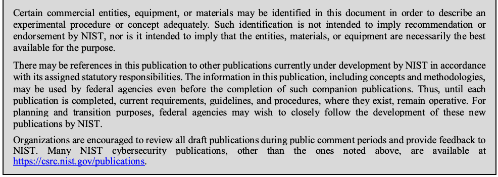

NIST SP 800-189 日本語訳
英語タイトル : Resilient Interdomain Traffic Exchange: BGP Security and DDoS Mitigation日本語タイトル : 耐障害性のあるインタードメイン・トラフィック交換：BGPセキュリティとDDoS緩和
公開日 : 2019-12-17
原文URL : https://csrc.nist.gov/pubs/sp/800/189/final
翻訳編集 : 自動生成（有志による非公式の日本語訳）, 原文取得日 : 2026-09-27, 訳文 : 665 / 739 ブロック
[要約] SP 800-189 は、ドメイン間ルーティング制御トラフィックの保護、IP アドレス偽装の防止、DoS/DDoS の検知と緩和の一部の側面について、初期指針を示します。BGP のプレフィックス乗っ取り、AS パスの改変、経路リークといった脆弱性と、送信元アドレスの偽装や反射・増幅攻撃を整理し、RPKI、BGP 起源検証、プレフィックスフィルタリング、送信元アドレス検証などの対策を推奨します。BGP の異常による DoS、通信の迂回、性能低下や、偽装アドレスを用いた大規模な DDoS 攻撃を背景とし、リモートトリガー型ブラックホール（RTBH）、Flowspec などの技術も補完策として挙げます。
NIST Special Publication 800-189
NIST特別刊行物 800-189
Resilient Interdomain Traffic Exchange:
レジリエントなドメイン間トラフィック交換：
BGP Security and DDoS Mitigation
BGPセキュリティとDDoS緩和
Kotikalapudi Sriram Doug Montgomery
Kotikalapudi Sriram、Doug Montgomery
This publication is available free of charge from: https://doi.org/10.6028/NIST.SP.800-189
本書は次のURLから無料で入手できる：https://doi.org/10.6028/NIST.SP.800-189
C O M P U T E R S E C U R I T Y
コンピュータセキュリティ
NIST Special Publication 800-189
NIST特別刊行物 800-189
Resilient Interdomain Traffic Exchange:
レジリエントなドメイン間トラフィック交換：
BGP Security and DDoS Mitigation
BGPセキュリティとDDoS緩和
Kotikalapudi Sriram Doug Montgomery
Kotikalapudi Sriram、Doug Montgomery
Advanced Network Technology Division Information Technology Laboratory
高度ネットワーク技術部門 情報技術研究所
This publication is available free of charge from: https://doi.org/10.6028/NIST.SP.800-189
本書は次のURLから無料で入手できる：https://doi.org/10.6028/NIST.SP.800-189
December 2019
2019年12月
U.S. Department of Commerce Wilbur L. Ross, Jr., Secretary
米国商務省 Wilbur L. Ross, Jr. 長官
National Institute of Standards and Technology
米国国立標準技術研究所
Walter Copan, NIST Director and Under Secretary of Commerce for Standards and Technology
Walter Copan、NIST所長兼商務省標準技術担当次官
Authority
権限
This publication has been developed by NIST in accordance with its statutory responsibilities under the Federal Information Security Modernization Act (FISMA) of 2014, 44 U.S.C. § 3551 et seq., Public Law (P.L.) 113-283. NIST is responsible for developing information security standards and guidelines, including minimum requirements for federal information systems, but such standards and guidelines shall not apply to national security systems without the express approval of appropriate federal officials exercising policy authority over such systems. This guideline is consistent with the requirements of the Office of Management and Budget (OMB) Circular A-130.
本書は、2014年連邦情報セキュリティ近代化法（FISMA）、44 U.S.C. § 3551 et seq.、公法（P.L.）113-283に基づく法定責任に従い、NISTが作成した。NISTは連邦情報システムの最低要件を含む情報セキュリティ標準およびガイドラインを策定する責任を負う。ただし、国家安全保障システムを所管する政策権限を行使する適切な連邦政府職員の明示的な承認がない限り、これらの標準およびガイドラインは国家安全保障システムに適用されない。本ガイドラインは行政管理予算局（OMB）通達A-130の要件と整合している。
Nothing in this publication should be taken to contradict the standards and guidelines made mandatory and binding on federal agencies by the Secretary of Commerce under statutory authority. Nor should these guidelines be interpreted as altering or superseding the existing authorities of the Secretary of Commerce, Director of the OMB, or any other federal official. This publication may be used by nongovernmental organizations on a voluntary basis and is not subject to copyright in the United States. Attribution would, however, be appreciated by NIST.
本書のいかなる記述も、法定権限に基づき商務長官が連邦機関に義務付け、拘束力を持たせた標準およびガイドラインに反するものと解釈してはならない。また、本ガイドラインは、商務長官、OMB局長、その他の連邦政府職員の既存の権限を変更または置き換えるものと解釈してはならない。本書は非政府組織が任意に利用でき、米国内では著作権の対象ではない。ただし、NISTは出典を明記することを歓迎する。
National Institute of Standards and Technology Special Publication 800-189 Natl. Inst. Stand. Technol. Spec. Publ. 800-189, 81 pages (December 2019) CODEN: NSPUE2
米国国立標準技術研究所 Special Publication 800-189 Natl. Inst. Stand. Technol. Spec. Publ. 800-189、81ページ（2019年12月） CODEN: NSPUE2
This publication is available free of charge from: https://doi.org/10.6028/NIST.SP.800-189
本書は次のURLから無料で入手できる：https://doi.org/10.6028/NIST.SP.800-189
Certain commercial entities, equipment, or materials may be identified in this document in order to describe an experimental procedure or concept adequately. Such identification is not intended to imply recommendation or endorsement by NIST, nor is it intended to imply that the entities, materials, or equipment are necessarily the best available for the purpose.
原本PDFの抜粋画像

実験手順または概念を十分に説明する目的で、本書では特定の商業事業体、装置または材料を挙げる場合がある。このような記載は、NISTによる推奨または保証を意味するものではなく、また、それらの事業体、材料または装置が当該目的に必ずしも最適であることを意味するものでもない。
There may be references in this publication to other publications currently under development by NIST in accordance with its assigned statutory responsibilities. The information in this publication, including concepts and methodologies, may be used by federal agencies even before the completion of such companion publications. Thus, until each publication is completed, current requirements, guidelines, and procedures, where they exist, remain operative. For planning and transition purposes, federal agencies may wish to closely follow the development of these new publications by NIST.
本刊行物では、NISTが割り当てられた法定責任に従って現在策定中の他の刊行物を参照する場合がある。本刊行物の情報（概念および方法論を含む）は、これらの関連刊行物が完成する前であっても、連邦機関が使用してもよい。したがって、各刊行物が完成するまでは、存在する場合は現行の要件、ガイドラインおよび手順が引き続き有効である。計画および移行のため、連邦機関は、NISTによるこれらの新しい刊行物の策定を注意深く追跡したいと考える場合がある。
Organizations are encouraged to review all draft publications during public comment periods and provide feedback to NIST. Many NIST cybersecurity publications, other than the ones noted above, are available at https://csrc.nist.gov/publications.
組織は、パブリックコメント期間中にすべての草案刊行物を確認し、NISTに意見を提出すべきである。上記で特記したものを除き、多くのNISTサイバーセキュリティ刊行物は https://csrc.nist.gov/publications で入手できる。
National Institute of Standards and Technology Attn: Advanced Network Technologies Division, Information Technology Laboratory
米国国立標準技術研究所 宛先：情報技術研究所 先端ネットワーク技術部門
100 Bureau Drive (Mail Stop 8920) Gaithersburg, MD 20899-8920 Email: sp800-189@nist.gov
100 Bureau Drive (Mail Stop 8920) Gaithersburg, MD 20899-8920 電子メール：sp800-189@nist.gov
All comments are subject to release under the Freedom of Information Act (FOIA).
すべての意見は、情報公開法（FOIA）に基づき公開される場合がある。
Reports on Computer Systems Technology
コンピュータシステム技術に関する報告
The Information Technology Laboratory (ITL) at the National Institute of Standards and Technology (NIST) promotes the U.S. economy and public welfare by providing technical leadership for the Nation’s measurement and standards infrastructure. ITL develops tests, test methods, reference data, proof of concept implementations, and technical analyses to advance the development and productive use of information technology. ITL’s responsibilities include the development of management, administrative, technical, and physical standards and guidelines for the cost-effective security and privacy of other than national security-related information in federal information systems. The Special Publication 800-series reports on ITL’s research, guidelines, and outreach efforts in information system security, and its collaborative activities with industry, government, and academic organizations.
国立標準技術研究所（NIST）の情報技術研究所（ITL）は、米国の計測・標準インフラに技術的リーダーシップを提供し、米国経済と公共の福祉を促進する。ITLは、情報技術の発展と生産的な利用を進めるため、試験、試験方法、参照データ、概念実証の実装、技術分析を開発する。ITLの責務には、連邦情報システムにおける国家安全保障関連以外の情報の費用対効果に優れたセキュリティとプライバシーを実現するため、管理、運用、技術および物理的な標準とガイドラインを策定することが含まれる。特別刊行物800シリーズは、情報システムセキュリティに関するITLの研究、ガイドライン、普及活動ならびに産業界、政府、学術機関との協力活動を報告する。
Abstract
概要
In recent years, numerous routing control plane anomalies, such as Border Gateway Protocol (BGP) prefix hijacking and route leaks, have resulted in denial-of-service (DoS), unwanted data traffic detours, and performance degradation. Large-scale distributed denial-of-service (DDoS) attacks on servers using spoofed internet protocol (IP) addresses and reflection-amplification in the data plane have also been frequent, resulting in significant disruption of services and damages. This special publication on Resilient Interdomain Traffic Exchange (RITE) includes initial guidance on securing the interdomain routing control traffic, preventing IP address spoofing, and certain aspects of DoS/DDoS detection and mitigation.
近年、ボーダーゲートウェイプロトコル（BGP）のプレフィックス乗っ取りや経路リークなど、数多くのルーティング制御プレーンの異常により、サービス拒否（DoS）、望ましくないデータ通信の迂回、性能低下が発生している。また、偽装したインターネットプロトコル（IP）アドレスとデータプレーンでの反射・増幅を利用するサーバーへの大規模な分散型サービス拒否（DDoS）攻撃も頻発し、サービスの重大な中断や損害をもたらしている。ドメイン間トラフィック交換のレジリエンス（RITE）に関する本特別刊行物は、ドメイン間ルーティング制御トラフィックの保護、IPアドレス偽装の防止、ならびにDoS/DDoSの検知と緩和の一部の側面について、初期指針を示す。
Many of the recommendations in this publication focus on the Border Gateway Protocol (BGP). BGP is the control protocol used to distribute and compute paths between the tens of thousands of autonomous networks that comprise the internet. Technologies recommended in this document for securing the interdomain routing control traffic include Resource Public Key Infrastructure (RPKI), BGP origin validation (BGP-OV), and prefix filtering. Additionally, technologies recommended for mitigating DoS/DDoS attacks focus on prevention of IP address spoofing using source address validation (SAV) with access control lists (ACLs) and unicast Reverse Path Forwarding (uRPF). Other technologies (including some application plane methods) such as remotely triggered black hole (RTBH) filtering, flow specification (Flowspec), and response rate limiting (RRL) are also recommended as part of the overall security mechanisms.
本書の推奨事項の多くは、インターネットを構成する数万の自律ネットワーク間で経路を配布・計算する制御プロトコルであるボーダーゲートウェイプロトコル（BGP）に焦点を当てている。ドメイン間ルーティング制御トラフィックの保護には、リソース公開鍵基盤（RPKI）、BGP起源検証（BGP-OV）、プレフィックスフィルタリングを推奨する。DoS/DDoS攻撃の緩和には、アクセス制御リスト（ACL）およびユニキャスト逆方向パス転送（uRPF）を用いた送信元アドレス検証（SAV）によるIPアドレス偽装の防止を中心とする。全体的なセキュリティ機構の一部として、リモートトリガー型ブラックホール（RTBH）フィルタリング、フロー仕様（Flowspec）、応答レート制限（RRL）など、他の技術（アプリケーションプレーンの手法を含む）も推奨する。
Keywords
キーワード
Routing security and robustness; Internet infrastructure security; Border Gateway Protocol (BGP) security; prefix hijacks; IP address spoofing; distributed denial-of-service (DDoS); Resource Public Key Infrastructure (RPKI); BGP origin validation (BGP-OV); prefix filtering; BGP path validation (BGP-PV); BGPsec; route leaks; source address validation (SAV); unicast Reverse Path Forwarding (uRPF); remotely triggered black hole (RTBH) filtering; flow specification (Flowspec).
ルーティングのセキュリティと堅牢性；インターネット基盤のセキュリティ；ボーダーゲートウェイプロトコル（BGP）のセキュリティ；プレフィックス乗っ取り；IPアドレス偽装；分散型サービス拒否（DDoS）；リソース公開鍵基盤（RPKI）；BGP起源検証（BGP-OV）；プレフィックスフィルタリング；BGP経路検証（BGP-PV）；BGPsec；経路リーク；送信元アドレス検証（SAV）；ユニキャスト逆方向パス転送（uRPF）；リモートトリガー型ブラックホール（RTBH）フィルタリング；フロー仕様（Flowspec）。
Acknowledgements
謝辞
The authors thank William T. Polk, Scott Rose, Okhee Kim, Oliver Borchert, Susan Symington, William C. Barker, William Haag, Allen Tan, and Jim Foti for their review and comments. The authors are grateful to many reviewers who provided highly helpful comments on Public Drafts 1 and 2.
著者は、レビューと意見を寄せたWilliam T. Polk、Scott Rose、Okhee Kim、Oliver Borchert、Susan Symington、William C. Barker、William Haag、Allen Tan、Jim Fotiに謝意を表する。また、公開草案第1版および第2版に非常に有益なコメントを寄せた多くのレビュアーにも感謝する。
Audience
想定読者
This document gives technical guidance and recommendations for resilient interdomain traffic exchange. The primary audience includes information security officers and managers of federal enterprise networks. The guidance applies to the network services of hosting providers (e.g., cloud-based applications and service hosting) and internet service providers (ISPs) when they are used to support federal IT systems. The guidance may also be useful for enterprise and transit network operators and equipment vendors in general.
本書は、レジリエントなドメイン間トラフィック交換のための技術的指針と推奨事項を示す。主な対象読者は、連邦政府のエンタープライズネットワークの情報セキュリティ担当者および管理者である。本指針は、連邦政府のITシステムを支援するために利用される場合、ホスティング事業者（クラウドベースのアプリケーションおよびサービスホスティングなど）とインターネットサービスプロバイダー（ISP）のネットワークサービスに適用される。また、一般にエンタープライズネットワークやトランジットネットワークの運用者、機器ベンダーにも有用となり得る。
It is expected that the guidance and applicable recommendations in this publication will be incorporated into the security plans and operational processes of federal enterprise networks. Likewise, it is expected that applicable recommendations will be incorporated into the service agreements for federal contracts for hosted application services and internet transit services.
本書の指針および該当する推奨事項は、連邦政府のエンタープライズネットワークのセキュリティ計画と運用プロセスに組み込まれることが想定されている。同様に、該当する推奨事項は、ホステッドアプリケーションサービスおよびインターネットトランジットサービスに関する連邦政府契約のサービス契約にも組み込まれることが想定されている。
Trademark Information
商標に関する情報
All registered trademarks belong to their respective organizations.
登録商標はすべて、それぞれの組織に帰属する。
Note to Readers
読者への注意
This publication supersedes NIST Special Publication 800-54, "Border Gateway Protocol Security" [SP800-54].
本書は、NIST特別刊行物800-54「ボーダーゲートウェイプロトコルのセキュリティ」[SP800-54]に代わるものである。
Patent Disclosure Notice
特許開示に関する通知
NOTICE: The Information Technology Laboratory (ITL) has requested that holders of patent claims whose use may be required for compliance with the guidance or requirements of this publication disclose such patent claims to ITL. However, holders of patents are not obligated to respond to ITL calls for patents and ITL has not undertaken a patent search in order to identify which, if any, patents may apply to this publication.
通知：情報技術研究所（ITL）は、本書の指針または要件への準拠に使用が必要となる可能性のある特許請求の範囲を保有する者に対し、その開示を求めている。ただし、特許保有者はITLの特許情報提供要請に応じる義務を負わず、ITLも、本書に適用され得る特許の有無を特定するための特許調査を実施していない。
As of the date of publication and following call(s) for the identification of patent claims whose use may be required for compliance with the guidance or requirements of this publication, no such patent claims have been identified to ITL.
刊行日時点で、本書の指針または要件への準拠に使用が必要となる可能性のある特許請求の範囲について照会を行った結果、ITLには該当する特許請求の範囲は申告されていない。
No representation is made or implied by ITL that licenses are not required to avoid patent infringement in the use of this publication.
本書の使用に際し特許侵害を避けるためのライセンスが不要であると、ITLが表明または示唆するものではない。
Executive Summary
エグゼクティブサマリー
There have been numerous incidents in recent years involving routing control plane anomalies such as Border Gateway Protocol (BGP) prefix hijacking, route leaks, and other forms of misrouting resulting in denial-of-service (DoS), unwanted data traffic detours, and performance degradation. Large-scale distributed DoS (DDoS) attacks on servers using spoofed internet protocol (IP) addresses and reflection amplification in the data plane have also been frequent, resulting in significant disruption of services and damages.
近年、ボーダーゲートウェイプロトコル（BGP）のプレフィックス乗っ取り、経路リーク、その他の誤経路設定など、ルーティング制御プレーンの異常が数多く発生し、サービス拒否（DoS）、望ましくないデータ通信の迂回、性能低下を招いている。偽装したインターネットプロトコル（IP）アドレスとデータプレーンの反射・増幅を用いてサーバーを攻撃する大規模な分散型DoS（DDoS）攻撃も頻発し、サービスの重大な中断や損害を引き起こしている。
This document provides technical guidance and recommendations for technologies that facilitate resilient interdomain traffic exchange (RITE). The primary focus of these recommendations are the points of interconnection between enterprise networks, or hosted service providers, and the public internet—in other words, between what are commonly known as “stub” networks (i.e., those networks that only provide connectivity to their end systems) and transit networks (i.e., those networks that serve to interconnect and pass traffic between stub networks and other transit networks). These points of interconnection between stub and transit networks are often referred to as the “internet’s edge.” There is usually a contractual relationship between the transit networks and the stub networks that they service, and the set of technical procedures and policies defined in that relationship is commonly called the “peering policy.”
本文書は、レジリエントなドメイン間トラフィック交換（RITE）を実現する技術に関する技術的ガイダンスと推奨事項を提供する。これらの推奨事項が主に対象とするのは、企業ネットワークまたはホスティング型サービスプロバイダと公衆インターネットとの相互接続点、すなわち、一般に「スタブ」ネットワーク（自らのエンドシステムに接続性を提供するだけのネットワーク）と呼ばれるものと、トランジットネットワーク（スタブネットワークや他のトランジットネットワークを相互接続し、その間でトラフィックを中継するネットワーク）との間の相互接続点である。スタブネットワークとトランジットネットワークの間のこうした相互接続点は、しばしば「インターネットのエッジ」と呼ばれる。トランジットネットワークと、それがサービスを提供するスタブネットワークとの間には通常、契約関係があり、その関係において定められる一連の技術的手順とポリシーは一般に「ピアリングポリシー」と呼ばれる。
Many of the recommendations in this document also apply to the points of interconnection between two transit networks. There are instances in which the recommendations for interdomain traffic exchange between transit networks will vary from those for exchanges between stub and transit networks.
本文書の推奨事項の多くは、2つのトランジットネットワーク間の相互接続点にも適用される。トランジットネットワーク間のドメイン間トラフィック交換に対する推奨事項が、スタブネットワークとトランジットネットワーク間の交換に対する推奨事項と異なる場合もある。
The provided recommendations reduce the risk of accidental attacks (caused by misconfiguration) and malicious attacks in the routing control plane, and they help detect and prevent IP address spoofing and resulting DoS/DDoS attacks. These recommendations primarily cover technologies (for security and robustness) to be used in border routers that operate the Border Gateway Protocol (commonly called BGP routers). However, they also extend to other systems that support reachability on the internet (e.g., Resource Public Key Infrastructure (RPKI) repositories, Domain Name System (DNS), other open internet services).
ここで示す推奨事項は、ルーティング制御プレーンにおける偶発的な攻撃（設定ミスに起因するもの）と悪意のある攻撃のリスクを低減し、IPアドレススプーフィングと、それに起因するDoS/DDoS攻撃の検知と防止に役立つ。これらの推奨事項は主に、Border Gateway Protocolを運用する境界ルータ（一般にBGPルータと呼ばれる）で用いる（セキュリティと堅牢性のための）技術を対象とする。ただし、インターネット上の到達可能性を支える他のシステム（例：Resource Public Key Infrastructure（RPKI）リポジトリ、Domain Name System（DNS）、その他のオープンなインターネットサービス）にも及ぶ。
It is expected that the guidance and applicable recommendations from this publication will be incorporated into the security plans and operational processes of federal enterprise networks. Likewise, it is expected that applicable recommendations will be incorporated into the service agreements for federal contracts for hosted application services and internet transit services. This document also contributes to the ongoing efforts by NIST and NTIA [DOC-Botnet] [Botnet-Roadmap] to respond to Presidential Executive Order 13800 [PEO-13800].
本書のガイダンスと該当する推奨事項は、連邦政府の企業ネットワークのセキュリティ計画と運用プロセスに組み込まれることが期待される。同様に、該当する推奨事項は、ホスティング型アプリケーションサービスとインターネットトランジットサービスに関する連邦政府契約のサービス合意にも組み込まれることが期待される。本文書はまた、大統領令13800 [PEO-13800] に対応するためにNISTとNTIAが進めている取り組み [DOC-Botnet] [Botnet-Roadmap] にも寄与する。
Technologies recommended in this document for securing interdomain routing control traffic include Resource Public Key Infrastructure (RPKI), BGP origin validation (BGP-OV), and prefix filtering. Additionally, technologies recommended for mitigating DoS/DDoS attacks include prevention of IP address spoofing using source address validation (SAV) with access control lists (ACLs) and unicast Reverse Path Forwarding (uRPF). Other technologies (including some application plane methods) such as remotely triggered black hole (RTBH) filtering, flow specification (Flowspec), and response rate limiting (RRL) are also recommended as part of the overall security mechanisms.
ドメイン間ルーティング制御トラフィックを保護するために本文書が推奨する技術には、Resource Public Key Infrastructure（RPKI）、BGPオリジン検証（BGP-OV）、プレフィックスフィルタリングがある。さらに、DoS/DDoS攻撃を緩和するために推奨する技術には、アクセス制御リスト（ACL）とユニキャストリバースパスフォワーディング（uRPF）による送信元アドレス検証（SAV）を用いたIPアドレススプーフィングの防止がある。リモートトリガーブラックホール（RTBH）フィルタリング、フロー仕様（Flowspec）、応答レート制限（RRL）などのその他の技術（一部のアプリケーションプレーンの手法を含む）も、全体的なセキュリティメカニズムの一部として推奨する。
Table of Contents
目次
5.2.1 Customer with Directly Connected Allocated Address Space:
5.2.1 直接接続された割当済みアドレス空間を持つ顧客：
Broadband and Wireless Service Providers — 32
ブロードバンドおよび無線サービスプロバイダー — 32
5.2.2 Enterprise Border Routers — 33
5.2.2 エンタープライズ境界ルーター — 33
5.2.3 Internet Service Providers — 33
5.2.3 インターネットサービスプロバイダー — 33
5.3 Role of RPKI in Source Address Validation — 34
5.3 送信元アドレス検証におけるRPKIの役割 — 34
5.4 Monitoring UDP/TCP Ports with Vulnerable Applications and Employing Traffic Filtering — 35
5.4 脆弱性のあるアプリケーションが使用するUDP/TCPポートの監視とトラフィックフィルタリングの実施 — 35
5.5 BGP Flow Specification (Flowspec) — 38
5.5 BGPフロー仕様（Flowspec）— 38
References — 41
参考文献 — 41
List of Appendices
付録一覧
List of Figures
図一覧
List of Tables
表一覧
1 Introduction
1 はじめに
1.1 What This Guide Covers
1.1 本ガイドの対象範囲
This guide provides technical guidelines and recommendations for deploying protocols and technologies that improve the security of interdomain traffic exchange. These recommendations reduce the risk of accidental attacks (caused by misconfiguration) and malicious attacks in the routing control plane, and they help detect and prevent IP address spoofing and resulting DoS/DDoS attacks. These recommendations primarily cover protocols and techniques to be used in BGP routers. However, they also extend, in part, to other systems that support reachability on the internet (e.g., RPKI repositories, DNS, and other open internet services).
本ガイドは、ドメイン間トラフィック交換のセキュリティを向上させるプロトコルおよび技術の導入に関する技術指針と推奨事項を示す。これらの推奨事項は、設定ミスによる偶発的な攻撃およびルーティング制御プレーンへの悪意ある攻撃のリスクを低減し、IPアドレス偽装とそれに起因するDoS/DDoS攻撃の検知・防止に役立つ。主にBGPルーターで使用するプロトコルと技術を扱うが、RPKIリポジトリ、DNS、その他の公開インターネットサービスなど、インターネット上の到達性を支える他のシステムにも一部適用される。
Technologies recommended in this document for securing interdomain routing control traffic include RPKI, BGP origin validation (BGP-OV), and prefix filtering. Additionally, technologies recommended for mitigating DoS/DDoS attacks include prevention of IP address spoofing using source address validation (SAV) with access control lists (ACLs) and unicast Reverse Path Forwarding (uRPF). Other technologies (including some application plane methods) such as remotely triggered black hole (RTBH) filtering, flow specification (Flowspec), and response rate limiting (RRL) are also recommended as part of the overall security mechanisms.
ドメイン間ルーティング制御トラフィックの保護には、RPKI、BGP起源検証（BGP-OV）、プレフィックスフィルタリングを推奨する。DoS/DDoS攻撃の緩和には、アクセス制御リスト（ACL）とユニキャスト逆方向パス転送（uRPF）を用いた送信元アドレス検証（SAV）によるIPアドレス偽装の防止を推奨する。全体的なセキュリティ機構の一部として、リモートトリガー型ブラックホール（RTBH）フィルタリング、フロー仕様（Flowspec）、応答レート制限（RRL）など、他の技術（アプリケーションプレーンの手法を含む）も推奨する。
This document addresses many of the same concerns as highlighted in [CSRIC6-WG3] regarding BGP vulnerabilities and DoS/DDoS attacks but goes into greater technical depth in describing standards-based security mechanisms and providing specific security recommendations.
本書は、BGPの脆弱性およびDoS/DDoS攻撃に関して[CSRIC6-WG3]で指摘された多くの懸念を扱うが、標準に基づくセキュリティ機構をより詳しく説明し、具体的なセキュリティ推奨事項を示す。
1.2 What This Guide Does Not Cover
1.2 本ガイドで扱わない事項
BGP origin validation relies on a global RPKI system (e.g., certificate authorities, publication repositories, etc.) as the source of trusted information about internet address holders and their route origin authorization statements. Each RIR operates a trusted root certificate authority (CA) in the RPKI system and publishes a Certificate Practice Statement [RFC7382] describing the security and robustness properties of each implementation. Each RPKI CA has integrity and authentication mechanisms for data creation, storage, and transmission. Nevertheless, compromise of the underlying servers and/or registry services is still a potential, if low probability, threat. Making security recommendations for mitigating against such threats is outside of the scope of this document.
BGP起源検証は、インターネットアドレスの保有者およびその経路起源認可情報に関する信頼できる情報源として、グローバルなRPKIシステム（認証局、公開リポジトリなど）に依存する。各地域インターネットレジストリ（RIR）はRPKIシステム内で信頼されたルート認証局（CA）を運用し、各実装のセキュリティと堅牢性を説明する認証局運用規程（CPS）[RFC7382]を公開する。各RPKI CAはデータの作成、保管、送信に関する完全性および認証の仕組みを備える。それでも、基盤サーバーやレジストリサービスの侵害は、確率は低いものの潜在的な脅威である。このような脅威を緩和するためのセキュリティ推奨事項は本書の対象外である。
Transport layer security is key to the integrity of messages communicated in BGP sessions. Making security recommendations for the underlying transport layer is also outside of the scope of this document.
トランスポート層セキュリティは、BGPセッションでやり取りされるメッセージの完全性に不可欠である。基盤となるトランスポート層のセキュリティ推奨事項も本書の対象外である。
DDoS attacks use spoofed IP addresses to exploit connectionless query-response services (e.g., DNS, Network Time Protocol (NTP), Simple Service Discovery Protocol (SSDP) servers) to “reflect” and amplify the impact on intended targets. This document addresses some but not all aspects of security hardening of the servers that are exploited for reflection and amplification. Security measures—such as limiting the packet rate of outlier source addresses, IP connections, or syn-proxy—may be effectively employed at servers that are used for reflection and amplification of DoS/DDoS attacks, but this document does not cover them.
DDoS攻撃では、偽装したIPアドレスを使い、DNS、ネットワークタイムプロトコル（NTP）、Simple Service Discovery Protocol（SSDP）サーバーなどのコネクションレス型クエリー応答サービスを悪用して、標的への影響を「反射」し増幅する。本書は、反射・増幅に悪用されるサーバーのセキュリティ強化の一部を扱うが、すべてを扱うものではない。外れ値となる送信元アドレスやIP接続のパケットレートの制限、SYNプロキシの利用などの対策は、DoS/DDoSの反射・増幅に使われるサーバーで有効に利用できる場合があるが、本書の対象外である。
1.3 Document Structure
1.3 文書の構成
The rest of the document is presented in the following manner:
文書の残りの部分は、次の構成である：
•Section 2: Routing control plane attacks (e.g., BGP prefix hijacking, autonomous system (AS) path modification, and route leaks) are described.
•第2節：BGPプレフィックス乗っ取り、自律システム（AS）パスの改変、経路リークなど、ルーティング制御プレーンへの攻撃について説明する。
•Section 3: Data plane attacks involving source IP address spoofing and reflection amplification are described.
•第3節：送信元IPアドレス偽装および反射・増幅を伴うデータプレーン攻撃について説明する。
•Section 4: Solutions are described, and security recommendations are made for routing control plane/BGP security. The solution technologies that are discussed include RPKI, BGP origin validation (BGP-OV), prefix filtering, BGP path validation (BGP-PV), Generalized TTL Security Mechanism (GTSM), and route leak detection and mitigation.
•第4節：ルーティング制御プレーン／BGPのセキュリティ対策と推奨事項を示す。RPKI、BGP起源検証（BGP-OV）、プレフィックスフィルタリング、BGPパス検証（BGP-PV）、一般化TTLセキュリティ機構（GTSM）、経路リークの検知と緩和を含む解決技術を取り上げる。
•Section 5: Solutions are described, and security recommendations are made for detection and mitigation of source IP address spoofing and reflection amplification attacks. The solution technologies that are discussed include ACLs, various uRPF methods, response rate limiting (RRL), RTBH, and Flowspec.
•第5節：送信元IPアドレス偽装と反射・増幅攻撃の検知・緩和に関する対策とセキュリティ推奨事項を示す。解決技術には、ACL、各種uRPF方式、応答レート制限（RRL）、RTBH、Flowspecを含む。
1.4 Conventions Used in this Guide
1.4 本ガイドで使用する表記規則
Throughout this guide, the following format conventions are used to denote special use text:
本ガイドでは、特別な用途のテキストを示すため、次の書式規則を使用する：
“Security Recommendation” denotes a recommendation that should be addressed in security plans, operational practices, and agreements for contracted services.
「セキュリティ推奨事項」は、セキュリティ計画、運用慣行、および契約サービスに関する合意で対処すべき推奨事項を示す。
URLs are included in the text and references to guide readers to a given website or online tool designed to aid administrators. This is not meant to be an endorsement of the website or any product/service offered by the website publisher. All URLs were considered valid at the time of writing.
本文および参考文献には、読者をウェブサイトや管理者を支援するオンラインツールへ案内するURLを記載している。これらのURLの掲載は、該当ウェブサイトまたはその運営者が提供する製品／サービスを推奨するものではない。すべてのURLは執筆時点で有効と判断された。
2 Control Plane/BGP Vulnerabilities
2 制御プレーン／BGPの脆弱性
2.1 Prefix Hijacking and Announcement of Unallocated Address Space
2.1 プレフィックス乗っ取りと未割当アドレス空間の広告
A BGP prefix hijack occurs when an autonomous system (AS) accidentally or maliciously originates a prefix that it is not authorized (by the prefix owner) to originate. This is also known as false origination (or announcement). In contrast, if an AS is authorized to originate/announce a prefix by the prefix owner, then such a route origination/announcement is called legitimate. In the example illustrated in Figure 1, prefix 192.0.2.0/24 is legitimately originated by AS64500, but AS64510 falsely originates it. The path to the prefix via the false origin AS will be shorter for a subset of the ASes on the internet, and this subset of ASes will install the false route in their routing table or forwarding information base (FIB). That is, ASes for which AS64510 is closer (i.e., shorter AS path length) would choose the false announcement, and thus data traffic from clients in those ASes destined for the network 192.0.2/24 will be misrouted to AS64510.
BGPプレフィックス乗っ取りは、自律システム（AS）が、プレフィックス所有者から権限を与えられていないプレフィックスを、誤ってまたは悪意を持って起源として広告することで発生する。これは偽の起源広告とも呼ばれる。これに対し、所有者が起源広告を許可した経路の起源広告は正当なものと呼ばれる。図1の例では、192.0.2.0/24はAS64500が正当に起源広告するが、AS64510も偽って広告する。偽の起源ASを経由する経路は、インターネット上の一部のASにとって短くなり、それらのASは誤った経路をルーティングテーブルまたは転送情報ベース（FIB）に登録する。つまり、AS64510までの距離（ASパス長）が短いASは偽の広告を選択し、そこから192.0.2/24宛てに送られるデータ通信はAS64510へ誤って転送される。
![Figure 1: Illustration of Prefix Hijacking and Announcement of Unallocated Address Space. A network of cloud-shaped autonomous systems split by a dashed vertical line. On the left, AS64500 (yellow) announces 192.0.2.0/24, labeled “Legitimate announcement” twice: solid green arrows run AS64500 → AS64496 → AS64997 → AS64501, and dotted green arrows run AS64500 → AS64998 → AS64997. On the right, AS64510, marked by a red “Attack / Anomaly” burst, sends a red arrow labeled 192.0.2.0/24 to AS64502 (“False origin announcement (Hijack)”), and a red arrow goes from AS64502 up to AS64501. AS64503 sends a brown arrow labeled 240.18.0.0/20 to AS64501 (“Unallocated address space”). A dashed red arrow pointing right is labeled “Shortest path to 192.0.2.0/24 changes for ASes closer to the attacker”. Bottom text: “Adverse effects: denial-of-service, misrouting of traffic, unauthorized routing”.](assets/189/p0014-figure-01.png)
図1：プレフィックス乗っ取りと未割当アドレス空間の広告の例。雲の形の自律システム（AS）のネットワークが、破線の縦線で左右に分けられている。左側では黄色のAS64500が192.0.2.0/24を広告し、2か所に「Legitimate announcement」（正当な広告）と書かれている。実線の緑の矢印はAS64500→AS64496→AS64997→AS64501と進み、点線の緑の矢印はAS64500→AS64998→AS64997と進む。右側では、赤い「Attack / Anomaly」（攻撃／異常）の爆発記号の付いたAS64510から、192.0.2.0/24と書かれた赤い矢印がAS64502へ向かい（「False origin announcement (Hijack)」：偽の起源広告（乗っ取り））、AS64502から赤い矢印がAS64501へ上がる。AS64503からは240.18.0.0/20と書かれた茶色の矢印がAS64501へ向かう（「Unallocated address space」：未割当アドレス空間）。右向きの赤い破線矢印には「Shortest path to 192.0.2.0/24 changes for ASes closer to the attacker」（攻撃者に近いASでは192.0.2.0/24への最短経路が変わる）とある。下部に「Adverse effects: denial-of-service, misrouting of traffic, unauthorized routing」（悪影響：サービス妨害、トラフィックの誤った経路制御、無認可の経路制御）と書かれている。
Figure 1: Illustration of Prefix Hijacking and Announcement of Unallocated Address Space
図1：プレフィックス乗っ取りと未割当アドレス空間の広告の例
The rules for IP route selection on the internet always prefer the most specific (i.e., longest) matching entry in a router’s FIB. When an offending AS falsely announces a more-specific prefix (than a prefix announced by an authorized AS), the longer, unauthorized prefix will be widely accepted and used to route data. Figure 1 also illustrates an example of unauthorized origination of unallocated (reserved) address space 240.18.0.0/20. Currently, 240.0.0.0/8 is reserved for future use [IANA-v4-r]. Similarly, an AS may also falsely originate allocated but currently unused address space. This is referred to as prefix squatting, where someone else’s unused prefix is temporarily announced and used to send spam or for some other malicious purpose.
インターネット上のIP経路選択では、ルーターのFIBにある一致する経路のうち、最も具体的（すなわち最長）な経路が常に優先される。問題のあるASが、権限を持つASの広告よりも具体的なプレフィックスを偽って広告すると、より長い未承認プレフィックスが広く受け入れられ、データ転送に使われる。図1は、未割当（予約済み）アドレス空間240.18.0.0/20を不正に起源広告する例も示す。現在、240.0.0.0/8は将来の利用に備えて予約されている[IANA-v4-r]。ASは、割当済みだが現在使われていないアドレス空間を偽って起源広告することもある。これをプレフィックススクワッティングといい、他者の未使用プレフィックスを一時的に広告して、スパム送信などの悪意ある目的に利用する。
The various types of unauthorized prefix originations described above are called prefix hijacks or false origin announcements. The unauthorized announcement of a prefix longer than the legitimate announcement is called a sub-prefix hijack. The consequences of such adverse actions can be serious and include denial-of-service, eavesdropping, misdirection to imposter servers (to steal login credentials or inject malware), or defeat of IP reputation systems to launch spam email. There have been numerous incidents involving prefix hijacks in recent years. There are several commercial services and research projects that track and log anomalies in the global BGP routing system [BGPmon] [ThousandEyes] [BGPStream] [ARTEMIS]. Many of these sites provide detailed forensic analyses of observed attack scenarios.
上述の未承認プレフィックス起源広告は、プレフィックス乗っ取りまたは偽の起源広告と呼ばれる。正当な広告より長いプレフィックスを未承認で広告することは、サブプレフィックス乗っ取りと呼ばれる。このような行為は深刻な結果をもたらし、サービス拒否、盗聴、偽装サーバーへの誘導（ログイン資格情報の窃取やマルウェアの注入）、IPレピュテーションシステムを無効化したスパムメール送信などにつながる。近年、プレフィックス乗っ取りの事例が数多く発生している。世界的なBGPルーティングシステムの異常を追跡・記録する商用サービスや研究プロジェクトも複数あり[BGPmon] [ThousandEyes] [BGPStream] [ARTEMIS]、多くは観測された攻撃シナリオの詳細なフォレンジック分析を提供する。
2.2 AS Path Modification
2.2 ASパスの改変
BGP messages carry a sequence of AS numbers that indicates the “path” of interconnected networks over which data will flow. This “AS_PATH” [RFC4271] data is often used to implement routing policies that reflect the business agreements and peering policies that have been negotiated between networks. BGP is also vulnerable to modification of the AS_PATH information that it conveys. As an example, a malicious AS which receives a BGP update may illegitimately remove some of the preceding ASes in the AS_PATH attribute of the update to make the path length seem shorter. When the update modified in this manner is propagated, the ASes upstream can be deceived to believe that the path to the advertised prefix via the adversary AS is shorter. By doing this, the adversary AS may seek to illegitimately increase its revenue from its customers, or may be able to eavesdrop on traffic that would otherwise not transit through their AS.
BGPメッセージには、データが通過する相互接続ネットワークの「経路」を示すAS番号の列が含まれる。この「AS_PATH」[RFC4271]情報は、ネットワーク間で交渉された事業契約やピアリングポリシーを反映したルーティングポリシーの実装によく使われる。BGPが伝えるAS_PATH情報は改変される危険もある。たとえば、BGP更新を受け取った悪意あるASがAS_PATH属性の先行ASを不正に削除し、経路長を短く見せることがある。このように改変された更新が伝播すると、上流のASは攻撃者のASを経由する広告プレフィックスへの経路が短いと誤認する。攻撃者は、顧客からの収益を不正に増やしたり、本来そのASを通らない通信を盗聴したりする可能性がある。
Another example of maliciously modifying a BGP update is when an adversary AS replaces a prefix in a received update with a more-specific prefix (subsumed by the prefix) and then forwards the update to neighbors. This attack is known as a Kapela-Pilosov attack [Kapela-Pilosov]. Only the prefix is replaced by a more-specific prefix, but the AS path is not altered. In BGP path selection, a more-specific prefix advertisement wins over a less-specific prefix advertisement. This means that ASes on the internet would widely accept and use the adversary AS’s advertisement for the more-specific prefix. The exceptions are the ASes that are in the AS path from the adversary to the prefix. These exception ASes reject any advertisements that they may receive for the more-specific prefix because they detect their own AS number in the AS path. This is called avoidance of loop detection and is a standard practice in BGP. Thus, the data path from the adversary AS to the prefix (i.e., the network in consideration) remains intact (i.e., unaffected by the malicious more-specific advertisement). The net result of this attack is very serious. The adversary would be able to force almost all traffic for the more-specific prefix to be routed via their AS. Thus, they can eavesdrop on the data (destined for the more-specific prefix) while channeling it back to the legitimate destination to avoid detection.
BGP更新を悪意を持って改変する別の例では、攻撃者ASは受信した更新のプレフィックスを、それに含まれるより具体的なプレフィックスに置き換えて近隣へ転送する。これはKapela-Pilosov攻撃[Kapela-Pilosov]と呼ばれる。置き換えられるのはプレフィックスだけで、ASパスは変更されない。BGPの経路選択では、より具体的なプレフィックスの広告がより広いプレフィックスの広告より優先されるため、インターネット上のASは攻撃者ASの広告を広く受け入れ、利用する。ただし、攻撃者から対象プレフィックスまでのASパス上にあるASは例外である。これらのASはASパス内に自AS番号を検出するため、より具体的なプレフィックスの広告を拒否する。これはループ検出回避と呼ばれ、BGPの標準的な運用である。そのため、攻撃者ASから対象プレフィックス（対象ネットワーク）までのデータ経路は保たれ、悪意あるより具体的な広告の影響を受けない。この攻撃の結果は深刻で、攻撃者はより具体的なプレフィックス宛ての通信のほぼすべてを自AS経由にできる。検知を避けるため、盗聴した通信を正当な宛先へ中継することも可能である。
2.3 Route Leaks
2.3 経路リーク
Previously, it was noted that the interconnections of networks on the internet are dictated by contracted business relationships that express the policies and procedures for the exchange of control and data traffic at each point of interconnection. Such peering policies often specify limits on what routing announcements will be accepted by each party. Often these policies reflect a customer, transit provider, and/or lateral peer business relationship between networks.
前述のとおり、インターネット上のネットワーク間の接続は、各接続点で制御トラフィックとデータ通信を交換するためのポリシーや手順を定める、契約上の事業関係によって規定される。こうしたピアリングポリシーでは、各当事者が受け入れるルーティング広告の範囲を定めることが多い。これらのポリシーには、ネットワーク間の顧客、トランジットプロバイダー、または同階層ピアという事業関係が反映されることが多い。
Definitions of Peering Relations, Customer Cone: These definitions are useful for route leaks (here and in Section 4.9) and also for BGP-OV (Section 4.3), prefix filtering (Sections 4.4 and 4.5), and SAV/uRPF (Sections 5.1 and 5.2). A transit provider typically provides service to connect its customer(s) to the global internet. A customer AS or network may be single-homed to one transit provider or multi-homed to more than one transit providers. A stub customer AS has no customer ASes or lateral peer ASes of its own. A leaf customer is a stub customer that is single-homed to one transit provider and not connected to any other AS. Peering relationships considered in this document are provider-to-customer (P2C), customer-to-provider (C2P), and peer-to-peer (p2p). Here, “provider” refers to transit provider. The first two are transit relationships. A peer connected via a p2p link is known as a lateral peer (non-transit). A customer cone of AS A is defined as AS A plus all the ASes that can be reached from A following only P2C links [Luckie]. The term “customer cone prefixes” of an AS refers to the union of the prefixes received from all directly connected customers and the prefixes originated by the AS itself. Naturally, this set recursively includes customers’ prefix advertisements (down the hierarchy). ASes that have a lateral peering (i.e., p2p) relationship typically announce their customer cone prefixes to each other and subsequently announce the lateral peer’s customer cone prefixes to their respective customers but not to other lateral peers or transit providers.
ピアリング関係と顧客コーンの定義：これらの定義は、経路リーク（本節および4.9節）、BGP-OV（4.3節）、プレフィックスフィルタリング（4.4節、4.5節）、SAV/uRPF（5.1節、5.2節）に役立つ。トランジットプロバイダーは通常、顧客をグローバルインターネットへ接続するサービスを提供する。顧客ASまたはネットワークは、1つのトランジットプロバイダーにのみ接続する場合（シングルホーム）も、複数に接続する場合（マルチホーム）もある。スタブ顧客ASは、自身の顧客ASも同階層ピアASも持たない。リーフ顧客は、1つのトランジットプロバイダーにのみ接続し、他のASには接続しないスタブ顧客である。本書では、プロバイダーから顧客へ（P2C）、顧客からプロバイダーへ（C2P）、およびピア間（p2p）の関係を扱う。ここで「プロバイダー」はトランジットプロバイダーを指し、最初の2つはトランジット関係である。p2pリンクで接続されたピアは、非トランジットの同階層ピアと呼ばれる。AS Aの顧客コーンは、AS Aと、P2CリンクのみをたどってAから到達できるすべてのASから成る[Luckie]。ASの「顧客コーンプレフィックス」は、直接接続されたすべての顧客から受け取ったプレフィックスと、そのAS自身が起源とするプレフィックスの和集合を指す。当然ながら、この集合には階層を下る顧客のプレフィックス広告も再帰的に含まれる。同階層ピア関係（p2p）にあるASは通常、顧客コーンのプレフィックスを互いに広告し、その後、相手の顧客コーンのプレフィックスをそれぞれの顧客へ広告するが、他の同階層ピアやトランジットプロバイダーには広告しない。
![Figure 2: Illustration of the basic notion of a route leak. Three ovals: “ISP1 (AS1)”, “ISP2 (AS2)” and “Customer (AS3)”. An arrow labeled “Prefix (P)” enters ISP1. ISP1 sends P[AS1] to ISP2 over a link labeled “p2p”, and P[AS1] to Customer over a link labeled “P2C”. Customer sends P[AS3, AS1] to ISP2 over a link labeled “C2P”, marked “Route leak”, next to a red “Attack / Anomaly” burst. From ISP2, red arrows fan out, labeled twice “Route leak propagated P[AS2,AS3,AS1]”. Legend: “C2P = Customer-to-provider”, “P2C = Provider-to-customer”, “p2p = Lateral peers”. Bottom note: “In general, ISPs prefer customer route announcements over those from others.”](assets/189/p0016-figure-01.png)
図2：経路リークの基本的な考え方の例。「ISP1 (AS1)」「ISP2 (AS2)」「Customer (AS3)」（顧客）の3つの楕円がある。「Prefix (P)」（プレフィックスP）と書かれた矢印がISP1に入る。ISP1は「p2p」と書かれたリンクでISP2へP[AS1]を送り、「P2C」と書かれたリンクで顧客へP[AS1]を送る。顧客は「C2P」と書かれたリンクでISP2へP[AS3, AS1]を送り、これに「Route leak」（経路リーク）と書かれ、横に赤い「Attack / Anomaly」（攻撃／異常）の爆発記号がある。ISP2からは赤い矢印が放射状に伸び、2か所に「Route leak propagated P[AS2,AS3,AS1]」（伝播した経路リーク）とある。凡例は「C2P = Customer-to-provider」（顧客からプロバイダー）、「P2C = Provider-to-customer」（プロバイダーから顧客）、「p2p = Lateral peers」（ラテラルピア）である。下部に「In general, ISPs prefer customer route announcements over those from others.」（一般にISPは、他からの経路広告より顧客の経路広告を優先する）と書かれている。
Figure 2: Illustration of the basic notion of a route leak
図2：経路リークの基本的な考え方の例
These relationships are significant because much of the operation of the global internet is designed such that a stub or customer AS should never be used to route between two transit ASes. This policy is implemented by insuring that stub or customer ASes do not pass BGP routing information received from one transit provider to another. Figure 2 illustrates a common form of route leak that occurs when a multi-homed customer AS (such as AS3 in Figure 2) learns a prefix update from one transit provider (ISP1) and “leaks” the update to another transit provider (ISP2) in violation of intended routing policies, and the second transit provider does not detect the leak and propagates the leaked update to its customers, lateral peers, and transit ISPs [RFC7908]. Some examples of recent route leak incidents include: 1) the MainOne (a Nigerian ISP) leak of Google prefixes, which caused an outage of Google services for over an hour in November 2018 [Naik]; (2) the Dodo-Telstra incident in March 2012, which caused an outage of internet services nationwide in Australia [Huston2012]; and (3) the massive Telekom Malaysia route leaks, which Level3, in turn, accepted and propagated [Toonk-B].
これらの関係が重要なのは、グローバルインターネットの運用の多くが、スタブASまたは顧客ASを2つのトランジットAS間の経路として決して使用しないように設計されているためである。このポリシーは、スタブASまたは顧客ASが、一方のトランジットプロバイダーから受け取ったBGPルーティング情報を別のトランジットプロバイダーへ渡さないようにすることで実施される。図2は、経路リークのよくある形態を示す。これは、マルチホーム顧客AS（図2のAS3など）が一方のトランジットプロバイダー（ISP1）からプレフィックス更新を学習し、意図されたルーティングポリシーに違反してその更新を別のトランジットプロバイダー（ISP2）へ「リーク」し、第2のトランジットプロバイダーがそのリークを検知せずに、リークされた更新を自らの顧客、同階層ピア、およびトランジットISPへ伝播させるときに発生する[RFC7908]。近年の経路リーク事例には、1) 2018年11月にGoogleのサービスを1時間以上停止させた、MainOne（ナイジェリアのISP）によるGoogleプレフィックスのリーク[Naik]、(2) 2012年3月にオーストラリア全土でインターネットサービスを停止させたDodo-Telstra事件[Huston2012]、および(3) Telekom Malaysiaによる大規模な経路リークをLevel3が受け入れて伝播させた事例[Toonk-B]がある。
More generally, as defined in [RFC7908], a route leak is the propagation of routing announcements beyond their intended scope. That is, an AS’s announcement of a learned BGP route to another AS is in violation of the intended policies of the receiver, the sender, and/or one of the ASes along the preceding AS path.
[RFC7908]の定義によれば、経路リークとは、意図された範囲を越えてルーティング広告が伝播することである。すなわち、あるASが学習したBGP経路を別のASに広告することが、受信側、送信側、または直前のASパス上にあるASのいずれかの意図されたポリシーに違反する状態を指す。
In [RFC7908], several types of route leaks are enumerated and described together with examples of recent incidents. The result of a route leak can include redirection of traffic through an unintended path, which may enable eavesdropping or malicious traffic analysis. When a large number of routes is leaked simultaneously, the offending AS is often overwhelmed by the resulting unexpected data traffic and drops much of the traffic that it receives [Huston2012] [Toonk-A] [Naik] [Zmijewski]. This causes blackholing and denial-of-service for the affected prefixes. Route leaks can be accidental or malicious but most often arise from accidental misconfigurations.
[RFC7908]では、近年の事例とともに複数の経路リークの種類が列挙・説明されている。経路リークによって通信が意図しない経路へ迂回し、盗聴や悪意あるトラフィック分析が可能になることがある。多数の経路が同時にリークすると、問題の原因となったASは、その結果生じる予期しないデータ通信に圧倒されることが多く、受信したトラフィックの多くを破棄する[Huston2012] [Toonk-A] [Naik] [Zmijewski]。その結果、影響を受けたプレフィックスがブラックホール化し、サービス拒否が発生する。経路リークは偶発的にも悪意によっても起こるが、多くは設定ミスに起因する。
3 IP Address Spoofing & Reflection Amplification Attacks
3 IPアドレス偽装と反射・増幅攻撃
3.1 Spoofed Source Addresses
3.1 送信元アドレスの偽装
Distributed denial-of-service (DDoS) is a form attack where the attack traffic is generated from many distributed sources to achieve a high-volume attack and directed towards an intended victim (i.e., system or server) [Arbor] [Arbor2] [ISOC] [Huston2016] [Mirai1]. To conduct a direct DDoS attack, the attacker typically makes use of a few powerful computers or a vast number of unsuspecting, compromised third-party devices (e.g., laptops, tablets, cell phones, Internet of Things (IoT) devices, etc.). The latter scenario is often implemented through botnets [Arbor] [Huston2016] [DOC-Botnet]. In many DDoS attacks, the IP source addresses in the attack messages are “spoofed” to avoid traceability [Arbor]. Some DDoS attacks are launched without using spoofed source addresses. For example, in the Mirai attacks [Mirai1] [Mirai2] [Winward] [TA16-288A], a very large number of compromised bots (IoT devices) sending the attack traffic used the normal source IP addresses of the IoT devices. Further, the source addresses could also belong to a hijacked prefix with the intention of deceiving source address validation (SAV) [BCP38] [BCP84] (also see Section 5.1.7). If a hijacked prefix is being used, then the source addresses appearing in the DDoS attack packets are sometimes randomly selected from that prefix.
分散型サービス拒否（DDoS）は、多数の分散した送信元から攻撃トラフィックを生成し、大量の通信を特定の被害者（システムまたはサーバー）へ向ける攻撃である[Arbor] [Arbor2] [ISOC] [Huston2016] [Mirai1]。直接的なDDoS攻撃では、攻撃者は通常、少数の高性能コンピューター、または気付かないうちに侵害された多数の第三者機器（ノートPC、タブレット、携帯電話、IoT機器など）を使用する。後者はボットネットを通じて実行されることが多い[Arbor] [Huston2016] [DOC-Botnet]。追跡を避けるため、多くのDDoS攻撃では攻撃メッセージの送信元IPアドレスが偽装される[Arbor]。一方、偽装アドレスを使わない攻撃もある。たとえばMirai攻撃[Mirai1] [Mirai2] [Winward] [TA16-288A]では、攻撃トラフィックを送る多数の侵害済みボット（IoT機器）が、各機器の通常の送信元IPアドレスを使用した。また、送信元アドレス検証（SAV）[BCP38] [BCP84]を欺く目的で、乗っ取られたプレフィックス内のアドレスを使う場合もある（5.1.7節を参照）。乗っ取られたプレフィックスが使われる場合、DDoS攻撃パケットの送信元アドレスはそのプレフィックスから無作為に選ばれることがある。
3.2 Reflection Amplification Attacks
3.2 反射・増幅攻撃
Source address spoofing is often combined with reflection and amplification from poorly administered open internet servers (e.g., DNS, NTP) to multiply the attack traffic volume by a factor of 50 or more [TA14-017A] [ISOC]. The way this works can be explained with the illustration shown in Figure 3. The attacker may use a single high-capacity computer with a high bandwidth internet connection or a botnet consisting of many compromised devices to send query requests to high-performance internet servers. The attacking systems employ source address spoofing, which inserts the IP address of the target (203.0.113.1) as the source address in the requests. For internet services that use the User Datagram Protocol (UDP) (e.g., DNS, NTP), the query and response are each contained in a single packet, and the exchange does not require the establishment of a connection between the source and the server (unlike Transmission Control Protocol (TCP)). The responses from such open internet servers are directed to the attack target since the target’s IP address was forged as the source address field of the request messages. Often, the response from the server to the target address is much larger than the query itself, amplifying the effect of the DoS attack (see Table 1 in Section 5.4). Such reflection and amplification attacks can result in massive DDoS with attack volumes in the range of hundreds of Gbps [Symantec] [ISTR-2015] [ISTR-2016] [ISTR-2017] [ISOC] [Verisign1] [Verisign2] [Bjarnason]. In Q1 2018, there was an increase of 100% quarter-over-quarter and 700% year-over-year in DNS amplification attacks [HelpNet]. The attack volumes may still rise significantly if the Mirai-scale attacks are combined with reflection amplification attacks.
送信元アドレス偽装は、適切に管理されていない公開インターネットサーバー（DNS、NTPなど）による反射・増幅と組み合わせられ、攻撃トラフィック量を50倍以上に増やすことが多い[TA14-017A] [ISOC]。その仕組みを図3に示す。攻撃者は、高速なインターネット接続を持つ単一の高性能コンピューター、または多数の侵害済み機器からなるボットネットを使い、高性能なインターネットサーバーへ問い合わせを送る。攻撃システムは送信元アドレスを偽装し、要求の送信元アドレスに標的（203.0.113.1）のIPアドレスを設定する。DNSやNTPなどユーザーデータグラムプロトコル（UDP）を使うサービスでは、問い合わせと応答はそれぞれ単一のパケットに収まり、伝送制御プロトコル（TCP）と異なり送信元とサーバー間で接続を確立する必要がない。要求の送信元欄に標的のIPアドレスが偽装されているため、公開サーバーからの応答は攻撃標的へ送られる。サーバーから標的アドレスへの応答は問い合わせ自体よりはるかに大きいことが多く、DoS攻撃の効果を増幅する（5.4節の表1を参照）。反射・増幅攻撃によって、毎秒数百ギガビット規模の大規模DDoSが発生することがある[Symantec] [ISTR-2015] [ISTR-2016] [ISTR-2017] [ISOC] [Verisign1] [Verisign2] [Bjarnason]。2018年第1四半期には、DNS増幅攻撃が前四半期比100%、前年同期比700%増加した[HelpNet]。Mirai級の攻撃と反射・増幅攻撃が組み合わされれば、攻撃量はさらに大幅に増える可能性がある。
![Figure 3: DDoS by IP source address spoofing and reflection and amplification. Two attacker clouds on the left: “Attacker using high capacity computer(s) with high bandwidth internet connection (possibly at a hosting company)” and “Attacker using botnet sources” (laptops). Thin dashed red arrows labeled “Query requests with forged SA = 203.0.113.1” go from the attackers through router clouds to two servers labeled “Open reflector/ amplifier”. Thick dashed red arrows go from the reflectors through the routers to a server on the right labeled “Victim of DoS/DDoS attack” with address 203.0.113.1.](assets/189/p0019-figure-01.png)
図3：IP送信元アドレスの偽装と反射・増幅によるDDoS攻撃。左側に攻撃者の雲が2つある。「Attacker using high capacity computer(s) with high bandwidth internet connection (possibly at a hosting company)」（高帯域のインターネット接続を持つ高性能コンピューターを使う攻撃者（ホスティング会社にいる可能性がある））と、ノートPCが描かれた「Attacker using botnet sources」（ボットネットの送信元を使う攻撃者）である。細い赤の破線矢印が攻撃者からルーターの雲を通って「Open reflector/ amplifier」（公開リフレクター／増幅器）と書かれた2台のサーバーへ向かい、「Query requests with forged SA = 203.0.113.1」（送信元アドレスを203.0.113.1に偽装した問い合わせ要求）と書かれている。太い赤の破線矢印は、リフレクターからルーターを通って右側の「Victim of DoS/DDoS attack」（DoS／DDoS攻撃の被害者、アドレス203.0.113.1）のサーバーへ向かう。
Figure 3: DDoS by IP source address spoofing and reflection and amplification
図3：IP送信元アドレスの偽装と反射・増幅によるDDoS攻撃
4 Control Plane/BGP Security – Solutions and Recommendations
4 制御プレーン／BGPのセキュリティ対策と推奨事項
BGP security vulnerabilities and mitigation techniques have been of interest within the networking community for several years (e.g., [IETF-SIDR] [RFC7454] [NANOG] [Murphy] [MANRS] [MANRS2] [ENISA] [Quilt] [Levy1] [CSRIC4-WG6] [CSRIC6-WG3] [RFC6811] [RFC8205] [NSA-BGP] [CSDE] [Chung] [Wishnick] [Yoo]). This section highlights key BGP security technologies that have emerged from such efforts and makes related security recommendations. Many of the solution technologies discussed here have been developed and standardized in the Internet Engineering Task Force (IETF) [IETF-SIDR] [IETF-SIDROPS] [IETF-IDR] [IETF-OPSEC] [IETF-GROW]. The [MANRS] document can be thought of as complementary to this document since it provides implementation guidance for some of the solution technologies described in this section and Section 5. This document addresses many of the same concerns regarding BGP vulnerabilities and DoS/DDoS attacks as highlighted in [CSRIC6-WG3] but goes into greater technical depth in describing standards-based and commercially available security mechanisms and providing specific security recommendations.
BGPのセキュリティ脆弱性と緩和技術は、ネットワーク分野で長年注目されてきた（例：[IETF-SIDR] [RFC7454] [NANOG] [Murphy] [MANRS] [MANRS2] [ENISA] [Quilt] [Levy1] [CSRIC4-WG6] [CSRIC6-WG3] [RFC6811] [RFC8205] [NSA-BGP] [CSDE] [Chung] [Wishnick] [Yoo]）。本節では、こうした取り組みから生まれた主要なBGPセキュリティ技術を取り上げ、関連するセキュリティ推奨事項を示す。ここで扱う解決技術の多くは、インターネット技術タスクフォース（IETF）で開発・標準化された[IETF-SIDR] [IETF-SIDROPS] [IETF-IDR] [IETF-OPSEC] [IETF-GROW]。[MANRS]文書は、本節および第5節で扱う解決技術の一部について導入指針を示しており、本書を補完するものと考えられる。本書は、[CSRIC6-WG3]が指摘したBGP脆弱性およびDoS/DDoS攻撃に関する多くの懸念を扱うが、標準に基づくセキュリティ機構や市販のセキュリティ機構をより詳しく説明し、具体的なセキュリティ推奨事項を示す。
4.1 Registration of Route Objects in Internet Routing Registries
4.1 インターネットルーティングレジストリへの経路オブジェクト登録
Declarative data about internet resource allocations and routing policies have traditionally been available from regional internet registries (RIRs) and internet routing registries (IRRs). The RIR data are maintained regionally by ARIN in North America, RIPE in Europe, LACNIC in Latin America, APNIC in Asia-Pacific, and AfriNIC in Africa. The IRRs are maintained by the RIRs (RIPE NCC, APNIC, AfriNIC, and ARIN) as well as some major internet service providers (ISPs). Additionally, Merit’s Routing Assets Database (RADb) [Merit-RADb] and other similar entities provide a collective routing information base consisting of registered (at their site) as well as mirrored (from the IRRs) data. The route objects available in the IRRs provide routing information declared by network operators. Specifically, the route objects contain information regarding the origination of prefixes (i.e., the association between prefixes and the ASes which may originate them). Routing Policy Specification Language (RPSL) [RFC4012] [RFC7909] and the Shared Whois Project (SWIP) [SWIP] are two formats in which the data in RIRs/IRRs are presented. ARIN predominantly uses SWIP, but some use RPSL as well. LACNIC also uses SWIP. The rest of the RIRs and the ISPs’ IRRs use only RPSL.
インターネット資源の割当てやルーティングポリシーに関する宣言データは、従来、地域インターネットレジストリ（RIR）およびインターネットルーティングレジストリ（IRR）から入手できた。RIRのデータは、北米のARIN、欧州のRIPE、中南米のLACNIC、アジア太平洋地域のAPNIC、アフリカのAfriNICが地域ごとに管理する。IRRは、RIR（RIPE NCC、APNIC、AfriNIC、ARIN）と一部の主要なインターネットサービスプロバイダー（ISP）が管理する。MeritのRouting Assets Database（RADb）[Merit-RADb]や他の同様の組織は、（自サイトで）登録されたデータと（IRRから）複製したデータからなるルーティング情報基盤を提供する。IRRの経路オブジェクトは、ネットワーク運用者が宣言したルーティング情報を提供する。具体的には、プレフィックスを起源として広告できるASとの対応関係を含む。RIR/IRRデータの形式には、Routing Policy Specification Language（RPSL）[RFC4012] [RFC7909]とShared Whois Project（SWIP）[SWIP]がある。ARINは主にSWIPを使用するが、RPSLを使う場合もある。LACNICもSWIPを使用する。他のRIRおよびISPのIRRはRPSLのみを使用する。
The completeness, correctness, freshness, and consistency of the data derived from these sources vary widely, and the data is not always reliable. However, there are efforts underway to make the data complete and reliable [RFC7909]. Network operators often obtain route object information from the IRRs and/or RADb, and they can make use of the data in the creation of prefix filters (see Sections 4.4 and 4.5) in their BGP routers.
これらの情報源から得られるデータの完全性、正確性、鮮度、一貫性には大きなばらつきがあり、必ずしも信頼できるとは限らない。ただし、データを完全かつ信頼できるものにする取り組みが進められている[RFC7909]。ネットワーク運用者はIRRやRADbから経路オブジェクト情報を取得し、BGPルーターのプレフィックスフィルター作成（4.4節、4.5節を参照）に利用することが多い。
It is worth noting that RIPE NCC, APNIC, and AfriNIC each run internet routing registries (IRRs) that are integrated with regional internet registry (RIR) allocation data that facilitate stronger authentication schemes. These are documented in [RFC2725]. In the case of address block (NetRange) registration in ARIN, the originating autonomous system (origin AS) is permitted to be included.1
RIPE NCC、APNIC、AfriNICはそれぞれ、より強い認証方式を可能にする地域インターネットレジストリ（RIR）の割当てデータと統合されたIRRを運用している点に留意されたい。これらは[RFC2725]に記載されている。ARINでアドレスブロック（NetRange）を登録する場合、起源となる自律システム（起源AS）を含めることが認められている。1
While efforts are encouraged to create complete and accurate IRR data in line with the current operational reality, greater efforts should be devoted to creating route origin authorizations (ROAs) (see Section 4.3) because RPKI provides a stronger authentication and validation framework for network operators than IRR.
現在の運用実態に即した完全かつ正確なIRRデータの作成が推奨される一方、RPKIはIRRより強力な認証・検証の枠組みをネットワーク運用者に提供するため、経路起源認可（ROA）の作成に一層注力すべきである（4.3節を参照）。
Security Recommendation2 1: All internet number resources (e.g., address blocks and AS numbers) should be covered by an appropriate registration services agreement with an RIR, and all point-of-contact (POC) information should be up to date. The granularity of such registrations should reflect all sub-allocations to entities (e.g., enterprises within the parent organization, branch offices) that operate their own network services (e.g., internet access, DNS).
セキュリティ推奨事項2 1：すべてのインターネット番号資源（アドレスブロックやAS番号など）は、RIRとの適切な登録サービス契約の対象とし、すべての連絡先（POC）情報を最新に保つべきである。登録の粒度は、独自のネットワークサービス（インターネット接続、DNSなど）を運用する組織（親組織内の企業、支店など）へのすべてのサブ割当てを反映すべきである。
Security Recommendation 2: In the case of address block (NetRange) registration in ARIN, the originating autonomous system (origin AS) should be included.3
セキュリティ推奨事項2：ARINでアドレスブロック（NetRange）を登録する場合、起源となる自律システム（起源AS）を含めるべきである。3
Security Recommendation 3: Route objects corresponding to the BGP routes originating from an AS should be registered and actively maintained in an appropriate RIR’s IRR. Enterprises should ensure that appropriate IRR information exists for all IP address space used directly and by their outsourced IT systems and services.
セキュリティ推奨事項3：ASから起源広告されるBGP経路に対応する経路オブジェクトを、適切なRIRのIRRに登録し、継続的に維持すべきである。企業は、自社が直接利用するIPアドレス空間と、委託先のITシステムおよびサービスが使用するIPアドレス空間のすべてについて、適切なIRR情報が存在することを確認すべきである。
4.2 Certification of Resources in Resource Public Key Infrastructure
4.2 リソース公開鍵基盤におけるリソースの認証
Resource Public Key Infrastructure (RPKI) is a standards-based approach for providing cryptographically secured registries of internet resources and routing authorizations [RFC6480] [RFC6482] [NANOG] [Murphy]. The IPv4/IPv6 address and AS number resource allocations follow a hierarchy. The Internet Assigned Numbers Authority (IANA) allocates resources to the regional internet registries (RIRs) (e.g., ARIN, RIPE, etc.), and the RIRs suballocate resources to ISPs and enterprises. The ISPs may further suballocate to other ISPs and enterprises. In some regions, RIRs suballocate to local internet registries (LIRs), which in turn suballocate to ISPs and enterprises. RPKI is a global certificate authority (CA) and registry service offered by all regional internet registries (RIRs). The RPKI certification chain follows the same allocation hierarchy (see Figure 4). Although RPKI certifications are illustrated only under ARIN in Figure 4, a similar pattern is found in all other RIRs. Ideally, there should be a single root or trust anchor (TA) at the top of the hierarchy, but currently, each of the five RIRs (AFRINIC, APNIC, ARIN, LACNIC, and RIPE) maintains an independent TA for RPKI certification services in its respective region. Thus, the global RPKI is currently operating with five TAs (see [ARIN1] [ARIN2] [RIPE1]). There are various open-source Relying Party software tools available to perform RPKI validation [RIPE2] [Routinator] [OctoRPKI] [FORT] [Phuntsho]. An analysis of the perceived legal barriers to adoption and use of RPKI services in the north American region are provided in [Wishnick] [Yoo].
リソース公開鍵基盤（RPKI）は、インターネット資源とルーティング認可情報の暗号学的に保護されたレジストリを提供する、標準に基づく仕組みである[RFC6480] [RFC6482] [NANOG] [Murphy]。IPv4/IPv6アドレスとAS番号の資源割当ては階層構造をとる。Internet Assigned Numbers Authority（IANA）が地域インターネットレジストリ（RIR）（ARIN、RIPEなど）へ資源を割り当て、RIRはISPや企業へサブ割当てする。ISPがさらに他のISPや企業へサブ割当てする場合もある。地域によっては、RIRからローカルインターネットレジストリ（LIR）へ、LIRからISPや企業へサブ割当てする。すべてのRIRはグローバルな認証局（CA）およびレジストリサービスとしてRPKIを提供する。RPKIの認証チェーンも同じ割当て階層に従う（図4を参照）。図4ではARINのみを例示するが、他のRIRでも同様である。理想的には階層の最上位に単一のルートまたは信頼アンカー（TA）を置くが、現在は5つのRIR（AFRINIC、APNIC、ARIN、LACNIC、RIPE）が各地域のRPKI認証サービス用に独立したTAを維持している。このため、グローバルRPKIは現在5つのTAで運用されている（[ARIN1] [ARIN2] [RIPE1]を参照）。RPKI検証に利用できるオープンソースのRelying Partyソフトウェアも複数ある[RIPE2] [Routinator] [OctoRPKI] [FORT] [Phuntsho]。北米地域でRPKIサービスの導入・利用に際して認識されている法的障壁の分析は[Wishnick] [Yoo]に示されている。
![Figure 4: Illustration of resource allocation and certificate chain in RPKI. Legend: a dashed arrow means “IANA allocation”; a solid arrow means “Suballocation and RPKI certification”. Dashed arrows go from “IANA” at the top to five RIR boxes, each marked “TA”: “AFRINIC”, “APNIC”, “ARIN”, “LACNIC”, “RIPE”. Below ARIN, solid arrows, each passing a “Resource Cert” scroll, lead to “Enterprise” and to “ISP”; from that ISP, they lead to another “ISP” and to a “Customer”, and from the second ISP to a further “Customer”. The other RIRs have short arrows pointing down. Notes: “TA = Trust anchor” and “Each suballocation is represented in a certificate”.](assets/189/p0022-figure-01.png)
図4：RPKIにおけるリソース割当てと証明書チェーンの例。凡例では、破線矢印が「IANA allocation」（IANAによる割当て）、実線矢印が「Suballocation and RPKI certification」（サブ割当てとRPKI証明書の発行）を表す。上部の「IANA」から、それぞれ「TA」と付いた5つのRIRの箱「AFRINIC」「APNIC」「ARIN」「LACNIC」「RIPE」へ破線矢印が向かう。ARINの下からは、それぞれ「Resource Cert」（リソース証明書）の巻物を経由する実線矢印が「Enterprise」（企業）と「ISP」へ伸び、そのISPから別の「ISP」と「Customer」（顧客）へ、さらに2つ目のISPから別の「Customer」へ伸びる。他のRIRからは短い下向きの矢印が出ている。注記は「TA = Trust anchor」（TA＝トラストアンカー）と「Each suballocation is represented in a certificate」（各サブ割当ては証明書で表される）である。
Figure 4: Illustration of resource allocation and certificate chain in RPKI
図4：RPKIにおけるリソース割当てと証明書チェーンの例
RPKI is based on the X.509 standard with RFC 3779 extensions that describe special certificate profiles for internet number resources (prefixes and AS numbers) [RFC5280] [RFC6487] [RFC3779]. As shown in Figure 4, the RIRs issue resource certificates (i.e., certificate authority (CA) certificates) to ISPs and enterprises with registered number resource allocations and assignments. There are two models of resource certification: hosted and delegated [ARIN1] [RIPE1]. In the hosted model, the RIR keeps and manages keys and performs RPKI operations on their servers. In the delegated model, a resource holder (an ISP or enterprise) receives a CA certificate from their RIR, hosts their own certificate authority, and performs RPKI operations (e.g., signs route origin authorizations (see Section 4.3), issues subordinate resource certificates to their customers).
RPKIは、インターネット番号資源（プレフィックスおよびAS番号）向けの特別な証明書プロファイルを定めたRFC 3779拡張を持つX.509標準に基づく[RFC5280] [RFC6487] [RFC3779]。図4に示すように、RIRは、登録された番号資源の割り振りおよび割り当てを受けているISPや企業に対して、リソース証明書（すなわち認証局（CA）証明書）を発行する。リソース認証にはホステッド型と委任型の2つのモデルがある[ARIN1] [RIPE1]。ホステッド型では、RIRが鍵を保管・管理し、自組織のサーバーでRPKIの運用を行う。委任型では、リソース保有者（ISPまたは企業）がRIRからCA証明書を受け取り、自ら認証局をホストしてRPKI処理を行う（経路起源認可の署名（4.3節を参照）、顧客への下位リソース証明書の発行など）。
Security Recommendation 4: Internet number resource holders with IPv4/IPv6 prefixes and/or AS numbers (ASNs) should obtain RPKI certificate(s) for their resources.
セキュリティ推奨事項4：IPv4/IPv6プレフィックスやAS番号（ASN）を保有するインターネット番号資源保有者は、自らの資源についてRPKI証明書を取得すべきである。
Security Recommendation 5: Transit providers should provide a service where they create, publish, and manage subordinate resource certificates for address space and/or ASNs suballocated to their customers.4
セキュリティ推奨事項5：トランジットプロバイダーは、顧客へサブ割当てしたアドレス空間やASNについて、下位リソース証明書を作成・公開・管理するサービスを提供すべきである。4
4.3 BGP Origin Validation (BGP-OV)
4.3 BGP起源検証（BGP-OV）
Once an address prefix owner obtains a CA certificate, they can generate an end-entity (EE) certificate and use the private key associated with the EE certificate to digitally sign a route origin authorization (ROA) [RFC6482] [RFC6811]. An ROA declares a specific AS as an authorized originator of BGP announcements for the prefix (see Figure 5). It specifies one or more prefixes (optionally a maxlength per prefix) and a single AS number. If a maxlength is specified for a prefix in the ROA, then any more-specific (i.e., longer) prefixes (subsumed under the prefix) with a length not exceeding the maxlength are permitted to be originated from the specified AS. In the absence of an explicit maxlength for a prefix, the maxlength is equal to the length of the prefix itself. If the resource owner has a resource certificate listing multiple prefixes, they can create one ROA in which some or all those prefixes are listed. Alternatively, they can create one ROA per prefix.
アドレスプレフィックスの所有者は、CA証明書を取得すると、エンドエンティティ（EE）証明書を生成し、そのEE証明書に対応する秘密鍵を使って経路起源認可（ROA）にデジタル署名できる[RFC6482] [RFC6811]。ROAは、特定のASをそのプレフィックスに対するBGP広告の許可された起源ASとして宣言する（図5を参照）。ROAには1つ以上のプレフィックス（各プレフィックスには任意で最大長を指定）と、1つのAS番号を記載する。ROAでプレフィックスの最大長を指定した場合、そのプレフィックスに含まれ、最大長を超えない長さのより具体的なプレフィックスも、指定ASから起源広告できる。最大長を明示しない場合、最大長はプレフィックス自体の長さと等しい。リソース証明書に複数のプレフィックスが記載されていれば、所有者はその一部または全部を含むROAを1つ作成できる。プレフィックスごとに個別のROAを作成してもよい。
![Figure 5: Creation of Route Origin Authorization (ROA) by prefix owner. Legend as in Figure 4 (dashed arrow “IANA allocation”; solid arrow “Suballocation and RPKI certification”). A dashed arrow goes from “IANA” to “ARIN” (marked “TA”). Solid arrows, each passing a “Resource Cert” scroll, go from ARIN to “Enterprise” and to “ISP-X”. From ISP-X an arrow passes a scroll “CA certificate — Key: Customer key; Signed by: ISP-X; Resources: Address space (prefixes)” to “Customer”. A dashed arrow from Customer points to a box “ROA (signed object) — Signed with: End-entity certificate; Addresses: Set of customer prefixes; Maxlengths: Associated with prefixes; Valid origin: ASn”, with the note “ROA is signed using the private key corresponding to an end-entity certificate that is derived from the CA certificate.” Top-right text: “Route origin authorization (ROA) is signed by an ISP, enterprise, or customer. ROA authorizes an AS to originate one or more prefixes.” Notes: “TA = Trust anchor” and “Each suballocation is represented in a certificate”.](assets/189/p0023-figure-01.png)
図5：プレフィックス所有者による経路起源認可（ROA）の作成。凡例は図4と同じ（破線矢印が「IANA allocation」、実線矢印が「Suballocation and RPKI certification」）である。「IANA」から「TA」と付いた「ARIN」へ破線矢印が向かう。ARINから、それぞれ「Resource Cert」（リソース証明書）の巻物を経由する実線矢印が「Enterprise」（企業）と「ISP-X」へ向かう。ISP-Xからの矢印は「CA certificate」（CA証明書。Key: Customer key＝鍵：顧客の鍵、Signed by: ISP-X＝署名者：ISP-X、Resources: Address space (prefixes)＝資源：アドレス空間（プレフィックス））の巻物を経由して「Customer」（顧客）へ向かう。顧客からの破線矢印は「ROA (signed object)」（ROA（署名付きオブジェクト））の箱を指す。箱には、Signed with: End-entity certificate（署名に用いる証明書：エンドエンティティ証明書）、Addresses: Set of customer prefixes（アドレス：顧客のプレフィックスの集合）、Maxlengths: Associated with prefixes（最大長：プレフィックスに対応付け）、Valid origin: ASn（有効な起源：ASn）とある。この矢印の横に「ROA is signed using the private key corresponding to an end-entity certificate that is derived from the CA certificate.」（ROAは、CA証明書から導出したエンドエンティティ証明書に対応する秘密鍵で署名される）と書かれている。右上には「Route origin authorization (ROA) is signed by an ISP, enterprise, or customer. ROA authorizes an AS to originate one or more prefixes.」（経路起源認可（ROA）はISP、企業、または顧客によって署名される。ROAは、ASが1つ以上のプレフィックスを起源として広告することを認可する）とある。注記は「TA = Trust anchor」（TA＝トラストアンカー）と「Each suballocation is represented in a certificate」（各再割り当ては証明書で表される）である。
Figure 5: Creation of Route Origin Authorization (ROA) by prefix owner
図5：プレフィックス所有者による経路起源認可（ROA）の作成
ROAs can also be created (signed) by an ISP (transit provider) on behalf of its customer based on a service agreement provided that the ISP suballocated the address space to the customer. The ISP can offer a service to its customers where the ISP creates and maintains CA certificates for the customers’ resources and ROAs for the customers’ prefixes.
ISP（トランジットプロバイダー）は、顧客へアドレス空間をサブ割当てしている場合、サービス契約に基づき顧客に代わってROAを作成・署名することもできる。ISPは、顧客の資源に関するCA証明書と、顧客のプレフィックスに関するROAを作成・維持するサービスを提供できる。
Once created, RPKI data is used throughout the internet by relying parties (RPs). RPs, such as RPKI-validating servers, can access RPKI data from the repositories (see Figure 6) using either the rsync protocol [Rsync] [Rsync-RPKI] or the RPKI Repository Delta Protocol (RRDP) [RFC8182]. The RRDP protocol is often called “delta protocol” as shorthand. A BGP router typically accesses the required ROA data from one or more RPKI cache servers that are maintained by its AS. As shown in Figure 6, the RPKI-to-router protocol is used for communication between the RPKI cache server and the router [RFC6810] [RFC8210]. More details regarding secure routing architecture based on RPKI can be found in [RFC6480].
作成されたRPKIデータは、リライングパーティ（RP）を通じてインターネット全体で利用される。RPKI検証サーバーなどのRPは、rsyncプロトコル[Rsync] [Rsync-RPKI]またはRPKIリポジトリ・デルタ・プロトコル（RRDP）[RFC8182]を使ってリポジトリからRPKIデータにアクセスできる（図6を参照）。RRDPは略して「デルタプロトコル」と呼ばれることが多い。BGPルーターは通常、自ASが管理する1つ以上のRPKIキャッシュサーバーから必要なROAデータを取得する。図6に示すように、RPKIキャッシュサーバーとルーター間の通信にはRPKI-to-Routerプロトコルを使う[RFC6810] [RFC8210]。RPKIに基づく安全なルーティングアーキテクチャの詳細は[RFC6480]を参照。
![Figure 6: RPKI data retrieval, caching, and propagation to routers. Top cloud: stacked cylinders “RIR RPKI repositories” and “Delegated RPKI repositories”. Dashed orange two-headed arrows, labeled “Rsync / Delta protocol”, connect each repository group with each of two “RPKI-validating Server” units in a lower cloud labeled “RPKI operations in an AS”. Each server has an “RPKI Cache”. Blue two-headed arrows, labeled “RPKI-to-router protocol”, connect each cache with each of two routers; each router holds “ROA Data”.](assets/189/p0024-figure-01.png)
図6：RPKIデータの取得、キャッシュ、およびルーターへの伝播。上の雲には、積み重ねた円筒「RIR RPKI repositories」（RIRのRPKIリポジトリ）と「Delegated RPKI repositories」（委任されたRPKIリポジトリ）がある。「Rsync / Delta protocol」（rsync／デルタプロトコル）と書かれたオレンジの破線の両方向矢印が、各リポジトリ群と、下の雲「RPKI operations in an AS」（AS内のRPKI運用）にある2台の「RPKI-validating Server」（RPKI検証サーバー）のそれぞれを結ぶ。各サーバーには「RPKI Cache」（RPKIキャッシュ）がある。「RPKI-to-router protocol」（RPKI-ルーター間プロトコル）と書かれた青い両方向矢印が、各キャッシュと2台のルーターのそれぞれを結び、各ルーターは「ROA Data」（ROAデータ）を持つ。
Figure 6: RPKI data retrieval, caching, and propagation to routers
図6：RPKIデータの取得、キャッシュ、およびルーターへの伝播
A BGP router can use the ROA information retrieved from an RPKI cache server to mitigate the risk of prefix hijacks and some forms of route leaks in advertised routes. A BGP router would typically receive a validated list of {prefix, maxlength, origin AS} tuples (derived from valid ROAs) from one or more RPKI cache servers. This list may be called a white list. The router makes use of this list with the BGP origin validation (BGP-OV) process depicted in Figure 7 to determine the validation state of an advertised route [RFC6811]. A BGP route is deemed to have a “Valid” origin if the {prefix, origin AS} pair in the advertised route can be corroborated with the list (i.e., the pair is permissible in accordance with at least one ROA; see Figure 7 for the details). A route is considered “Invalid” if there is a mismatch with the list (i.e., AS number does not match, or the prefix length exceeds maxlength; see Figure 7 for additional details). Further, a route is deemed “NotFound” if the prefix announced is not covered by any prefix in the white list (i.e., there is no ROA that contains a prefix that equals or subsumes the announced prefix). When an AS_SET [RFC4271] is present in a BGP update, it is not possible to clearly determine the origin AS from the AS_PATH [RFC6811]. Thus, an update containing an AS_SET in its AS_PATH can never receive an assessment of “Valid” in the origin validation process (see Figure 7). The use of AS_SET in BGP updates is discouraged in BCP 172 [RFC6472]. The RPKI-based origin validation may be supplemented by validation based on IRR data (see Section 4.1).
BGPルーターは、RPKIキャッシュサーバーから取得したROA情報を使い、広告経路におけるプレフィックス乗っ取りや一部の経路リークのリスクを緩和できる。通常、BGPルーターは、有効なROAから導出された{プレフィックス、最大長、起源AS}の組の検証済みリストを1つ以上のRPKIキャッシュサーバーから受け取る。このリストはホワイトリストとも呼ばれる。ルーターは、図7に示すBGP起源検証（BGP-OV）処理でこのリストを使い、広告経路の検証状態を判定する[RFC6811]。広告経路の{プレフィックス、起源AS}の組がリストと照合できる、すなわち少なくとも1つのROAで許可されている場合、BGP経路の起源は「Valid」と判定される（詳細は図7を参照）。AS番号が一致しない場合、またはプレフィックス長が最大長を超える場合、経路はリストに一致しないため「Invalid」と判定される。広告されたプレフィックスを包含するプレフィックスがホワイトリストにない、すなわちそのプレフィックスと一致するROAもそれを包含するROAもない場合、経路は「NotFound」と判定される。BGP更新にAS_SET[RFC4271]が含まれると、AS_PATHから起源ASを明確に特定できない[RFC6811]。したがって、AS_PATHにAS_SETを含む更新が、起源検証で「Valid」と判定されることはない（図7を参照）。BCP 172 [RFC6472]はBGP更新でのAS_SET使用を推奨していない。RPKIベースの起源検証は、IRRデータに基づく検証で補完できる（4.1節を参照）。
![Figure 7: Algorithm for origin validation (based on RFC 6811). A flowchart. “Enter (to validate a route)” → “List all {prefix, maxlength, origin AS} 3-tuples derived from ROAs that contain an exact match or less specific prefix when compared with the prefix in the route. Call this List-T” → decision “Is this an empty list?”: YES → “Set: VS = NotFound”; NO → decision “Is there AS_SET present in the route?”: YES → “Set: VS = Invalid”; NO → decision “Does the origin AS in the route match any of the ASes in List-T?”: NO → “Set: VS = Invalid”; YES → “Update List-T by keeping only the 3-tuples for which the AS match is true.” → decision “Is the prefix length in the route equal to or smaller than the maxlength in any of the entries in List-T?”: YES → “Set: VS = Valid”; NO → “Set: VS = Invalid”. Notes: “VS = Validation state (of the route)” and “Chart based on RFC 6811”.](assets/189/p0025-figure-01.png)
図7：起源検証アルゴリズム（RFC 6811に基づく）。流れ図である。「Enter (to validate a route)」（経路の検証を開始）→「経路のプレフィックスと比較して、完全一致またはより具体的でないプレフィックスを含むROAから導出した{prefix, maxlength, origin AS}の3つ組をすべて列挙し、これをList-Tとする」→判定「Is this an empty list?」（空のリストか）。YESなら「Set: VS = NotFound」、NOなら判定「Is there AS_SET present in the route?」（経路にAS_SETがあるか）へ進む。YESなら「Set: VS = Invalid」、NOなら判定「Does the origin AS in the route match any of the ASes in List-T?」（経路の起源ASがList-TのいずれかのASと一致するか）へ進む。NOなら「Set: VS = Invalid」、YESなら「ASが一致する3つ組だけを残してList-Tを更新する」→判定「Is the prefix length in the route equal to or smaller than the maxlength in any of the entries in List-T?」（経路のプレフィックス長がList-Tのいずれかの項目の最大長以下か）へ進む。YESなら「Set: VS = Valid」、NOなら「Set: VS = Invalid」となる。注記は「VS = Validation state (of the route)」（VS＝（経路の）検証状態）と「Chart based on RFC 6811」（RFC 6811に基づく図）である。
Figure 7: Algorithm for origin validation (based on RFC 6811)
図7：起源検証アルゴリズム（RFC 6811に基づく）
There are several implementations of RPKI-based BGP OV in both hardware and software-based router platforms [Juniper1] [Cisco1] [Patel] [Scudder] [NIST-SRx] [Parsons2] [goBGP] [RTRlib]. Deployment guidance and configuration guidance for many of these implementations are available from several sources, including [NCCoE-sidr] [RIPE1] [MANRS]. Although BGP-OV is already implemented in commercial BGP routers, the activation and ubiquitous use of RPKI and BGP-OV in BGP routers require motivation and commitment on the part of network operators.
Security Recommendation 6: Resource holders should register ROA(s) in the global RPKI for all prefixes that are announced or intended to be announced on the public internet.
ハードウェアおよびソフトウェアベースのルータープラットフォームには、RPKIベースのBGP起源検証（BGP OV）の実装が複数ある[Juniper1] [Cisco1] [Patel] [Scudder] [NIST-SRx] [Parsons2] [goBGP] [RTRlib]。これらの実装の多くについて、導入の指針と設定の指針が[NCCoE-sidr] [RIPE1] [MANRS]など複数の情報源から入手できる。BGP-OVは商用BGPルーターにすでに実装されているが、BGPルーターでRPKIとBGP-OVを有効化し広く使用するには、ネットワーク運用者の動機付けと取り組みが必要である。
セキュリティ推奨事項6：リソース保有者は、パブリックインターネット上で広告されている、または広告予定のすべてのプレフィックスについて、グローバルRPKIにROAを登録すべきである。
Security Recommendation 7: Each transit provider should provide a service where they create, publish, and maintain ROAs for prefixes suballocated to their customers. Alternatively, as part of the service, customers can be allowed to create, publish, and maintain their ROAs in a repository maintained by the transit provider.5
セキュリティ推奨事項7：各トランジットプロバイダーは、顧客にサブ割当てしたプレフィックスのROAを作成・公開・維持するサービスを提供すべきである。代替として、顧客がトランジットプロバイダー管理のリポジトリにROAを作成・公開・維持できるよう、サービスの一部として認めてもよい。5
Security Recommendation 8: If a prefix that is announced (or intended to be announced) is multi-homed and originated from multiple ASes, then one ROA per originating AS should be registered for the prefix (possibly in combination with other prefixes which are also originated from the same AS).
セキュリティ推奨事項8：広告中（または広告予定）のプレフィックスがマルチホームで、複数ASから起源広告される場合、そのプレフィックスについて起源ASごとに1つのROAを登録すべきである（同じASから起源広告される他のプレフィックスと組み合わせてもよい）。
Security Recommendation 9: When an ISP or enterprise owns multiple prefixes that include less-specific and more-specific prefixes, they should ensure that the more-specific prefixes have ROAs before creating ROAs for the subsuming less-specific prefixes.
セキュリティ推奨事項9：ISPまたは企業が、より広い（less-specificな）プレフィックスとより詳細な（more-specificな）プレフィックスを含む複数のプレフィックスを保有する場合、それらを包含するより広いプレフィックスのROAを作成する前に、より詳細なプレフィックスにROAがあることを確認すべきである。
Security Recommendation 10: An ISP should ensure that more specific prefixes announced from within their customer cone have ROAs prior to the creation of its own ROAs for subsuming less-specific prefix(es).
セキュリティ推奨事項10：ISPは、より具体的なプレフィックスを包含するより広いプレフィックスについて自社のROAを作成する前に、顧客コーン内から広告されるそれらのより具体的なプレフィックスにROAが存在することを確認すべきである。
AS0 is a special AS number that is not allocated to any autonomous system. AS0 is also not permitted in routes announced in BGP. An AS0 ROA is one which has an AS0 in it for the originating AS [RFC6483] [APNIC1]. An address resource owner can create an AS0 ROA for their prefix to declare the intention that the prefix or any more-specific prefix subsumed under it must not be announced until and unless a normal ROA simultaneously exists for the prefix or the more-specific prefix.
AS0は、いずれの自律システムにも割り当てられていない特別なAS番号である。BGPで広告する経路にAS0を含めることも認められていない。AS0 ROAは、起源ASとしてAS0を含むROAである[RFC6483] [APNIC1]。アドレス資源の所有者は、自身のプレフィックスについてAS0 ROAを作成し、通常のROAがそのプレフィックスまたはそれに含まれるより具体的なプレフィックスに同時に存在するまで、当該プレフィックスを広告してはならないという意図を宣言できる。
Security Recommendation 11: An ISP or enterprise should create an AS0 ROA for any prefix that is currently not announced to the public internet. However, this should be done only after ensuring that ROAs exist for any more-specific prefixes subsumed by the prefix that are announced or are intended to be announced.
セキュリティ推奨事項11：ISPまたは企業は、現在パブリックインターネットに広告していないすべてのプレフィックスについてAS0 ROAを作成すべきである。ただし、包含されるより具体的なプレフィックスのうち、広告中または広告予定のものについてROAが存在することを確認してから行うべきである。
Security Recommendation 12: A BGP router should not send updates with AS_SET or AS_CONFED_SET in them (in compliance with BCP 172 [RFC6472]).
セキュリティ推奨事項12：BGPルーターは、AS_SETまたはAS_CONFED_SETを含む更新を送信すべきでない（BCP 172 [RFC6472]に準拠）。
Security Recommendation 13: ISPs and enterprises that operate BGP routers should also operate one or more RPKI-validating caches.
セキュリティ推奨事項13：BGPルーターを運用するISPおよび企業は、1つ以上のRPKI検証キャッシュも運用すべきである。
Security Recommendation 14: A BGP router should maintain an up-to-date white list consisting of {prefix, maxlength, origin ASN} that is derived from valid ROAs in the global RPKI. The router should perform BGP-OV.
セキュリティ推奨事項14：BGPルーターは、グローバルRPKIの有効なROAから導出した{プレフィックス、最大長、起源ASN}の最新ホワイトリストを維持すべきである。また、BGP-OVを実行すべきである。
Concerning Security Recommendation 14, BGP-OV is implemented by the majority of major router vendors. The white list of {prefix, maxlength, origin ASN} 3-tuples is typically obtained and periodically refreshed by a router from a local RPKI cache server. As mentioned before, the RPKI-to-router protocol [RFC6810] [RFC8210] is used for this communication.
セキュリティ推奨事項14に関して、BGP-OVは主要ルータベンダーの大半が実装している。{プレフィックス, maxlength, オリジンASN} の3つ組からなるホワイトリストは、通常、ルータがローカルのRPKIキャッシュサーバから取得し、定期的に更新する。前述のとおり、この通信にはRPKI-to-routerプロトコル [RFC6810] [RFC8210] が用いられる。
Security Recommendation 15: In partial/incremental deployment state of the RPKI, the permissible {prefix, origin ASN} pairs for performing BGP-OV should be generated by taking the union of such data obtained from ROAs, IRR data, and customer contracts.
セキュリティ推奨事項15：RPKIが部分的・段階的に導入されている状態では、BGP-OVを実行するための許容される {プレフィックス, オリジンASN} の組は、ROA、IRRデータ、顧客契約から得られるそうしたデータの和集合をとって生成すべきである。
Security Recommendation 16: BGP-OV results should be incorporated into local policy decisions to select BGP best paths.
セキュリティ推奨事項16：BGP-OVの結果をローカルポリシーに取り込み、BGPの最適経路を選択すべきである。
Concerning Security Recommendation 16, exactly how BGP-OV results are used in path selection is strictly a local policy decision for each network operator. Typical policy choices include:
セキュリティ推奨事項16に関して、BGP-OVの結果を経路選択にどう利用するかは、各ネットワーク運用者のローカルポリシーのみで決まる事項である。一般的なポリシーの選択肢は次のとおりである：
•Tag-Only – BGP-OV results are only used to tag/log data about BGP routes for diagnostic purposes.
•Tag-Only（タグのみ）：診断目的で、BGP経路に関するデータへタグを付ける、またはログを記録するためだけにBGP-OVの結果を使用する。
•Prefer-Valid – Use local preference settings to give priority to valid routes. Note that this is only a tie-breaking preference among routes with the exact same prefix.
•Prefer-Valid（Validを優先）：ローカル優先度設定を使ってValid経路を優先する。ただし、これは完全に同一のプレフィックスを持つ経路間でのみ、タイブレークの優先度として使う。
•Drop-Invalid – Use local policy to ignore invalid routes in the BGP decision process.
•Drop-Invalid（Invalidを破棄）：ローカルポリシーを使い、BGPの決定処理でInvalid経路を無視する。
Careful planning and thought should be given to the application of such policies. In general, it is important that BGP-OV local policies be consistent throughout an individual AS, both in terms of which peering sessions BGP-OV is enabled on and how the results are used to influence the BGP decision process. It is recommended that network operators proceed through an incremental deployment process of adopting more stringent policies over time after gaining experience and confidence in the system. The three example polices above can be viewed as recommended stages of an incremental adoption plan.
このようなポリシーを適用するには、慎重な計画と検討が必要である。一般に、BGP-OVを有効にするピアリングセッションの選定と、BGP-OVの結果をBGPの決定処理へ反映する方法の両面で、同一AS内のローカルポリシーを一貫させることが重要である。ネットワーク運用者は、システムに関する経験と信頼を得ながら、より厳格なポリシーを段階的に導入することが推奨される。上記3つの例は、段階的導入計画の推奨段階とみなせる。
Enterprises should require their hosted service providers (e.g., cloud hosted systems, CDN, DNS, email) to follow the security recommendations stated in this section concerning the certification of resources and creation of ROAs for the prefixes that are used in providing the hosted services and that belong to the providers. An enterprise can do this themselves if the hosted service provider is using the enterprise’s own address space for the hosted services.
企業は、ホステッドサービス（クラウドホステッドシステム、CDN、DNS、電子メールなど）を提供する際に使用し、かつ事業者が保有するプレフィックスについて、資源の認証およびROAの作成に関する本節のセキュリティ推奨事項に従うよう、ホステッドサービスプロバイダーに求めるべきである。ホステッドサービスプロバイダーが企業自身のアドレス空間を使用している場合は、企業が自らこれを実施できる。
4.3.1 Forged-Origin Hijacks – How to Minimize Them
4.3.1 偽装起源による乗っ取りを最小限に抑える方法
With ROA-based origin validation alone, it is possible to prevent accidental misoriginations. However, a purposeful malicious hijacker can forge the origin AS of any update by prepending the number of an AS found in an ROA for the target prefix onto their own unauthorized BGP announcement. For greater impact, in conjunction with forging the origin, the attacker may replace the prefix in the route with a more-specific prefix (subsumed under the announced prefix) that has a length not exceeding the maxlength in the ROA. The security recommendations that follow are useful to minimize forged-origin attacks.6
ROAに基づく起源検証だけでも、偶発的な誤起源広告は防止できる。しかし、悪意ある攻撃者は、対象プレフィックスのROAに記載されたAS番号を、自身の未承認BGP広告の前に付加し、任意の更新の起源ASを偽装できる。さらに大きな影響を狙い、起源を偽装すると同時に、経路のプレフィックスを、当該プレフィックスに含まれ、ROAの最大長を超えない、より具体的なプレフィックスに置き換えることがある。以下のセキュリティ推奨事項は、起源偽装攻撃の影響を抑えるのに役立つ。6
The following recommendation provides some degree of robustness against forged-origin attacks:
次の推奨事項は、起源偽装攻撃に対する一定の堅牢性をもたらす：
Security Recommendation 17: The maxlength in the ROA should not exceed the length of the most specific prefix (subsumed under the prefix in consideration) that is originated or intended to be originated from the AS listed in the ROA.
セキュリティ推奨事項17：ROAの最大長は、当該プレフィックスに含まれ、ROAに記載されたASから起源広告されている、または起源広告予定の最も具体的なプレフィックスの長さを超えるべきでない。
The following recommendation provides an even greater degree of robustness against forged-origin attacks:
次の推奨事項は、起源偽装攻撃に対するさらに高い堅牢性をもたらす：
Security Recommendation 18: If a prefix and select more-specific prefixes subsumed under it are announced or intended to be announced, then instead of specifying a maxlength, the prefix and the more-specific prefixes should be listed explicitly in multiple ROAs (i.e., one ROA per prefix or more-specific prefix).7
セキュリティ推奨事項18：あるプレフィックスおよびそれに含まれる選択済みのより具体的なプレフィックスを広告中または広告予定の場合、最大長を指定する代わりに、プレフィックスと各より具体的なプレフィックスを複数のROA（すなわち、プレフィックスごと、またはより具体的なプレフィックスごとに1つ）へ明示的に列挙すべきである。7
4.4 Categories of Prefix Filters
4.4 プレフィックスフィルターの分類
BGP prefix filtering (also known as route filtering) is the most basic mechanism for protecting BGP routers from accidental or malicious disruption [RFC7454]. Prefix filtering differs from BGP-OV in that only the prefixes expected in a peering (e.g., customer) relationship are accepted, and prefixes not expected—including bogons and unallocated—are rejected. Further, origin validation is not a part of traditional prefix filtering, but it is complementary. Filtering capabilities on both incoming prefixes (inbound prefix filtering) and outgoing prefixes (outbound prefix filtering) should be implemented. Route filters are typically specified using a syntax similar to that used for access control lists. One option is to list ranges of IP prefixes that are to be denied and then permit all others. Alternatively, ranges of permitted prefixes can be specified, and the rest denied. The choice of which approach to use depends on practical considerations determined by system administrators. Typically, BGP peers should have matching prefix filters (i.e., the outbound prefix filters of an AS should be matched by the inbound prefix filters of peers that it communicates with). For example, if AS 64496 filters its outgoing prefixes towards peer AS 64500 to permit only those in set P, then AS 64500 establishes incoming prefix filters to ensure that the prefixes it accepts from AS 64496 are only those in set P.
BGPプレフィックスフィルタリング（経路フィルタリングとも呼ぶ）は、BGPルーターを偶発的または悪意ある障害から保護する最も基本的な仕組みである[RFC7454]。BGP-OVと異なり、プレフィックスフィルタリングでは、ピアリング関係（顧客関係など）で想定されるプレフィックスだけを受け入れ、想定されないプレフィックス（bogonや未割当プレフィックスを含む）を拒否する。また、従来のプレフィックスフィルタリングには起源検証が含まれないが、両者は相互補完的である。着信プレフィックスのフィルタリング（インバウンドプレフィックスフィルタリング）と送信プレフィックスのフィルタリング（アウトバウンドプレフィックスフィルタリング）の両方の機能を実装すべきである。経路フィルターは通常、アクセス制御リストに似た構文で指定する。拒否するIPプレフィックス範囲を列挙し、残りを許可する方法と、許可するプレフィックス範囲を指定して残りを拒否する方法がある。どちらを選ぶかはシステム管理者が決める実務上の事情による。通常、BGPピアは対応するプレフィックスフィルターを持つべきである（すなわち、あるASのアウトバウンドプレフィックスフィルターは、通信相手のピアのインバウンドプレフィックスフィルターと対応しているべきである）。たとえばAS 64496がピアAS 64500に送るプレフィックスを集合Pだけに制限するなら、AS 64500もAS 64496から受け入れるプレフィックスがPだけになるようインバウンドフィルターを設定する。
Different types of prefix filters are described in the rest of Section 4.4, and their applicability is described in the context of different peering relations in Section 4.5.
第4.4節の残りでは各種プレフィックスフィルターを説明し、第4.5節では異なるピアリング関係における適用方法を説明する。
4.4.1 Unallocated Prefixes
4.4.1 未割当プレフィックス
The Internet Assigned Numbers Authority (IANA) allocates address space to RIRs. All the IPv4 address space (or prefixes), except for some reserved for future use, have been allocated by IANA [IANA-v4-r]. The RIRs have also nearly fully allocated their IPv4 address space [IANA-v4-r].8 The IPv6 address space is much larger than that of IPv4, and, understandably, the bulk of it is unallocated. Therefore, it is a good practice to accept only those IPv6 prefix advertisements that have been allocated by the IANA [IANA-v6-r]. Network operators should ensure that the IPv6 prefix filters are updated regularly (normally, within a few weeks after any change in allocation of IPv6 prefixes). In the absence of such regular updating processes, it is better not to configure filters based on allocated prefixes. Team Cymru provides a service for updating bogon prefix lists for IPv4 and IPv6 [Cymru-bogon].
Internet Assigned Numbers Authority（IANA）はアドレス空間をRIRへ割り当てる。将来利用のために予約された一部を除き、IPv4アドレス空間（プレフィックス）はすべてIANAから割り当て済みである[IANA-v4-r]。RIRのIPv4アドレス空間もほぼすべて割当て済みである[IANA-v4-r]。8 IPv6アドレス空間はIPv4よりはるかに大きく、その大部分が未割当である。したがって、IANAが割り当てたIPv6プレフィックスの広告だけを受け入れるのが望ましい[IANA-v6-r]。ネットワーク運用者は、IPv6プレフィックスの割当て変更後通常数週間以内に、IPv6プレフィックスフィルターを定期的に更新すべきである。このような定期更新の仕組みがない場合、割当済みプレフィックスに基づくフィルターを設定しない方がよい。Team CymruはIPv4およびIPv6のbogonプレフィックス一覧を更新するサービスを提供している[Cymru-bogon]。
Security Recommendation 19: IPv6 routes should be filtered to permit only allocated IPv6 prefixes. Network operators should update IPv6 prefix filters regularly to include any newly allocated prefixes.
セキュリティ推奨事項19：IPv6経路は、割り当て済みIPv6プレフィックスだけを許可するようフィルタリングすべきである。ネットワーク運用者は、新たに割り当てられたプレフィックスを含めるため、IPv6プレフィックスフィルタを定期的に更新すべきである。
If prefix resource owners regularly register AS0 ROAs (see Section 4.3) for allocated (but possibly currently unused) prefixes, then those ROAs could be a complementary source for the update of prefix filters.
プレフィックス資源の保有者が、割り当て済み（現在未使用の可能性があるものを含む）プレフィックスについてAS0 ROA（4.3節を参照）を定期的に登録する場合、それらのROAはプレフィックスフィルタ更新の補完的な情報源となり得る。
4.4.2 Special Purpose Prefixes
4.4.2 特別用途プレフィックス
IANA maintains registries for special-purpose IPv4 and IPv6 addresses [IANA-v4-sp] [IANA-v6-sp]. These registries also include specification of the routing scope of the special-purpose prefixes.
IANAは、特別用途のIPv4およびIPv6アドレスのレジストリを管理している[IANA-v4-sp][IANA-v6-sp]。これらのレジストリには、特別用途プレフィックスの経路制御上のスコープも記載されている。
Security Recommendation 20: Prefixes that are marked “False” in column “Global” [IANA-v4-sp] [IANA-v6-sp] are forbidden from routing in the global internet and should be rejected if received from an external BGP (eBGP) peer.
セキュリティ推奨事項20：「Global」列で「False」とマークされたプレフィックス[IANA-v4-sp][IANA-v6-sp]は、グローバルインターネットで経路制御してはならず、外部BGP（eBGP）ピアから受信した場合は拒否すべきである。
4.4.3 Prefixes Owned by an AS
4.4.3 ASが所有するプレフィックス
An AS may originate one or multiple prefixes. In the inbound direction, the AS should (in most cases) reject routes for the prefixes (subnets) it originates if received from any of its eBGP peers (transit provider, customer, or lateral peer). In general, the data traffic destined for these prefixes should stay local and should not be leaked over external peering. However, if the AS operator is uncertain whether a prefix they originate is single-homed or multi-homed, then the AS should accept the prefix advertisement from an eBGP peer (and assign a lower local preference value) so that the desired redundancy is maintained.
ASは、1つまたは複数のプレフィックスを起源として広告することがある。ASは、インバウンド方向では、自身が起源となるプレフィックス（サブネット）への経路を、いずれかのeBGPピア（トランジットプロバイダ、顧客、またはラテラルピア）から受信した場合、通常は拒否すべきである。一般に、これらのプレフィックス宛てのデータトラフィックはローカルにとどめ、外部ピアリングへ漏えいさせるべきではない。ただし、AS運用者が自身の起源プレフィックスがシングルホームかマルチホームか確信できない場合は、望ましい冗長性を維持するため、eBGPピアからのプレフィックス広告を受け入れ（ローカルプリファレンス値は低く設定）るべきである。
Security Recommendation 21: For single-homed prefixes (subnets) that are owned and originated by an AS, any routes for those prefixes received at that AS from eBGP peers should be rejected.
セキュリティ推奨事項21：ASが所有し起源として広告するシングルホームのプレフィックス（サブネット）について、そのASがeBGPピアから受信した当該プレフィックス宛ての経路は、すべて拒否すべきである。
4.4.4 Prefixes that Exceed a Specificity Limit
4.4.4 具体性の上限を超えるプレフィックス
Normally, ISPs neither announce nor accept routes for prefixes that are more specific than a certain level of specificity. For example, maximum acceptable prefix lengths are mentioned in existing practices as /24 for IPv4 [RIPE-399] and /48 for IPv6 [RIPE-532]. The level of specificity that is acceptable is decided by each AS operator and communicated with peers. In instances when Flowspec (see Section 5.5) [RFC5575] [RFC5575bis] [Ryburn] is used between adjacent ASes for DDoS mitigation, the two ASes may mutually agree to accept longer prefix lengths (e.g., a /32 for IPv4) but only for certain pre-agreed prefixes. That is, the announced more-specific prefix must be contained within a pre-agreed prefix.
通常、ISPは、一定の具体性レベルを超えるプレフィックスへの経路を広告も受け入れもしない。例えば、既存の慣行では、許容される最大プレフィックス長としてIPv4は/24［RIPE-399］、IPv6は/48［RIPE-532］が挙げられている。許容する具体性レベルは各AS運用者が決定し、ピアに伝える。DDoS緩和のため隣接AS間でFlowspec（5.5節を参照）［RFC5575］［RFC5575bis］［Ryburn］を使用する場合、両ASは、事前に合意した特定のプレフィックスに限り、より長いプレフィックス長（例：IPv4の/32）を受け入れることに合意してもよい。つまり、広告されるより具体的なプレフィックスは、事前合意したプレフィックスに包含されていなければならない。
Security Recommendation 22: It is recommended that an eBGP router should set the specificity limit for each eBGP peer and reject prefixes that exceed the specificity limit on a per-peer basis.9
セキュリティ推奨事項22：eBGPルータは、ピアごとに具体性上限を設定し、その上限を超えるプレフィックスをピア単位で拒否することが推奨される。9
Some operators may choose to reject prefix announcements that are less-specific than /8 and /11 for IPv4 and IPv6, respectively.
運用者によっては、IPv4では/8より短く、IPv6では/11より短いプレフィックス長の広告を拒否する場合がある。
4.4.5 Default Route
4.4.5 デフォルト経路
A route for the prefix 0.0.0.0/0 is known as the default route in IPv4, and a route for ::/0 is known as the default route in IPv6. The default route is advertised or accepted only in specific customer-provider peering relations. For example, a transit provider and a customer that is a stub or leaf network may make this arrangement between them whereby the customer accepts the default route from the provider instead of the full routing table. In general, filtering the default route is recommended except in situations where a special peering agreement exists.
IPv4のプレフィックス0.0.0.0/0への経路はデフォルト経路と呼ばれ、IPv6のプレフィックス::/0への経路も同様にデフォルト経路と呼ばれる。デフォルト経路は、特定の顧客とプロバイダのピアリング関係でのみ広告または受け入れられる。例えば、トランジットプロバイダとスタブネットワークまたはリーフネットワークである顧客との間で、顧客が完全な経路表の代わりにプロバイダからデフォルト経路を受け取る取り決めを結ぶ場合がある。一般に、特別なピアリング合意がある場合を除き、デフォルト経路のフィルタリングが推奨される。
Security Recommendation 23: The default route (0.0.0.0/0 in IPv4 and ::/0 in IPv6) should be rejected except when a special peering agreement exists that permits accepting it.
セキュリティ推奨事項23：受け入れを許可する特別なピアリング合意がある場合を除き、デフォルト経路（IPv4では0.0.0.0/0、IPv6では::/0）を拒否すべきである。
4.4.6 IXP LAN Prefixes
4.4.6 IXP LANプレフィックス
Typically, there is a need for the clients at an internet exchange point (IXP) to have knowledge of the IP prefix used for the IXP LAN which facilitates peering between the clients.
通常、インターネットエクスチェンジポイント（IXP）の各クライアントは、クライアント間のピアリングを可能にするIXP LANで使用されるIPプレフィックスを把握している必要がある。
Security Recommendation 24: An internet exchange point (IXP) should announce— from its route server to all of its member ASes—its LAN prefix or its entire prefix, which would be the same as or less specific than its LAN prefix. Each IXP member AS should, in turn, accept this prefix and reject any more-specific prefixes (of the IXP announced prefix) from any of its eBGP peers.
セキュリティ推奨事項24：インターネットエクスチェンジポイント（IXP）は、ルートサーバからすべてのメンバーASに対し、IXP LANプレフィックス、またはその全体のプレフィックスを広告すべきである。後者はIXP LANプレフィックスと同じか、それより具体性が低いプレフィックスとなる。各IXPメンバーASは、このプレフィックスを受け入れ、IXPが広告したプレフィックスより具体的なプレフィックスを、いずれかのeBGPピアから受信した場合は拒否すべきである。
Implementing Security Recommendation 24 will ensure reachability to the IXP LAN prefix for each of the IXP members. It will also ensure that the Path Maximum Transmission Unit Discovery (PMTUD) will work between the members even in the presence of unicast Reverse Path Forwarding (uRPF). This is because the “packet too big” Internet Control Message Protocol (ICMP) messages sent by IXP members' routers may be sourced using an IP address from the IXP LAN prefix. See [RFC7454] for more details on this topic.
セキュリティ推奨事項24を実施すると、各IXPメンバーがIXP LANプレフィックスへ到達できるようになる。また、ユニキャスト逆方向パス転送（uRPF）が存在する環境でも、メンバー間でパス最大伝送単位探索（PMTUD）が機能する。これは、「packet too big」インターネット制御メッセージプロトコル（ICMP）メッセージの送信元として、IXPメンバーのルータがIXP LANプレフィックス内のIPアドレスを使用することがあるためである。このトピックの詳細は［RFC7454］を参照。
4.5 Prefix Filtering for Peers of Different Types
4.5 異なる種類のピアに対するプレフィックスフィルタリング
The inbound and outbound prefix filtering recommendations vary based on the type of peering relationship that exists between networks: lateral peer, transit provider, customer, or leaf customer (see definitions in Section 2.3). The different types of filters that apply are from the list described in Sections 4.4.1 through 4.4.6.
インバウンドおよびアウトバウンドのプレフィックスフィルタリングに関する推奨事項は、ネットワーク間のピアリング関係の種類（ラテラルピア、トランジットプロバイダ、顧客、またはリーフ顧客。定義は2.3節を参照）によって異なる。適用するフィルタは、4.4.1節から4.4.6節に記載したものから選ぶ。
The security recommendations that follow apply to enterprises when they have eBGP peering with neighbor ASes. When an enterprise procures transit services from an ISP or hosted services (e.g., cloud hosted instances, CDN, DNS, email) from hosted service providers, the security recommendations should be included in the respective service contracts.
以下のセキュリティ推奨事項は、企業が隣接ASとeBGPピアリングを行う場合に適用される。企業がISPからトランジットサービスを、またはホステッドサービスプロバイダからホステッドサービス（例：クラウドホスト型インスタンス、CDN、DNS、電子メール）を調達する場合、該当するセキュリティ推奨事項を各サービス契約に含めるべきである。
4.5.1 Prefix Filtering with Lateral Peer
4.5.1 ラテラルピアとのプレフィックスフィルタリング
Security Recommendation 25: Inbound prefix filtering facing lateral peer – The following prefix filters should be applied in the inbound direction:
セキュリティ推奨事項25：ラテラルピアに対するインバウンドプレフィックスフィルタリングでは、次のプレフィックスフィルタをインバウンド方向に適用すべきである。
•Unallocated prefixes
•未割り当てプレフィックス
•Special-purpose prefixes
•特別用途プレフィックス
•Prefixes that the AS originates
•ASが起源として広告するプレフィックス
•Prefixes that exceed a specificity limit
•具体性上限を超えるプレフィックス
•Default route
•デフォルト経路
•IXP LAN prefixes
•IXP LANプレフィックス
Security Recommendation 26: Outbound prefix filtering facing lateral peer – The appropriate outbound prefixes are those that are originated by the AS in question and those originated by its downstream ASes (i.e., the ASes in its customer cone). The following prefix filters should be applied in the outbound direction:
セキュリティ推奨事項26：ラテラルピアに対するアウトバウンドプレフィックスフィルタリングでは、適切なアウトバウンドプレフィックスは、対象ASが起源として広告するもの、およびその下流AS（すなわち顧客コーン内のAS）が起源として広告するものである。アウトバウンド方向には、次のプレフィックスフィルタを適用すべきである。
•Unallocated prefixes10
•未割り当てプレフィックス10
•Special-purpose prefixes
•特別用途プレフィックス
•Prefixes that exceed a specificity limit
•具体性上限を超えるプレフィックス
•Default route
•デフォルト経路
•IXP LAN prefixes
•IXP LANプレフィックス
•Prefixes learned from AS’s other lateral peers (see Security Recommendations in Section 4.9)
•ASが他のラテラルピアから学習したプレフィックス（4.9節のセキュリティ推奨事項を参照）
•Prefixes learned from AS’s transit providers (see Security Recommendations in Section 4.9)
•ASがトランジットプロバイダから学習したプレフィックス（4.9節のセキュリティ推奨事項を参照）
4.5.2 Prefix Filtering with Transit Provider
4.5.2 トランジットプロバイダとのプレフィックスフィルタリング
Security Recommendation 27: Inbound prefix filtering facing transit provider – Case 1 (full routing table): In general, when the full routing table is required from the transit provider, the following prefix filters should be applied in the inbound direction:11
セキュリティ推奨事項27：トランジットプロバイダに対するインバウンドプレフィックスフィルタリング―ケース1（完全な経路表）：通常、トランジットプロバイダから完全な経路表を受け取る場合、次のプレフィックスフィルタをインバウンド方向に適用すべきである。11
•Unallocated prefixes
•未割り当てプレフィックス
•Special-purpose prefixes
•特別用途プレフィックス
•Prefixes that the AS originates
•ASが起源として広告するプレフィックス
•Prefixes that exceed a specificity limit
•具体性上限を超えるプレフィックス
•IXP LAN prefixes
•IXP LANプレフィックス
Security Recommendation 28: Inbound prefix filtering facing transit provider – Case 2 (default route): If the border router is configured only for the default route, then only the default route should be accepted from the transit provider and nothing else.
セキュリティ推奨事項28：トランジットプロバイダに対するインバウンドプレフィックスフィルタリング―ケース2（デフォルト経路）：ボーダールータがデフォルト経路のみを使用するよう設定されている場合、トランジットプロバイダから受け入れるのはデフォルト経路だけとし、それ以外は一切受け入れるべきではない。
Security Recommendation 29: Outbound prefix filtering facing transit provider: The same outbound prefix filters should be applied as those for a lateral peer (see Section
セキュリティ推奨事項29：トランジットプロバイダに対するアウトバウンドプレフィックスフィルタリングでは、ラテラルピアに対するものと同じアウトバウンドプレフィックスフィルタを適用すべきである（参照：
4.5.1) except that the last two bullets are modified as follows:12
4.5.1節）。ただし、最後の2つの箇条書きは次のとおり変更する。12
•Prefixes learned from AS’s lateral peers (see Security Recommendations in Section 4.9)
•ASのラテラルピアから学習したプレフィックス（4.9節のセキュリティ推奨事項を参照）
•Prefixes learned from AS’s other transit providers (see Security Recommendations in Section 4.9)
•ASの他のトランジットプロバイダから学習したプレフィックス（4.9節のセキュリティ推奨事項を参照）
4.5.3 Prefix Filtering with Customer
4.5.3 顧客とのプレフィックスフィルタリング
Inbound prefix filtering: There are two scenarios that require consideration. Scenario 1 is when there is full visibility of the customer and its cone of customers (if any) as well as knowledge of prefixes that originated from such a customer and its cone. The knowledge of prefixes can be based on direct customer knowledge, IRR data, and/or RPKI data (if that data is known to be in a complete and well-maintained state for the customer in consideration and its customer cone). The prefixes thus known for the customer and its customer cone are listed in the configuration of the eBGP router in question.
インバウンドプレフィックスフィルタリング：考慮すべきシナリオは2つある。シナリオ1は、顧客およびその顧客コーン（ある場合）を完全に把握し、顧客と顧客コーン内のASが起源として広告するプレフィックスも把握している場合である。プレフィックスの情報は、顧客から直接得た知識、IRRデータ、および／またはRPKIデータに基づくことができる（それらのデータが、対象の顧客とその顧客コーンについて完全で適切に維持された状態にあると分かっている場合）。こうして把握した顧客および顧客コーンのプレフィックスを、対象のeBGPルータの設定に列挙する。
Security Recommendation 30: Inbound prefix filtering facing customer in Scenario 1 – Only the prefixes that are known to be originated from the customer and its customer cone should be accepted, and all other route announcements should be rejected.
セキュリティ推奨事項30：シナリオ1で顧客に接続するインバウンドプレフィックスフィルタリングでは、顧客およびその顧客コーンが起源として広告すると把握しているプレフィックスだけを受け入れ、その他すべての経路広告を拒否すべきである。
Scenario 2 is when there is not a reliable knowledge of all prefixes originated from the customer and its cone of customers.
シナリオ2は、顧客とその顧客コーンが起源として広告するすべてのプレフィックスについて、信頼できる情報がない場合である。
Security Recommendation 31: Inbound prefix filtering facing customer in Scenario 2 – The same set of inbound prefix filters should be applied as those for a lateral peer (see Section 4.5.1).
セキュリティ推奨事項31：シナリオ2で顧客に接続するインバウンドプレフィックスフィルタリングでは、ラテラルピア向けと同じインバウンドプレフィックスフィルタ一式を適用すべきである（4.5.1節を参照）。
Security Recommendation 32: Outbound prefix filtering facing customer – The filters applied in this case would vary depending on whether the customer wants to receive only the default route or the full routing table. If it is the former, then only the default route should be announced and nothing else. In the latter case, the following outbound prefix filters should be applied:13
セキュリティ推奨事項32：顧客に対するアウトバウンドプレフィックスフィルタリングでは、顧客がデフォルト経路のみを受け取りたいか、完全な経路表を受け取りたいかによって適用するフィルタが異なる。前者の場合は、デフォルト経路のみを広告し、それ以外は一切広告すべきではない。後者の場合は、次のアウトバウンドプレフィックスフィルタを適用すべきである。13
•Special-purpose prefixes
•特別用途プレフィックス
•Prefixes that exceed a specificity limit
•具体性上限を超えるプレフィックス
4.5.4 Prefix Filtering Performed in a Leaf Customer Network
4.5.4 リーフ顧客ネットワークで行うプレフィックスフィルタリング
A leaf customer network is one which is single-homed to a transit provider and has no lateral peers or customer ASes downstream.
リーフ顧客ネットワークとは、トランジットプロバイダにシングルホーム接続し、下流にラテラルピアも顧客ASも持たないネットワークである。
Security Recommendation 33: Inbound prefix filtering for leaf customer facing transit provider – A leaf customer may request only the default route from its transit provider. In this case, only the default route should be accepted and nothing else. If the leaf customer requires the full routing table from the transit provider, then it should apply the following inbound prefix filters:
セキュリティ推奨事項33：トランジットプロバイダに接続するリーフ顧客のインバウンドプレフィックスフィルタリング―リーフ顧客は、トランジットプロバイダにデフォルト経路のみを要求してもよい。この場合、デフォルト経路だけを受け入れ、それ以外は一切受け入れるべきではない。リーフ顧客がトランジットプロバイダから完全な経路表を必要とする場合、次のインバウンドプレフィックスフィルタを適用すべきである。
•Unallocated prefixes
•未割り当てプレフィックス
•Special-purpose prefixes
•特別用途プレフィックス
•Prefixes that the AS (i.e., leaf customer) originates
•AS（すなわちリーフ顧客）が起源として広告するプレフィックス
•Prefixes that exceed a specificity limit
•具体性上限を超えるプレフィックス
•Default route
•デフォルト経路
Security Recommendation 34: Outbound prefix filtering for leaf customer facing transit provider – A leaf customer network should apply a very simple outbound policy of announcing only the prefixes it originates. However, it may additionally apply the same outbound prefix filters as those for a lateral peer (see Section 4.5.1) to observe extra caution.
セキュリティ推奨事項34：トランジットプロバイダに接続するリーフ顧客のアウトバウンドプレフィックスフィルタリングでは、リーフ顧客ネットワークは、自身が起源として広告するプレフィックスだけを広告するという、非常に単純なアウトバウンドポリシーを適用すべきである。ただし、追加の予防措置として、ラテラルピア向けと同じアウトバウンドプレフィックスフィルタを適用してもよい（4.5.1節を参照）。
4.6 Role of RPKI in Prefix Filtering
4.6 プレフィックスフィルタリングにおけるRPKIの役割
An ISP can retrieve (from RPKI registries) all available route origin authorizations (ROAs) corresponding to autonomous systems (ASes) that are known to belong in their customer cone (see definition in Section 2.3).14 From the available ROAs, it is possible to determine the prefixes that can be originated from the ASes in the customer cone. As the RPKI registries become mature with increasing adoption, the prefix lists derived from ROAs will become useful for prefix filtering. Even in the early stages of RPKI adoption, the prefix lists (from ROAs) can help cross-check and/or augment the prefix filter lists that an ISP constructs by other means.
ISPは、顧客コーンに属すると分かっている自律システム（AS）に対応する、利用可能なすべての経路起源認可（ROA）をRPKIレジストリから取得できる（顧客コーンの定義は2.3節を参照）。14利用可能なROAから、顧客コーン内のASが起源として広告可能なプレフィックスを特定できる。RPKIレジストリが普及の拡大とともに成熟するにつれて、ROAから導出したプレフィックス一覧は、プレフィックスフィルタリングに有用となる。RPKI普及の初期段階でも、ROAに基づくプレフィックス一覧は、ISPが他の手段で作成したプレフィックスフィルタ一覧の照合や補完に役立つ。
Security Recommendation 35: The ROA data (available from RPKI registries) should be used to construct and/or augment prefix filter lists for customer interfaces.15 16
セキュリティ推奨事項35：RPKIレジストリから入手できるROAデータを使用して、顧客インターフェース向けのプレフィックスフィルタ一覧を作成および／または補完すべきである。15 16
4.7 AS Path Validation (Emerging/Future)
4.7 ASパス検証（新興技術／将来技術）
The IETF standard for BGP path validation (BGP-PV), namely BGPsec [RFC8205], is available but commercial vendor implementations are not currently available. Hence, this section briefly describes the technology and standards but does not make any security recommendations concerning BGP-PV.
BGPパス検証（BGP-PV）のIETF標準であるBGPsec［RFC8205］は利用可能だが、商用ベンダーによる実装は現時点で利用できない。そのため、本節では技術と標準を簡単に説明するが、BGP-PVに関するセキュリティ推奨事項は示さない。
As observed in Sections 4.3 and 4.3.1, BGP origin validation (BGP-OV) is necessary but, by itself, is insufficient for fully securing the prefix and AS path in BGP announcements. BGP path validation (BGP-PV) is additionally required to protect against prefix modifications and forged-origin attacks (see Section 4.3.1) as well as other AS-path attacks such as path shortening and Kapela-Pilosov attacks (see Section 2.2). There is significant interest in the networking community to secure the AS path in BGP updates so that a more comprehensive protection can be provided to BGP updates [RFC8205] [RFC8608] [RFC7353] [Huston2011] [RFC8374]. RFC 8205 is the IETF standard that specifies the BGPsec protocol (i.e., the protocol for BGP path validation). Open-source prototype implementations of BGP-PV are available [NIST-SRx] [Parsons2] [Adalier2].
4.3節および4.3.1節で述べたように、BGP起源検証（BGP-OV）は必要だが、それだけではBGP広告のプレフィックスとASパスを完全に保護するには不十分である。プレフィックス改変や起源偽造攻撃（4.3.1節を参照）に加え、パス短縮やKapela-Pilosov攻撃などのASパス攻撃（2.2節を参照）から保護するには、BGPパス検証（BGP-PV）も必要である。BGP更新メッセージに対するより包括的な保護を実現するため、ネットワーク分野ではBGPのASパスを保護することへの関心が高い[RFC8205][RFC8608][RFC7353][Huston2011][RFC8374]。RFC 8205は、BGPsecプロトコル、すなわちBGPパス検証のプロトコルを規定するIETF標準である。BGP-PVのオープンソース・プロトタイプ実装が利用可能である[NIST-SRx][Parsons2][Adalier2]。
![Figure 8: Basic principle of signing/validating AS paths in BGP updates. “Prefix (P): 10.1.0.0/16” is attached to AS1, with an arc over them and the note “Route origin authorization (ROA) exists that authoritatively binds the prefix P to the origin AS1”. Arrows run AS1 → AS2 → AS3 → AS4 → AS5, and AS3 → AS6 → AS5. A dashed line from AS1 to AS6 is labeled “Connection faked (by AS6)”; a dashed arrow labeled “Forged-origin announcement will be invalid” points to the AS6 → AS5 link. Under “BGPSEC Update:” four updates are listed, each with a line to one link: “P, {AS1, SKI1, AS2*}, {SIG1-2}” (AS1→AS2); “P, {AS1, SKI1, AS2, SKI2, AS3*}, {SIG1-2, SIG2-3}” (AS2→AS3); “P, {AS1, SKI1, AS2, SKI2, AS3, SKI3, AS4*}, {SIG1-2, SIG2-3, SIG3-4}” (AS3→AS4); “P, {AS1, SKI1, AS2, SKI2, AS3, SKI3, AS4, SKI4, AS5*}, {SIG1-2, SIG2-3, SIG3-4, SIG4-5}” (AS4→AS5). Notes: “* Next hop AS is signed over but not included in the forwarded BGPSEC update.” and “Note that if AS6 attempts to announce prefix P over a one-hop connection via AS1, it will not succeed because it never received a signed BGP announcement directly from AS1—it can never fake being directly connected to AS1.”](assets/189/p0034-figure-01.png)
図8 BGP更新におけるASパスの署名／検証の基本原理。「Prefix (P): 10.1.0.0/16」（プレフィックスP）がAS1に付いており、両者の上に弧があって「プレフィックスPを起源AS1に正式に結び付ける経路起源認可（ROA）が存在する」という趣旨の注記がある。矢印はAS1→AS2→AS3→AS4→AS5、およびAS3→AS6→AS5と進む。AS1からAS6への破線には「Connection faked (by AS6)」（AS6が偽装した接続）とあり、「Forged-origin announcement will be invalid」（偽造された起源の広告は無効となる）と書かれた破線矢印がAS6→AS5のリンクを指す。「BGPSEC Update:」（BGPsec更新）の下に4つの更新が並び、それぞれ1本の線で1つのリンクに結ばれている。「P, {AS1, SKI1, AS2*}, {SIG1-2}」（AS1→AS2）、「P, {AS1, SKI1, AS2, SKI2, AS3*}, {SIG1-2, SIG2-3}」（AS2→AS3）、「P, {AS1, SKI1, AS2, SKI2, AS3, SKI3, AS4*}, {SIG1-2, SIG2-3, SIG3-4}」（AS3→AS4）、「P, {AS1, SKI1, AS2, SKI2, AS3, SKI3, AS4, SKI4, AS5*}, {SIG1-2, SIG2-3, SIG3-4, SIG4-5}」（AS4→AS5）である。注記は「* 次ホップのASは署名の対象となるが、転送されるBGPsec更新には含まれない」と「AS6がAS1経由の1ホップの接続でプレフィックスPを広告しようとしても、AS1から署名付きBGP広告を直接受け取っていないため成功しない。AS6はAS1と直接接続しているように偽ることはできない」という趣旨である。
Figure 8: Basic principle of signing/validating AS paths in BGP updates
図8 BGP更新におけるASパスの署名／検証の基本原理
The basic principles of BGP-PV are illustrated in Figure 8.17 An ROA signed by the owner of the prefix 10.1.0.0/16 attests that AS1 is authorized to originate the prefix. Further, each network operator that has deployed BGP-PV is given a resource certificate for their AS number, and the BGP-PV routers within the AS are given router certificates and private keys for signing updates. The certificates for all BGP-PV routers are retrieved by all participating ASes, and the public keys of all BGP-PV routers are expected to be available at each BGP-PV router. In Figure 8, AS1 uses its private key to generate its signature, SIG1-2, attesting that it sent a route for 10.1.0.0/16 to AS2. The target AS is included in the data that is under the signature. Likewise, AS2 signs the route to AS3 and so on. Each AS adds its signature as it propagates the update to its neighbors. The update includes the subject key identifier (SKI) for the public key of each AS in the path (i.e., the public key of the BGP-PV router in the AS). AS5 receives an update with four signatures (one corresponding to each hop). If all signatures verify correctly at AS5, and the origin validation check also passes, then AS5 can be certain that the received update for
BGP-PVの基本原理を図8に示す。17 プレフィックス10.1.0.0/16の所有者が署名したROAは、AS1がそのプレフィックスを起源として広告する権限を持つことを証明する。さらに、BGP-PVを導入した各ネットワーク運用者にはAS番号のリソース証明書が与えられ、AS内のBGP-PVルータには更新メッセージへの署名に用いるルータ証明書と秘密鍵が与えられる。すべてのBGP-PVルータの証明書はすべての参加ASによって取得され、各BGP-PVルータはすべてのBGP-PVルータの公開鍵を利用できることが想定されている。図8では、AS1が秘密鍵を使って署名SIG1-2を生成し、10.1.0.0/16への経路をAS2に送信したことを証明する。署名対象のデータには宛先ASが含まれる。同様に、AS2はAS3への経路に署名し、以降も同様に続く。各ASは更新を隣接ASへ伝播させる際に自身の署名を追加する。更新には、パス上の各ASの公開鍵（すなわち、そのAS内のBGP-PVルータの公開鍵）を識別するサブジェクト鍵識別子（SKI）が含まれる。AS5は、4つの署名（各ホップに1つずつ）が付いた更新を受信する。AS5で全ての署名が正しく検証され、起源検証にも合格した場合、AS5は受信した更新が対象とする
The ECDSA-P256 algorithm is currently recommended for signing BGPsec updates between ASes that peer with each other [RFC8608]. Updates will have a larger size due to the addition of a 64-byte ECDSA P-256 signature for each hop. Also, the route processors in BGP-PV routers will be required to perform additional processing due to signing and verification of path signatures. The performance characterization of BGP-PV quantifying routing information base (RIB) size and routing convergence time has been reported in [Sriram1]. High performance implementations of the cryptographic operations (ECC signing and verifications) associated with BGPsec update processing are available [Adalier1] [Adalier2] [NIST-SRx]. Optimization algorithms for BGPsec update processing are proposed and analyzed in [Sriram2].
現時点では、ピアリングするAS間のBGPsec更新への署名にECDSA-P256アルゴリズムを使用することが推奨されている［RFC8608］。各ホップに64バイトのECDSA P-256署名が追加されるため、更新のサイズは大きくなる。また、BGP-PVルータの経路プロセッサは、パス署名の署名と検証のために追加処理を行う必要がある。経路情報ベース（RIB）のサイズと経路収束時間を定量化したBGP-PVの性能特性評価は［Sriram1］で報告されている。BGPsec更新処理に関連する暗号処理（ECC署名と検証）の高性能な実装が利用可能である［Adalier1］［Adalier2］［NIST-SRx］。BGPsec更新処理の最適化アルゴリズムが提案・分析されている［Sriram2］。
To reduce upgrade costs and encourage faster deployment, a leaf or stub AS is allowed to trust its upstream AS and negotiate to receive unsigned updates while it sends signed updates to the upstream AS [RFC8205].
アップグレードコストを削減し、迅速な導入を促すため、リーフASまたはスタブASは、上流ASを信頼し、上流ASへ署名付き更新を送信する一方で、署名なし更新を受信するよう交渉することが認められている［RFC8205］。
The standards for BGP-PV are documented in IETF RFC’s 8205, 8206, 8207, 8209, 8210, and 8608. When implementations based on these standards become available in commercial products, this document may be updated to recommend BGP-PV.
BGP-PVの標準は、IETF RFC 8205、8206、8207、8209、8210および8608に文書化されている。これらの標準に基づく実装が商用製品で利用可能になった時点で、本書は更新され、BGP-PVを推奨する可能性がある。
4.8 Checking AS Path for Disallowed AS Numbers
4.8 使用を許可しないAS番号のASパス検査
The AS path in an update received in eBGP is checked to make sure that there is no AS loop [RFC4271]. This is done by checking that the AS number of the local system does not appear in the received AS path. The AS path is also checked to ensure that AS numbers meant for special purposes [IANA-ASN-sp] are not present. Note that the special purpose ASN 23456 is allocated for AS_TRANS [RFC6793] and can be present in an AS_PATH in conjunction with an AS4_PATH [RFC 6793] in the update.
eBGPで受信した更新のASパスは、ASループがないことを確認するために検査される［RFC4271］。これは、受信したASパスにローカルシステムのAS番号が含まれていないことを確認して行う。ASパスには、特別用途のAS番号［IANA-ASN-sp］も含まれていないことを確認する。特別用途ASN 23456はAS_TRANS用に割り当てられており［RFC6793］、更新内でAS4_PATH［RFC 6793］と併せてAS_PATHに含まれる場合がある。
Security Recommendation 36: The AS path in an update received in eBGP should be checked to ensure that the local AS number is not present. The AS path should also be checked to ensure that AS numbers meant for special purposes [IANA-ASN-sp] are not present.18 In case of a violation, the update should be rejected.
セキュリティ推奨事項36：eBGPで受信したアップデート内のASパスを検査し、ローカルAS番号が含まれていないことを確認すべきである。また、ASパスを検査し、特別な目的のためのAS番号 [IANA-ASN-sp] が含まれていないことも確認すべきである。18違反がある場合、そのアップデートは拒否すべきである。
4.9 Route Leak Solution
4.9 経路リーク対策
Section 2.3 described the route leaks problem space and noted that in RFC 7908 [RFC7908], the various types of route leaks are enumerated. Section 2.3 also defined some basic terms used in discussions of route leaks. Route leak solutions fall into two categories: intra-AS and inter-AS (across AS hops). Many operators currently use an intra-AS solution, which is done by tagging
2.3節では経路リーク問題の範囲を説明し、RFC 7908 [RFC7908] において様々な種類の経路リークが列挙されていることに言及した。2.3節ではまた、経路リークの議論で用いる基本的な用語をいくつか定義した。経路リークの解決策は、AS内（intra-AS）とAS間（inter-AS、ASホップをまたぐもの）の2つに分類される。現在、多くの運用者はAS内の解決策を用いており、これはタグ付けによって行われる
BGP updates from ingress to egress (within the AS) using a BGP community [NANOG-list]. The BGP community used is non-transitive because it does not propagate in eBGP (between ASes). Each BGP update is tagged on ingress to indicate that it was received in eBGP from a customer, lateral peer, or transit provider. Further, a route that originated within the AS is tagged to indicate the same. At the egress point, the sending router applies an egress policy that makes use of the tagging. Routes that are received from a customer are allowed on the egress to be forwarded to any type of peer (e.g., customer, lateral peer, or transit provider). However, routes received from a lateral peer or transit provider are forwarded only to customers (i.e., they are not allowed to be forwarded to a lateral peer or transit provider). These ingress and egress policies are central to route leak prevention within an AS (intra-AS).
AS内のingressからegressまでのBGP更新に、BGPコミュニティ[NANOG-list]を用いること。使用するBGPコミュニティは、eBGP（AS間）では伝播しないため、非transitiveである。各BGP更新には、顧客、ラテラルピア、またはトランジットプロバイダからeBGPで受信したことを示すタグをingressで付ける。さらに、AS内で起源した経路にもその旨を示すタグを付ける。egressでは、送信ルータがタグを利用するegressポリシーを適用する。顧客から受信した経路は、egressで任意の種類のピア（例：顧客、ラテラルピア、トランジットプロバイダ）へ転送することが許可される。一方、ラテラルピアまたはトランジットプロバイダから受信した経路は、顧客にのみ転送される（ラテラルピアやトランジットプロバイダへ転送することは許可されない）。これらのingress/egressポリシーは、AS内の経路リーク防止の中核である。
Security Recommendation 37: An AS operator should have an ingress policy to tag routes internally (locally within the AS) to communicate from ingress to egress regarding the type of peer (customer, lateral peer, or transit provider) from which the route was received.
セキュリティ推奨事項37：AS運用者は、経路を受信したピアの種類（顧客、ラテラルピア、またはトランジットプロバイダ）をingressからegressへ伝えるため、AS内部（AS内）で経路にタグを付けるingressポリシーを設けるべきである。
Security Recommendation 38: An AS operator should have an egress policy to utilize the tagged information (in Security Recommendation 37) to prevent route leaks when routes are forwarded on the egress. The AS should not forward routes received from a transit provider to another transit provider or a lateral peer. Also, the AS should not forward routes received from a lateral peer to another lateral peer or a transit provider.
セキュリティ推奨事項38：AS運用者は、egressで経路を転送する際の経路リークを防止するため、セキュリティ推奨事項37で付けた情報を利用するegressポリシーを設けるべきである。ASは、トランジットプロバイダから受信した経路を別のトランジットプロバイダまたはラテラルピアへ転送すべきではない。また、ラテラルピアから受信した経路を別のラテラルピアまたはトランジットプロバイダへ転送すべきではない。
The above intra-AS solution for the prevention of route leaks can also be implemented using a BGP attribute (instead of BGP community). The advantage of an attribute-based solution [RouteLeak2] is that it can be made available in commercial routers as a standard feature, which in turn minimizes manual network operator actions. However, such a solution involves an update to the BGP protocol [RFC4271] and requires standardization, which takes time and is currently in progress in the IETF [RouteLeak2].
前述のAS内経路リーク防止策は、BGPコミュニティの代わりにBGP属性を使って実装することもできる。属性ベースの方式［RouteLeak2］には、商用ルータの標準機能として提供でき、その結果、ネットワーク運用者の手作業を最小限にできるという利点がある。ただし、この方式にはBGPプロトコル［RFC4271］の更新と標準化が必要であり、時間を要する。標準化は現在IETFで進行中である［RouteLeak2］。
The second type of inter-AS solution is intended to work in eBGP across AS hops. With the inter-AS solution, the focus shifts to detection and mitigation in case a route leak has already occurred and started to propagate. If a leak indeed propagates out of an AS, then the peer AS or any AS along the subsequent AS path should be able to detect and stop it. A solution for inter-AS route leak detection and mitigation is also work in progress in the IETF [RouteLeak1] [RouteLeak3].
2つ目のAS間対策は、ASホップをまたぐeBGPで機能することを意図している。AS間対策では、経路リークがすでに発生して伝播し始めた場合の検出と緩和に重点を置く。リークがASの外へ伝播した場合、隣接ASまたは後続のASパス上のいずれかのASが、それを検出して停止できるべきである。AS間の経路リーク検出・緩和策も、IETFで策定中である[RouteLeak1][RouteLeak3]。
For robustness of the internet routing infrastructure, inter-AS route leak detection and mitigation capabilities will also need to be implemented in addition to the intra-AS prevention capability. When mechanisms for route leak detection and mitigation capabilities are standardized and become available in products, this document will be updated to include appropriate security recommendations to reflect the same.
インターネットの経路制御基盤の堅牢性を確保するには、AS内での経路リーク防止機能に加え、AS間の経路リーク検出・緩和機能も実装する必要がある。経路リーク検出・緩和の仕組みが標準化され、製品で利用可能になった時点で、本書を更新し、それに対応する適切なセキュリティ推奨事項を追加する。
4.10 Generalized TTL Security Mechanism (GTSM)
4.10 Generalized TTL Security Mechanism（GTSM）
Time to Live (TTL) is an 8-bit field in each IP packet and is decremented by one on each hop. The Generalized TTL Security Mechanism (GTSM) [RFC5082] makes use of the TTL to provide an additional security mechanism for BGP messages. Typically, a BGP session runs between adjacent BGP routers, meaning BGP messages come from one hop away. Across such a BGP session, the sending router sets TTL to 255 on each BGP message, and the receiving router expects the incoming TTL to be 255 and rejects any BGP messages that have incoming TTL < 255. The expected TTL value in GTSM can be applied on a per-peer basis for each BGP session. In rare instances, if a BGP session with a specific peer is known to run over n hops, then the expected TTL for that session can be adjusted to a suitable value (255-n+1 in this case) in accordance with the number of hops. Thus, GTSM helps detect and reject spoofed BGP messages that may come from an attacker. Additional details regarding the operation of GTSM can be found in [RFC5082].
Time to Live（TTL）は各IPパケット内の8ビットのフィールドであり、ホップごとに1ずつ減らされる。Generalized TTL Security Mechanism（GTSM）[RFC5082] は、TTLを利用してBGPメッセージに追加のセキュリティメカニズムを提供する。通常、BGPセッションは隣接するBGPルータ間で動作し、BGPメッセージは1ホップ先から届く。このようなBGPセッションでは、送信側ルータは各BGPメッセージのTTLを255に設定し、受信側ルータは受信TTLが255であることを期待して、受信TTLが < 255 のBGPメッセージをすべて拒否する。GTSMにおける期待TTL値は、BGPセッションごとにピア単位で適用できる。まれに、特定のピアとのBGPセッションがnホップを経由することが分かっている場合には、そのセッションの期待TTLをホップ数に応じて適切な値（この場合は255-n+1）に調整できる。このようにGTSMは、攻撃者から送られる可能性のある偽装BGPメッセージの検出と拒否に役立つ。GTSMの動作に関する追加の詳細は [RFC5082] に記載されている。
Security Recommendation 39: The Generalized TTL Security Mechanism (GTSM) [RFC5082] should be applied on a per-peer basis to provide protection against spoofed BGP messages.
セキュリティ推奨事項39：偽装BGPメッセージから保護するため、Generalized TTL Security Mechanism（GTSM）［RFC5082］をピアごとに適用すべきである。
4.11 Default External BGP Route Propagation Behavior without Policies
4.11 ポリシー未設定時のデフォルトの外部BGP経路伝播動作
RFC 8212 emphasizes how critically important it is to explicitly configure import and export polices in eBGP. The following default behaviors are specified in [RFC8212]:
RFC 8212は、eBGPでインポートポリシーとエクスポートポリシーを明示的に設定することが極めて重要であると強調している。［RFC8212］では、次のデフォルト動作が規定されている。
•Routes contained in an Adj-RIB-In associated with an eBGP peer SHALL NOT be considered eligible in the Decision Process if no explicit Import Policy has been applied.
•明示的なImport Policyが適用されていない場合、eBGPピアに関連付けられたAdj-RIB-In内の経路をDecision Processで適格とみなしてはならない（SHALL NOT）。
•Routes SHALL NOT be added to an Adj-RIB-Out associated with an eBGP peer if no explicit Export Policy has been applied.
•明示的なExport Policyが適用されていない場合、eBGPピアに関連付けられたAdj-RIB-Outへ経路を追加してはならない（SHALL NOT）。
Once significant progress is made with implementation and operational experience with RFC 8212 recommendations, making those part of the security recommendations in this document (in a future revision) will be considered.
RFC 8212の推奨事項について、実装と運用経験が大きく進展した後に、それらを本書のセキュリティ推奨事項に含めることを（将来の改訂で）検討する。
5 Securing Against DDoS & Reflection Amplification – Solutions and Recommendations19
原本PDFの抜粋画像
5 DDoS&リフレクション増幅攻撃への対策：解決策と推奨事項19
There are various existing techniques and recommendations for deterrence against DDoS attacks with spoofed addresses [BCP38] [BCP84] [NABCOP] [CSRIC4-WG5]. Source address validation (SAV) of internet protocol (IP) packets is an effective anti-spoofing technique [BCP38] [BCP84]. There are also some techniques used for preventing reflection amplification attacks [RRL] [TA14-017A], which are used to achieve greater impact in DDoS attacks. Employing a combination of these preventive techniques in enterprise and ISP border routers, hosted service provider networks, DNS/NTP/other open servers, broadband and wireless access networks, and data centers provides the necessary protections against DDoS attacks. The Spoofer project [Spoofer] [Luckie2] assesses and reports on the deployment of SAV in multiple dimensions: across time, autonomous systems, countries, and by IP version.
送信元アドレスを偽装したDDoS攻撃を抑止するための既存技術や推奨事項は複数ある［BCP38］［BCP84］［NABCOP］［CSRIC4-WG5］。インターネットプロトコル（IP）パケットの送信元アドレス検証（SAV）は、有効な送信元偽装対策である［BCP38］［BCP84］。DDoS攻撃の影響を増大させる反射・増幅攻撃を防ぐ技術もある［RRL］［TA14-017A］。これらの予防技術を、企業およびISPのボーダールータ、ホステッドサービスプロバイダのネットワーク、DNS/NTPなどのオープンサーバ、ブロードバンド・無線アクセスネットワーク、データセンターで組み合わせて利用することで、DDoS攻撃に対する必要な保護を提供できる。Spooferプロジェクト［Spoofer］［Luckie2］は、SAVの導入状況を時間、自律システム、国、IPバージョンという複数の側面から評価し、報告している。
5.1 Source Address Validation Techniques
5.1 送信元アドレス検証（SAV）の技術
Source address validation (SAV) is performed in network edge devices, such as border routers, cable modem termination systems (CMTS) [RFC4036], digital subscriber line access multiplexers (DSLAM), and packet data network gateways (PDN-GW) in mobile networks [Firmin]. Ingress/egress access control lists (ACLs) and unicast Reverse Path Forwarding (uRPF) are techniques employed for implementing SAV [BCP38] [BCP84] [ISOC] [RFC6092; REC-5, REC-6]. Ingress SAV applies to incoming (received) packets, and egress SAV applies to outgoing (transmitted) packets.
送信元アドレス検証（SAV）は、ボーダールータ、ケーブルモデム終端システム（CMTS）［RFC4036］、デジタル加入者線アクセス多重化装置（DSLAM）、モバイルネットワークのパケットデータネットワークゲートウェイ（PDN-GW）［Firmin］などのネットワークエッジ機器で実施する。SAVの実装には、インバウンド／アウトバウンドのアクセス制御リスト（ACL）やユニキャスト逆方向パス転送（uRPF）が用いられる［BCP38］［BCP84］［ISOC］［RFC6092; REC-5, REC-6］。インバウンドSAVは受信パケットに適用し、アウトバウンドSAVは送信パケットに適用する。
Definitions of terms used in this section such as transit provider, lateral peer, peering relationship (C2P, p2p), and customer cone were provided in Section 2.3. In addition, the Reverse Path Forwarding list (RPF list) is defined as the list of permissible source-address prefixes for incoming data packets on a given interface.
トランジットプロバイダ、ラテラルピア、ピアリング関係（C2P、p2p）、顧客コーンなど、本節で用いる用語は2.3節で定義した。さらに、Reverse Path Forwardingリスト（RPFリスト）とは、所定のインターフェースで受信するデータパケットの送信元アドレスとして許可するプレフィックスの一覧である。
5.1.1 SAV Using Access Control Lists
5.1.1 アクセス制御リストを用いたSAV
Ingress/egress access control lists (ACLs) are maintained with a list of acceptable (or alternatively, unacceptable) prefixes for the source addresses in the incoming/outgoing IP packets. Any packet with a source address that does not match the filter is dropped. The ACLs for the ingress/egress filters need to be maintained to keep them up to date. Hence, this method may be operationally difficult or infeasible in dynamic environments, such as when a customer network is multi-homed, has address space allocations from multiple ISPs, or dynamically varies its BGP announcements (i.e., routing) for traffic engineering purposes.
インバウンド／アウトバウンドのアクセス制御リスト（ACL）は、受信／送信IPパケットの送信元アドレスについて、許可するプレフィックス（または許可しないプレフィックス）の一覧を使って管理する。フィルタに一致しない送信元アドレスを持つパケットは破棄する。インバウンド／アウトバウンドフィルタのACLは最新状態を保つよう維持する必要がある。そのため、顧客ネットワークがマルチホームである、複数ISPからアドレス空間の割当てを受けている、またはトラフィックエンジニアリングのためBGP広告（すなわち経路）を動的に変更するなどの動的な環境では、この方法の運用が困難または実行不可能となる場合がある。
Typically, the egress ACLs in access aggregation devices (e.g., CMTS, DSLAM, PDN-GW) permit source addresses only from the address spaces (prefixes) that are associated with the interface on which the customer network is connected. Ingress ACLs are typically deployed on border routers and drop ingress packets when the source address is spoofed (i.e., belongs to obviously disallowed prefix blocks—prefixes marked “False” in column “Global” [IANA-v4-sp] [IANA-v6-sp], the enterprise’s own prefixes, or the ISP’s internal-use only prefixes).
通常、アクセス集約装置（例：CMTS、DSLAM、PDN-GW）のアウトバウンドACLは、顧客ネットワークが接続されているインターフェースに関連付けられたアドレス空間（プレフィックス）からの送信元アドレスだけを許可する。インバウンドACLは通常ボーダールータに導入され、送信元アドレスが偽装されたパケットを破棄する。ここで偽装とは、明らかに許可されないプレフィックスブロック、すなわち「Global」列が「False」と記されたプレフィックス［IANA-v4-sp］［IANA-v6-sp］、企業自身のプレフィックス、またはISPの内部使用専用プレフィックスに属するアドレスを指す。
5.1.2 SAV Using Strict Unicast Reverse Path Forwarding
5.1.2 厳格なユニキャスト逆方向パス転送を用いたSAV
Terminology: In the figures (scenarios) in this section and the subsequent sections, the following terminology is used: "fails" means drops packets with legitimate source addresses; "works (but not desirable)" means passes all packets with legitimate source addresses but is oblivious to directionality; "works best" means passes all packets with legitimate source addresses with no (or minimal) compromise of directionality. Further, the notation Pi [ASn ASm ...] denotes a BGP update with prefix Pi and an AS_PATH as shown in the square brackets.
用語：本節および後続節の図（シナリオ）では、次の用語を用いる。「fails」は正当な送信元アドレスを持つパケットを破棄すること、「works (but not desirable)」は正当な送信元アドレスを持つパケットをすべて通すが、方向性を考慮しないこと、「works best」は方向性を損なうことなく（または最小限の妥協で）正当な送信元アドレスを持つパケットをすべて通すことを意味する。さらに、Pi［ASn ASm ...］という表記は、プレフィックスPiと角括弧内に示すAS_PATHを含むBGP更新を表す。
![Figure 9: Scenario 1 for illustration of efficacy of uRPF schemes. AS1 (with prefixes P1 and P2) connects by C2P links to “AS2 (ISP-a)” and “AS3 (ISP-b)”, which are joined by a p2p link. AS1 announces “P1 [AS1]” to AS2 and “P2 [AS1]” to AS3. AS2 sends “P1 [AS2 AS1]” to AS3, and AS3 sends “P2 [AS3 AS1]” to AS2. Legend: “C2P = Customer-to-provider”, “p2p = Lateral peers”. Text: “Consider data packet received at AS2 (a) from AS1 with source address in P2 or (b) via AS3 that originated from AS1 with source address in P1:” followed by ✗ “Strict uRPF fails”, ✗ “Feasible-path uRPF fails (since routes for P1, P2 are selectively announced to different upstream ISPs)”, ✓ “Loose uRPF works (but not desirable)”, ✓ “Enhanced feasible-path uRPF works best”.](assets/189/p0039-figure-01.png)
図9 uRPF方式の有効性を示すシナリオ1。プレフィックスP1とP2を持つAS1が、C2Pリンクで「AS2 (ISP-a)」と「AS3 (ISP-b)」に接続し、AS2とAS3はp2pリンクで結ばれている。AS1はAS2へ「P1 [AS1]」、AS3へ「P2 [AS1]」を広告する。AS2はAS3へ「P1 [AS2 AS1]」を、AS3はAS2へ「P2 [AS3 AS1]」を送る。凡例は「C2P = Customer-to-provider」（顧客からプロバイダー）、「p2p = Lateral peers」（ラテラルピア）である。本文は「AS2で、(a) AS1から送信元アドレスがP2のデータパケットを受信する場合、または (b) AS1から発信されAS3経由で送信元アドレスがP1のデータパケットを受信する場合を考える」という趣旨で、続いて✗「厳格なuRPFは失敗する」、✗「実行可能パスuRPFは失敗する（P1、P2の経路が異なる上流ISPに選択的に広告されるため）」、✓「緩やかなuRPFは機能する（ただし望ましくない）」、✓「強化実行可能パスuRPFが最もよく機能する」とある。
Figure 9: Scenario 1 for illustration of efficacy of uRPF schemes
図9 uRPF方式の有効性を示すシナリオ1
In the strict unicast Reverse Path Forwarding (uRPF) method, an ingress packet on an interface at the border router is accepted only if the forwarding information base (FIB) contains a prefix that encompasses the source address and packet forwarding for that prefix points to the interface in consideration. In other words, the selected best path for routing to that source address (if it were used as a destination address) should point to the interface under consideration. This method has limitations when a network or autonomous system is multi-homed, routes are not symmetrically announced to all transit providers, and there is asymmetric routing of data packets. As an example, asymmetric routing occurs (see Figure 9, Scenario 1) when a customer AS announces one prefix (P1) to one transit provider (ISP-a) and a different prefix (P2) to another transit provider (ISP-b) but routes data packets with source addresses in the second prefix (P2) to the first transit provider (ISP-a) or vice versa. Then data packets with a source address in prefix P2 that are received at AS2 directly from AS1 will be dropped. Further, data packets with a source address in prefix P1 that originate from AS1 and traverse via AS3 to AS2 will also be dropped at AS2.
厳格なユニキャスト逆方向パス転送（uRPF）方式では、ボーダールータのインターフェースで受信したパケットは、転送情報ベース（FIB）に送信元アドレスを包含するプレフィックスがあり、そのプレフィックスのパケット転送先が対象インターフェースである場合にのみ受け入れられる。言い換えると、その送信元アドレスを宛先アドレスとして経路検索した場合に選択される最良パスが、対象インターフェースを指していなければならない。この方式には、ネットワークまたは自律システムがマルチホームである場合、すべてのトランジットプロバイダへ経路が対称に広告されない場合、データパケットが非対称に経路制御される場合に制約がある。例えば、顧客ASが一方のトランジットプロバイダ（ISP-a）にプレフィックスP1を、別のトランジットプロバイダ（ISP-b）に別のプレフィックスP2を広告しながら、2つ目のプレフィックスP2の送信元アドレスを持つデータパケットを1つ目のトランジットプロバイダISP-aへ送る（またはその逆）場合、非対称経路制御が発生する（図9、シナリオ1を参照）。この場合、送信元アドレスがP2に属するデータパケットをAS1から直接AS2が受信すると、そのパケットはAS2で破棄される。さらに、AS1を起源とし、AS3を経由してAS2へ届く、送信元アドレスがP1に属するデータパケットもAS2で破棄される。
5.1.3 SAV Using Feasible-Path Unicast Reverse Path Forwarding
5.1.3 実行可能パス方式のユニキャスト逆方向パス転送を用いたSAV
The feasible-path uRPF helps partially overcome the problem identified with the strict uRPF in the multi-homing case. The feasible-path uRPF is similar to the strict uRPF, but in addition to inserting the best-path prefix, additional prefixes from alternative announced routes (on the interface under consideration) are also included in the RPF list (see definition at the top of Section 5.1). This method relies on either (a) announcements for the same prefixes (albeit some may be prepended to affect lower preference) propagating to all transit providers performing feasible-path uRPF checks or (b) announcement of an aggregate less-specific prefix to all transit providers while announcing more-specific prefixes (covered by the less-specific prefix) to different transit providers as needed for traffic engineering. As an example, in the multi-homing scenario (see Figure 10, Scenario 2), if the customer AS announces routes for both prefixes (P1, P2) to both transit providers (with suitable prepends if needed for traffic engineering), then the feasible-path uRPF method works. The feasible-path uRPF only works in this scenario if customer routes are preferred at AS2 and AS3 over a shorter non-customer route.
実行可能パスuRPFは、マルチホームの場合に厳格なuRPFで生じる問題を部分的に軽減する。実行可能パスuRPFは厳格なuRPFに似ているが、最良パスのプレフィックスに加えて、対象インターフェースで広告された代替経路に含まれるプレフィックスもRPFリストに追加する（5.1節冒頭の定義を参照）。この方法は、（a）同じプレフィックスの広告（一部は優先度を下げるためprependされる場合がある）が実行可能パスuRPFチェックを行うすべてのトランジットプロバイダに伝播すること、または（b）集約された、より具体性の低いプレフィックスをすべてのトランジットプロバイダに広告しつつ、トラフィックエンジニアリングに応じて、（その具体性の低いプレフィックスに包含される）より具体的なプレフィックスを異なるトランジットプロバイダに広告すること、のいずれかに依存する。例えば、マルチホームのシナリオ（図10、シナリオ2を参照）で、顧客ASが両方のトランジットプロバイダへ両プレフィックス（P1、P2）の経路を広告すれば（必要に応じてトラフィックエンジニアリングのためprependを付加する）、実行可能パスuRPF方式は機能する。このシナリオで実行可能パスuRPFが機能するのは、AS2およびAS3で顧客経路が、より短い非顧客経路より優先される場合に限られる。
![Figure 10: Scenario 2 for illustration of efficacy of uRPF schemes. AS1 (with prefixes P1 and P2) connects by C2P links to “AS2 (ISP-a)” and “AS3 (ISP-b)”, joined by a p2p link over which dashed arrows in both directions are labeled “Routes for P1, P2”. Along the AS1–AS2 link, dashed arrows toward AS2 are labeled “P1 [AS1]” and “P2 [AS1 AS1 AS1]”; along the AS1–AS3 link, dashed arrows toward AS3 are labeled “P1 [AS1 AS1 AS1]” and “P2 [AS1]”. Legend: “C2P = Customer-to-provider”, “p2p = Lateral peers”. Text: “Consider data packet received at AS2 via AS3 that originated from AS1 with source address in P1:” followed by ✓ “Feasible-path uRPF works (if customer route preferred at AS3 over shorter path)”, ✗ “Feasible-path uRPF fails (if shorter path preferred at AS3 over customer route)”, ✓ “Loose uRPF works (but not desirable)”, ✓ “Enhanced feasible-path uRPF works best”.](assets/189/p0040-figure-01.png)
図10 uRPF方式の有効性を示すシナリオ2。プレフィックスP1とP2を持つAS1が、C2Pリンクで「AS2 (ISP-a)」と「AS3 (ISP-b)」に接続し、AS2とAS3を結ぶp2pリンクには両方向の破線矢印があって「Routes for P1, P2」（P1、P2の経路）と書かれている。AS1–AS2のリンクに沿ってAS2へ向かう破線矢印には「P1 [AS1]」と「P2 [AS1 AS1 AS1]」、AS1–AS3のリンクに沿ってAS3へ向かう破線矢印には「P1 [AS1 AS1 AS1]」と「P2 [AS1]」とある。凡例は「C2P = Customer-to-provider」、「p2p = Lateral peers」である。本文は「AS1から発信されAS3経由で送信元アドレスがP1のデータパケットをAS2で受信する場合を考える」という趣旨で、続いて✓「実行可能パスuRPFは機能する（AS3で、より短い経路より顧客経路が優先される場合）」、✗「実行可能パスuRPFは失敗する（AS3で、顧客経路より短い経路が優先される場合）」、✓「緩やかなuRPFは機能する（ただし望ましくない）」、✓「強化実行可能パスuRPFが最もよく機能する」とある。
Figure 10: Scenario 2 for illustration of efficacy of uRPF schemes
図10 uRPF方式の有効性を示すシナリオ2
However, the feasible-path uRPF method has limitations as well. One form of limitation naturally occurs when the recommendation of propagating the same prefixes (or combined address space) to all routers is not heeded. Another form of limitation can be described as follows: in Scenario 2 (illustrated in Figure 10), it is possible that the second transit provider AS3 (ISP-b) does not propagate the prepended route (i.e., P1 [AS1 AS1 AS1]) to the first transit provider AS2 (ISP-a). This is because ISP-b's decision policy permits giving priority to a shorter route to prefix P1 via ISP-a over a longer route learned directly from the customer (AS1). In such a scenario, AS3 (ISP-b) would not send any route announcement for prefix P1 to AS2 (ISP-a). Then, a data packet originated from AS1 with a source address in prefix P1 that traverses via
ただし、実行可能パスuRPF方式にも制約がある。同じプレフィックス（またはアドレス空間全体）をすべてのルータに伝播させるという推奨に従わない場合、当然ながら制約が生じる。別の制約は次のとおりである。図10のシナリオ2では、2つ目のトランジットプロバイダであるAS3（ISP-b）が、prependされた経路（すなわちP1［AS1 AS1 AS1］）を1つ目のトランジットプロバイダAS2（ISP-a）へ伝播しないことがあり得る。これは、ISP-bの決定ポリシーが、顧客AS1から直接学習した長い経路よりも、ISP-a経由のプレフィックスP1への短い経路を優先するためである。この場合、AS3（ISP-b）はプレフィックスP1の経路広告をAS2（ISP-a）へ送信しない。その結果、AS1から発信され、送信元アドレスがプレフィックスP1に属するデータパケットが、
AS3 (ISP-b) will be dropped at AS2 (ISP-a).
AS3（ISP-b）を経由すると、AS2（ISP-a）で破棄される。
5.1.4 SAV Using Loose Unicast Reverse Path Forwarding
5.1.4 緩やかなユニキャスト逆方向パス転送を用いたSAV
In the loose unicast Reverse Path Forwarding (uRPF) method, an ingress packet at the border router is accepted only if the FIB has one or more prefixes that encompasses the source address. That is, a packet is dropped if no route exists in the FIB for the source address. Loose uRPF sacrifices directionality. This method is not very effective for preventing address spoofing. It only drops packets if the spoofed address is non-routable (e.g., belongs to obviously disallowed prefix blocks—prefixes marked “False” in column “Global” [IANA-v4-sp] [IANA-v6-sp], unallocated, or allocated but currently not routed). It may be noted that the method would seem more useful for IPv6 than IPv4.
緩やかなユニキャスト逆方向パス転送（uRPF）方式では、ボーダールータのインバウンドパケットは、FIBに送信元アドレスを包含するプレフィックスが1つ以上ある場合にのみ受け入れられる。つまり、送信元アドレスへの経路がFIBに存在しない場合、パケットは破棄される。緩やかなuRPFは方向性を犠牲にする。この方式はアドレス偽装の防止にはあまり有効ではない。偽装されたアドレスが経路制御不能な場合（例：明らかに許可されないプレフィックスブロック、すなわち「Global」列が「False」と記されたプレフィックス［IANA-v4-sp］［IANA-v6-sp］、未割り当てプレフィックス、または割り当て済みだが現在経路制御されていないプレフィックスに属する場合）にのみ、パケットを破棄する。この方式は、IPv4よりIPv6で有用性が高いように見える点にも留意する。
5.1.5 SAV Using VRF Table
5.1.5 VRFテーブルを用いたSAV
Virtual routing and forwarding (VRF) technology [RFC4364] [Juniper5] allows a router to maintain multiple routing table instances separate from the global routing information base (RIB). External BGP (eBGP) peering sessions send specific routes to be stored in a dedicated VRF table. The uRPF process queries the VRF table (instead of the FIB) for source address validation. A VRF table can be dedicated per eBGP peer and used for uRPF for only that peer, resulting in a strict mode operation. For implementing loose uRPF on an interface, the corresponding VRF table would be global (i.e., contains the same routes as in the FIB).
仮想ルーティングおよび転送（VRF）技術［RFC4364］［Juniper5］を使うと、ルータはグローバルな経路情報ベース（RIB）とは別に、複数の経路表インスタンスを維持できる。外部BGP（eBGP）ピアリングセッションは、特定の経路を専用VRFテーブルに保存させるために送る。uRPF処理は、送信元アドレス検証のためにFIBではなくVRFテーブルを参照する。eBGPピアごとに専用のVRFテーブルを設け、そのピアに対するuRPFだけに使用すると、厳格モードでの動作になる。インターフェースで緩やかなuRPFを実装する場合、対応するVRFテーブルはグローバルになる（すなわちFIBと同じ経路を含む）。
5.1.6 SAV Using Enhanced Feasible-Path uRPF (Emerging/Future)
5.1.6 強化実行可能パスuRPFを用いたSAV（新興技術／将来技術）
The enhanced feasible-path uRPF (EFP-uRPF) method is currently a work in progress (soon to be RFC) in the IETF [EFP-uRPF]. It holds promise for providing a significant improvement in effectiveness and deployability over the feasible-path uRPF. This section briefly describes the technology and standards effort but does not make a security recommendation concerning the use of EFP-uRPF at this time.
強化実行可能パスuRPF（EFP-uRPF）方式は、現在IETFで策定中であり、近くRFCになる見込みである［EFP-uRPF］。実行可能パスuRPFより有効性と導入可能性を大幅に改善する期待がある。本節では技術と標準化作業を簡単に説明するが、現時点ではEFP-uRPFの使用に関するセキュリティ推奨事項は示さない。
EFP-uRPF adds greater flexibility and accuracy to uRPF operations than the existing uRPF methods discussed in Sections 5.1.2 through 5.1.5. The basic principle of the EFP-uRPF method for enhancing efficacy in multi-homing and asymmetric routing scenarios is as follows: if a route for prefix P1 is received on customer interface X and has origin AS1, and routes for P2 and P3 are received on other peering interfaces Y and Z but have the same origin AS1, then allow the flexibility that data packets with a source address in any of these three prefixes (P1, P2, P3) may be legitimately received on customer interface X. Thus, based on the common origin AS principle, the prefix list for allowable source addresses in data packets (i.e., the RPF list) is expanded to include all three prefixes (P1, P2, P3) for customer interface X. Further, the same principle is applied for determining the prefix list for allowable source addresses for each customer interface and possibly lateral peer interfaces.
EFP-uRPFは、5.1.2節から5.1.5節で説明した既存のuRPF方式よりも柔軟性と正確性を高める。マルチホームや非対称経路制御のシナリオで有効性を高めるEFP-uRPFの基本原理は次のとおりである。プレフィックスP1への経路を顧客インターフェースXで受信し、その起源ASがAS1であるとする。また、他のピアリングインターフェースY、ZでP2とP3への経路を受信し、これらも同じAS1を起源とする。この場合、3つのプレフィックス（P1、P2、P3）のいずれかの送信元アドレスを持つデータパケットが顧客インターフェースXで正当に受信され得ることを許容する。つまり、起源ASが共通であるという原則に基づき、顧客インターフェースXで許可するデータパケットの送信元アドレスのプレフィックス一覧（RPFリスト）に、3つすべてのプレフィックス（P1、P2、P3）を追加する。同じ原則を各顧客インターフェース、および場合によってはラテラルピアのインターフェースで許可する送信元アドレスのプレフィックス一覧を決める際にも適用する。
As shown in Scenarios 1 and 2 (Figure 9 and Figure 10), the EFP-uRPF provides comparable or better performance than other uRPF methods for those scenarios. Scenario 3 (Figure 11) further illustrates that the EFP-uRPF method works best even in much more complex asymmetric routing scenarios. In Scenario 3 (Figure 11), the focus is on AS4 receiving data packets with a source address in {P1, P2, P3}. If the EFP-uRPF method (as described above) is used at AS4, then {P1, P2, P3} would be included in the RPF lists corresponding to the customer interfaces facing AS2 and AS3. Further, if EFP-uRPF is also applied at AS4 towards peer AS5, then {P1, P2, P3} would be included in the RPF list corresponding to the peer interface facing AS5. Thus, the operator (at AS4) can be assured that their SAV would work effectively, and none of the data packets originated from AS1 (and received via neighbors AS2, AS3, or AS5) with source addresses in {P1, P2, P3} would be denied due to the SAV. Thus, the EFP-uRPF method aims to eliminate or significantly reduce false positives regarding invalid detection in SAV compared to other uRPF methods. The details concerning EFP-uRPF can be found in [EFP-uRPF]. Since it is still a work in progress, no security recommendations involving EFP-uRPF are offered here.
シナリオ1および2（図9、図10を参照）では、EFP-uRPFは他のuRPF方式と同等以上の性能を示す。シナリオ3（図11）は、さらに複雑な非対称経路制御の状況でもEFP-uRPF方式が最も適切に機能することを示す。シナリオ3では、AS4が送信元アドレスを{P1、P2、P3}に含むデータパケットを受信する状況に焦点を当てる。AS4でEFP-uRPF方式を使用すると、AS2およびAS3に接続する顧客インターフェースに対応するRPFリストに{P1、P2、P3}が含まれる。さらに、AS4でピアAS5に対してもEFP-uRPFを適用する場合、AS5に接続するピアインターフェースのRPFリストにも{P1、P2、P3}が含まれる。そのため、AS4の運用者はSAVが有効に機能し、AS1を起源としてAS2、AS3、AS5のいずれかを経由して受信した、送信元アドレスが{P1、P2、P3}に属するデータパケットがSAVによって拒否されないと確信できる。したがってEFP-uRPF方式は、他のuRPF方式と比べて、SAVにおける無効判定の誤検知をなくす、または大幅に減らすことを目指す。EFP-uRPFの詳細は［EFP-uRPF］を参照。策定作業中であるため、本節ではEFP-uRPFに関するセキュリティ推奨事項を示さない。
![Figure 11: Scenario 3 for illustration of efficacy of uRPF schemes. AS1 (with prefixes P1, P2 and P3) has C2P links to “AS2 (ISP2)”, “AS3 (ISP3)” and “AS5 (ISP5)”. AS2 and AS3 each have a C2P link to “AS4 (ISP4)”, and AS4 and AS5 are joined by a p2p link. Dashed arrows show announcements: “P1 [AS1]” from AS1 to AS2, “P2 [AS1]” from AS1 to AS3, “P3 [AS1]” from AS1 to AS5, “P1 [AS2 AS1]” from AS2 to AS4, “P2 [AS3 AS1]” from AS3 to AS4, and “P3 [AS5 AS1]” from AS5 to AS4. Text: “Consider that data packets (sourced from AS1) may be received on customer interfaces at AS4 with source addresses in P1, P2, or P3:” followed by ✗ “Feasible-path uRPF fails”, ✓ “Loose uRPF works (but not desirable)”, ✓ “Enhanced feasible-path uRPF works best”.](assets/189/p0042-figure-01.png)
図11 uRPF方式の有効性を示すシナリオ3。プレフィックスP1、P2、P3を持つAS1は、「AS2 (ISP2)」「AS3 (ISP3)」「AS5 (ISP5)」とC2Pリンクで結ばれている。AS2とAS3はそれぞれ「AS4 (ISP4)」とC2Pリンクで結ばれ、AS4とAS5はp2pリンクで結ばれている。破線矢印は広告を表し、AS1からAS2へ「P1 [AS1]」、AS1からAS3へ「P2 [AS1]」、AS1からAS5へ「P3 [AS1]」、AS2からAS4へ「P1 [AS2 AS1]」、AS3からAS4へ「P2 [AS3 AS1]」、AS5からAS4へ「P3 [AS5 AS1]」である。本文は「（AS1を送信元とする）データパケットが、AS4の顧客インターフェースで、送信元アドレスがP1、P2、P3のいずれかとして受信され得る場合を考える」という趣旨で、続いて✗「実行可能パスuRPFは失敗する」、✓「緩やかなuRPFは機能する（ただし望ましくない）」、✓「強化実行可能パスuRPFが最もよく機能する」とある。
Figure 11: Scenario 3 for illustration of efficacy of uRPF schemes
図11 uRPF方式の有効性を示すシナリオ3
5.1.7 More Effective Mitigation with Combination of Origin Validation and SAV
5.1.7 起源検証とSAVの組合せによる、より効果的な緩和
With the combination of BGP origin validation (BGP-OV) (see Section 4.3) and the SAV (uRPF) techniques discussed above, a stronger defense against address spoofing and DDoS is made possible. A determined DDoS attacker can subvert any of the uRPF methods by performing prefix hijacking followed by source address spoofing as illustrated in Figure 12. In the scenario in Figure 12, the attacker first compromises routers (or perhaps owns some of them) at AS98 and AS99, and then falsely announces a less-specific prefix (e.g., 10.1.0.0/21) encompassing the target’s prefix (e.g., 10.1.0.0/22). It is assumed that there is currently no legitimate announcement of the less-specific prefix (10.1.0.0/21). The feasible-path uRPF (FP-uRPF) filters at AS5 and AS6 are effectively deceived, and the attacker possibly stays under the radar because the hijacked prefix is a less-specific prefix. The attacker would then be able to successfully perform address spoofing and DDoS with reflection amplification. To protect against this type of multipronged attack, the combination of BGP-OV (to prevent the hijacking) and FP-uRPF or EFP-uRPF (to prevent the address spoofing) should be employed. For this to work, the owners of the prefixes (10.1.0.0/22 and 10.1.0.0/21) should create ROAs, and all ASes (especially, AS5 and AS6) in Figure 12 should perform BGP-OV in addition to employing SAV using the FP-uRPF/EFP-uRPF method.
BGPオリジン検証（BGP-OV）（4.3節を参照）と上述のSAV（uRPF）技術を組み合わせることで、アドレススプーフィングとDDoSに対するより強固な防御が可能になる。意図的なDDoS攻撃者は、図12に示すように、プレフィックスハイジャックに続けて送信元アドレススプーフィングを行うことで、いずれのuRPF方式も回避できる。図12のシナリオでは、攻撃者はまずAS98とAS99のルータを侵害し（あるいはその一部を所有し）、次に標的のプレフィックス（例：10.1.0.0/22）を包含する、より広いプレフィックス（例：10.1.0.0/21）を偽ってアナウンスする。現時点では、より広いプレフィックス（10.1.0.0/21）の正当なアナウンスは存在しないものとする。AS5とAS6のfeasible-path uRPF（FP-uRPF）フィルタは事実上欺かれ、ハイジャックされたプレフィックスがより広いプレフィックスであるため、攻撃者は検知されずに済む可能性がある。そのうえで攻撃者は、アドレススプーフィングと、リフレクション増幅を伴うDDoSを成功させることができる。この種の多面的な攻撃から防御するには、BGP-OV（ハイジャックの防止）とFP-uRPFまたはEFP-uRPF（アドレススプーフィングの防止）を組み合わせて用いるべきである。これが機能するためには、プレフィックス（10.1.0.0/22と10.1.0.0/21）の所有者がROAを作成し、図12のすべてのAS（特にAS5とAS6）が、FP-uRPF/EFP-uRPF方式を用いたSAVに加えてBGP-OVを実行すべきである。
![Figure 12: Illustration of how origin validation complements SAV. A network of AS1, AS2, AS4, AS5 and AS6 joined by lines (AS1–AS5, AS1–AS4, AS1–AS2, AS2–AS4, AS2–AS6, AS4–AS5, AS4–AS6). AS1 connects to “10.1.0.0/22 (Attack target)”; an “Open reflector/ amplifier” server connects to AS5. Two red attacker routers, “AS99 Rtr 2” (linked to AS5) and “AS98 Rtr 1” (linked to AS6), each send a red dashed arrow labeled “10.1.0.0/21 (Hijack)” and a purple dashed arrow labeled “Spoofed DDoS packets” toward AS5 and AS6 respectively. Bullets: “Attacker compromises multiple routers”, “Hijacks less-specific of target’s prefix”, “Feasible-path uRPF filters at AS5, AS6 are deceived”, “Attacker can launch DDoS reflection attack”, “DDoS attacks would be foiled if hijacked routes are rejected at AS5 and AS6 due to BGP-OV”.](assets/189/p0043-figure-01.png)
図12 起源検証がSAVを補完する仕組み。AS1、AS2、AS4、AS5、AS6が線で結ばれたネットワークである（AS1–AS5、AS1–AS4、AS1–AS2、AS2–AS4、AS2–AS6、AS4–AS5、AS4–AS6）。AS1は「10.1.0.0/22 (Attack target)」（攻撃対象）につながり、「Open reflector/ amplifier」（公開リフレクター／増幅器）のサーバーがAS5につながる。赤い攻撃者のルーター「AS99 Rtr 2」（AS5と接続）と「AS98 Rtr 1」（AS6と接続）は、それぞれAS5とAS6へ、「10.1.0.0/21 (Hijack)」（乗っ取り）と書かれた赤い破線矢印と、「Spoofed DDoS packets」（偽装されたDDoSパケット）と書かれた紫の破線矢印を送る。箇条書きは「攻撃者が複数のルーターを侵害する」「標的のプレフィックスより具体的でないプレフィックスを乗っ取る」「AS5、AS6の実行可能パスuRPFフィルタが欺かれる」「攻撃者はDDoS反射攻撃を開始できる」「乗っ取られた経路がBGP-OVによってAS5とAS6で拒否されれば、DDoS攻撃は阻止される」という趣旨である。
Figure 12: Illustration of how origin validation complements SAV
図12 起源検証がSAVを補完する仕組み
5.2 SAV Recommendations for Various Types of Networks
5.2 各種ネットワークに対するSAVの推奨事項
Three types of network scenarios are considered here, and SAV security recommendations are provided for each scenario. The network types are: 1) networks that have customers with directly connected allocated address space, such as broadband and wireless service providers; 2) enterprise networks; and 3) internet service providers (ISPs).
ここでは3種類のネットワークシナリオを検討し、それぞれに対するSAVのセキュリティ推奨事項を示す。ネットワークの種類は、1）ブロードバンドおよび無線サービスプロバイダなど、割り当て済みアドレス空間を持つ顧客が直接接続されているネットワーク、2）企業ネットワーク、3）インターネットサービスプロバイダ（ISP）である。
When a government agency or enterprise procures the services of a hosted service provider or transit ISP, the security recommendations listed here should be considered for inclusion in the service contracts as appropriate.
政府機関または企業がホステッドサービスプロバイダやトランジットISPのサービスを調達する場合、ここに記載するセキュリティ推奨事項のうち適切なものをサービス契約に含めることを検討すべきである。
5.2.1 Customer with Directly Connected Allocated Address Space: Broadband and Wireless Service Providers
5.2.1 直接接続された割当てアドレス空間を持つ顧客：ブロードバンドおよび無線サービスプロバイダ
SAV with ACLs is relatively easy when a network served by an ISP’s edge device (e.g., border router, CMTS, DSLAM, PDN-GW) is directly connected and using an IP address space that is suballocated by the ISP. Hence, SAV using the ACL method should always be used in such cases. For the egress packets (i.e., packets transiting via the edge device onto the internet), the source address must be within the allocated space. As an example, the Data Over Cable Service Interface Specification 3.1 (DOCSIS 3.1) standard for CMTS already incorporates this security check [DOCSIS] [Comcast] [RFC4036].
ISPのエッジ装置（例：ボーダールータ、CMTS、DSLAM、PDN-GW）がサービスを提供するネットワークが、その装置に直接接続され、ISPがサブ割当てしたIPアドレス空間を使用している場合、ACLを用いたSAVは比較的容易である。そのため、このような場合はACLを用いたSAVを常に使用すべきである。アウトバウンドパケット（すなわちエッジ装置を通過してインターネットへ向かうパケット）の送信元アドレスは、割り当て済みアドレス空間内でなければならない。例えば、CMTS向けのData Over Cable Service Interface Specification 3.1（DOCSIS 3.1）標準には、すでにこのセキュリティ検査が組み込まれている［DOCSIS］［Comcast］［RFC4036］。
Security Recommendation 40: BGP routers that have directly connected customers with suballocated address space, CMTS (or equivalent) in broadband access networks, and PDN-GW (or equivalent) in mobile networks should implement SAV using ACLs (Section 5.1.1). The BGP routers in this context may alternatively use the strict uRPF method (Section 5.1.2).
セキュリティ推奨事項40：サブ割当て済みアドレス空間を持つ顧客に直接接続するBGPルータ、ブロードバンドアクセスネットワークのCMTS（または同等装置）、およびモバイルネットワークのPDN-GW（または同等装置）は、アクセス制御リスト（5.1.1節）を用いたSAVを実装すべきである。この状況では、BGPルータは代替として厳格なuRPF方式（5.1.2節）を使用してもよい。
5.2.2 Enterprise Border Routers
5.2.2 企業のボーダールータ
The SAV security recommendations for enterprise border routers vary based on the egress/ingress nature of the data packets. Included here are recommendations concerning the routing control plane (BGP updates) as well.
企業ボーダールータ向けのSAVセキュリティ推奨事項は、データパケットがアウトバウンドかインバウンドかによって異なる。ここでは経路制御プレーン（BGP更新）に関する推奨事項も扱う。
Security Recommendation 41: An enterprise border router that is multi-homed should always announce all of its address space to each of its upstream transit providers. This can be done in one of two ways: 1) announce an aggregate less-specific prefix to all transit providers and more-specific prefixes (covered by the less-specific prefix) to different transit providers as needed for traffic engineering, or 2) announce the same prefixes to each transit provider (albeit with suitable prepending for traffic engineering).20
セキュリティ推奨事項41：マルチホームの企業ボーダールータは、すべてのアドレス空間を上流の各トランジットプロバイダに常に広告すべきである。方法は次の2つである。1）集約した、より具体性の低いプレフィックスをすべてのトランジットプロバイダに広告し、トラフィックエンジニアリングに応じて異なるプロバイダへ、これに包含されるより具体的なプレフィックスを広告する。2）各トランジットプロバイダに同じプレフィックスを広告する（トラフィックエンジニアリングのため、適切なAS_PATH prependを付加してもよい）。20
Security Recommendation 42: This is the exception case when the enterprise border router does not adhere to Security Recommendation 41 and instead selectively announces some prefixes to one upstream transit ISP and other prefixes to another upstream transit ISP. In this case, the enterprise should route data (by appropriate internal routing) such that the source addresses in the data packets towards each upstream transit ISP belong in the prefix or prefixes announced to that ISP.
セキュリティ推奨事項42：企業のボーダールータがセキュリティ推奨事項41に従わず、例外的に一部のプレフィックスを一方の上流トランジットISPへ、別のプレフィックスを別の上流トランジットISPへ選択的に広告する場合がある。この場合、各上流トランジットISPへ向かうデータパケットの送信元アドレスが、そのISPに広告したプレフィックスに属するよう、企業は適切な内部経路制御を行うべきである。
Security Recommendation 43: On the ingress side (i.e., for data packets received from the transit ISP), enterprise border routers should deploy loose uRPF (Section 5.1.4) and/or ACLs (Section 5.1.1) to drop packets when the source address is spoofed (i.e., belongs to obviously disallowed prefix blocks—prefixes marked “False” in column “Global” [IANA-v4-sp] [IANA-v6-sp] and the enterprise’s own prefixes).
セキュリティ推奨事項43：インバウンド側、すなわちトランジットISPからデータパケットを受信する側では、企業のボーダールータは、緩やかなuRPF（5.1.4節）および／またはACL（5.1.1節）を導入し、送信元アドレスが偽装されたパケットを破棄すべきである。ここで偽装とは、「Global」列が「False」と記されたプレフィックス[IANA-v4-sp][IANA-v6-sp]や企業自身のプレフィックスなど、明らかに許可されないプレフィックスブロックに属するアドレスを指す。
Security Recommendation 44: An enterprise (i.e., a leaf AS with or without multi-homing) should allow on the egress side (i.e., for data packets sent to the transit ISP) only those packets with source addresses that belong in their own prefixes.
セキュリティ推奨事項44：企業（マルチホームの有無を問わないリーフAS）は、アウトバウンド側、すなわちトランジットISPへ送信するデータパケットについて、自身のプレフィックスに属する送信元アドレスを持つパケットだけを許可すべきである。
5.2.3 Internet Service Providers
5.2.3 インターネットサービスプロバイダ
The SAV security recommendations for ISPs vary based on the ingress/egress of packets as well as the relationship with the peer (e.g., customer, lateral peer, transit provider).
ISP向けのSAVセキュリティ推奨事項は、パケットのインバウンド／アウトバウンドの別と、ピアとの関係（例：顧客、ラテラルピア、トランジットプロバイダ）によって異なる。
Security Recommendation 45: On customer-facing interfaces, smaller ISPs21 should perform SAV on ingress packets by deploying the feasible-path uRPF (see Section 5.1.3). They should avoid using strict or loose uRPF as they are not effective. It is recognized that larger ISPs may use loose uRPF on customer interfaces.22
セキュリティ推奨事項45：顧客向けインターフェースでは、小規模ISP21は、実行可能パスuRPF（5.1.3節を参照）を導入してインバウンドパケットにSAVを実施すべきである。有効性がないため、厳格または緩やかなuRPFの使用は避けるべきである。大規模ISPが顧客インターフェースで緩やかなuRPFを使用する場合があることは認識されている。22
Security Recommendation 46: For feasible-path uRPF to work appropriately, a smaller ISP (especially one that is near the internet edge) should propagate all of its announced address space to each of its upstream transit providers. This can be done in one of two ways: 1) announce an aggregate less-specific prefix to all transit providers and announce more-specific prefixes (covered by the less-specific prefix) to different transit providers as needed for traffic engineering, or 2) announce the same prefixes to each transit provider (albeit with suitable prepending for traffic engineering).
セキュリティ推奨事項46：実行可能パスuRPFが適切に機能するよう、特にインターネットのエッジに近い小規模ISPは、広告するすべてのアドレス空間を上流の各トランジットプロバイダに伝播すべきである。方法は次の2つである。1）集約した、より具体性の低いプレフィックスをすべてのトランジットプロバイダに広告し、トラフィックエンジニアリングに応じて異なるプロバイダへ、これに包含されるより具体的なプレフィックスを広告する。2）各トランジットプロバイダに同じプレフィックスを広告する（トラフィックエンジニアリングのため、適切なAS_PATH prependを付加してもよい）。
Security Recommendation 47: ISPs should prefer customer routes over other (i.e., transit provider or lateral peer) routes. (This is also normal ISP policy in most cases.)23
セキュリティ推奨事項47：ISPは、他の経路（すなわちトランジットプロバイダまたはラテラルピアからの経路）よりも顧客経路を優先すべきである。（これは多くの場合、ISPの通常のポリシーでもある。）23
Security Recommendation 48: On interfaces with lateral (i.e., non-transit) peers, smaller ISPs (near the edge of the internet) should perform SAV on ingress packets by deploying the feasible-path uRPF (see Section 5.1.3). They should avoid using strict or loose uRPF as they are not very effective for SAV on the lateral peer interfaces. It is recognized that larger ISPs may use loose uRPF on the interfaces with lateral peers.24
セキュリティ推奨事項48：ラテラルピア、すなわち非トランジットピアとのインターフェースでは、特にインターネットのエッジに近い小規模ISPは、実行可能パスuRPF（5.1.3節を参照）を導入してインバウンドパケットにSAVを実施すべきである。ラテラルピアのインターフェースでSAVに対する有効性が高くないため、厳格または緩やかなuRPFの使用は避けるべきである。大規模ISPがラテラルピアとのインターフェースで緩やかなuRPFを使用する場合があることは認識されている。24
Security Recommendation 49: On interfaces with transit providers, ISPs should perform SAV on ingress packets by deploying loose uRPF (see Section 5.1.4) and/or ACLs (see Section 5.1.1) to drop packets when the source address is spoofed (i.e., belongs to obviously disallowed prefix blocks—prefixes marked “False” in column “Global” [IANA-v4-sp] [IANA-v6-sp] and the ISP’s internal-use only prefixes).
セキュリティ推奨事項49：トランジットプロバイダとのインターフェースでは、ISPは緩やかなuRPF（5.1.4節を参照）および／またはACL（5.1.1節を参照）を導入してインバウンドパケットにSAVを実施し、送信元アドレスが偽装されたパケットを破棄すべきである。ここで偽装とは、「Global」列が「False」と記されたプレフィックス[IANA-v4-sp][IANA-v6-sp]やISPの内部使用専用プレフィックスなど、明らかに許可されないプレフィックスブロックに属するアドレスを指す。
Security Recommendation 50: On the egress side towards customers, lateral (i.e., non-transit) peers, and transit providers, the ISP’s border routers should deploy ACLs (see Section 5.1.1) to drop packets when the source address is spoofed (i.e., belongs to obviously disallowed prefix blocks—prefixes marked “False” in column “Global” [IANA-v4-sp] [IANA-v6-sp] and the ISP’s internal-use only prefixes).
セキュリティ推奨事項50：顧客、ラテラルピア（すなわち非トランジットピア）、トランジットプロバイダに向かうアウトバウンド側では、ISPのボーダールータはACL（5.1.1節を参照）を導入し、送信元アドレスが偽装されたパケットを破棄すべきである。ここで偽装とは、「Global」列が「False」と記されたプレフィックス[IANA-v4-sp][IANA-v6-sp]やISPの内部使用専用プレフィックスなど、明らかに許可されないプレフィックスブロックに属するアドレスを指す。
5.3 Role of RPKI in Source Address Validation
5.3 送信元アドレス検証におけるRPKIの役割
A method was described in Section 4.6 on how ISPs can use the ROAs in RPKI registries to assist with the construction of prefix filters. The same technique can be applied to constructing ACLs for SAV on each customer-facing interface. These ACLs can be used to cross-check and/or augment entries in the RPF lists corresponding to each customer-facing interface.
4.6節では、ISPがRPKIレジストリ内のROAを利用してプレフィックスフィルタの作成を支援する方法を説明した。同じ手法を、顧客向け各インターフェースのSAV用ACL作成にも適用できる。これらのACLを用いて、顧客向け各インターフェースに対応するRPFリストのエントリを照合および／または補完できる。
Security Recommendation 51: ISPs should use the ROA data (available from RPKI registries) to construct and/or augment ACLs/RPF lists for SAV for ingress packets on customer interfaces.25
セキュリティ推奨事項51：ISPは、（RPKIレジストリから入手できる）ROAデータを用いて、顧客インタフェースにおける受信パケットのSAV用ACL/RPFリストを構築し、または補強すべきである。25
5.4 Monitoring UDP/TCP Ports with Vulnerable Applications and Employing Traffic Filtering
5.4 脆弱なアプリケーションを持つUDP/TCPポートの監視とトラフィックフィルタリングの適用
DDoS threats involving vulnerable applications using various UDP/TCP ports and IoT devices are continually evolving and varied (e.g., memcached DDoS reflection attacks and SSDP diffraction, etc. [Bjarnason] [Arbor2]). Hence, traffic filtering methods mentioned in this section are not meant to be exhaustive.
さまざまなUDP/TCPポートを使用する脆弱なアプリケーションやIoTデバイスに関するDDoS脅威は、絶えず変化し、多岐にわたる（例：memcachedを利用したDDoS反射攻撃、SSDP diffraction攻撃など［Bjarnason］［Arbor2］）。したがって、本節で述べるトラフィックフィルタリング手法は、すべてを網羅するものではない。
Traffic monitoring and filtering based on specific User Datagram Protocol (UDP) and Transmission Control Protocol (TCP) ports are done to deny traffic of certain application types that are not expected on a given interface under consideration [TA14-017A] [Acunetix] [ISC2]. In some cases, the applications may be legitimate, but the observed traffic volumes may be suspiciously high, in which case response rate limiting is applied [Redbarn] [ISC1].
特定のユーザーデータグラムプロトコル（UDP）および伝送制御プロトコル（TCP）ポートに基づくトラフィックの監視とフィルタリングは、対象インターフェースで想定されていない種類のアプリケーションのトラフィックを拒否するために行う［TA14-017A］［Acunetix］［ISC2］。アプリケーション自体は正当でも、観測されたトラフィック量が疑わしいほど多い場合があり、その際には応答レート制限を適用する［Redbarn］［ISC1］。
In the case of the DNS (UDP/Port 53 and TCP/Port 53), the enterprise internal DNS resolver can limit the scope of clients from which it will accept requests. The clients normally come from within the same enterprise network where the DNS resolver resides. Hence, the DNS recursive resolver can maintain access lists in the configuration so that an otherwise open DNS resolver can be effectively “closed” [ISOC]. Another effective measure is for the authoritative DNS resolvers to monitor the rate of queries per source address and apply response rate limiting (RRL), which dampens the rate at which authoritative servers respond to high volumes of malicious queries [Redbarn] [ISC1].
DNS（UDPポート53およびTCPポート53）では、企業内部のDNSリゾルバが、要求を受け入れるクライアントの範囲を制限できる。通常、クライアントはDNSリゾルバが設置された同じ企業ネットワーク内にある。そのため、DNS再帰リゾルバは設定内のアクセスリストを管理し、一般には公開されているDNSリゾルバを実質的に「閉鎖」状態にできる［ISOC］。権威DNSリゾルバが送信元アドレスごとのクエリ数を監視し、応答レート制限（RRL）を適用することも有効である。これにより、悪意ある大量のクエリに対して権威サーバが応答する頻度を抑える［Redbarn］［ISC1］。
Table 1, below, lists application layer protocols and their port numbers [TA14-017A] [Akamai]. The UDP-based applications have been identified as vulnerable to reflection/amplification attacks. In Table 1, the amplification factor listed for each protocol is the traffic volume multiplier that can be achieved by exploiting the reflection/amplification effect of that protocol run on UDP [TA14-017A] [Akamai]. Port assignment status is called “Official” if officially assigned by IANA; otherwise it is “Unofficial” [TCP-UDP-port].
以下の表1に、アプリケーション層プロトコルとそのポート番号を示す［TA14-017A］［Akamai］。UDPベースのアプリケーションは、反射・増幅攻撃に対して脆弱であることが確認されている。表1に各プロトコルについて記載した増幅係数は、そのプロトコルをUDP上で実行し、反射・増幅効果を悪用した場合に達成されるトラフィック量の倍率である［TA14-017A］［Akamai］。ポート割当て状況は、IANAが正式に割り当てた場合を「Official」、それ以外を「Unofficial」と呼ぶ［TCP-UDP-port］。
Table 1: Common Applications and their TCP/UDP Port Numbers
表1：一般的なアプリケーションとTCP/UDPポート番号
| Application Protocol | Bandwidth Amplification Factor | Port # | Port Assignment Status |
|---|---|---|---|
| Domain Name System (DNS) | 28 to 54 | 53, 853, 953 | Official |
| Network Time Protocol (NTP) | 557 | 123 | Official |
| Simple Network Management Protocol (SNMP), SNMPv2 | 6 | 161 | Official |
| NetBIOS Name/Datagram/Session | 4 | 137/138/139 | Official |
| Simple Service Discovery Protocol (SSDP); discovery of UPnP devices | 31 | 1900 | Official |
| Character Generation Protocol (CharGEN) | 359 | 19 | Official |
| Quote of the Day (QOTD) | 140 | 17 | Official |
| BitTorrent | 4 | 6881-6887; 6889-90; 6891-6900; etc. various ranges | Unofficial |
| Kad Network (Kademlia P2P overlay protocol) | 16 | 6419, 6429 | Unofficial |
| Quake Network Protocol | 64 | 15, 28, 27500-27900, 27901-27910, 27950, 27952, 27960-27969, etc. | Unofficial |
| Streaming Protocols (e.g., QuickTime) | 6970-9999, etc. | Unofficial | |
| Real-Time Streaming Protocol (RTSP); ms-streaming | 554, 1755 | Official | |
| Routing Information Protocol (RIP, RIPng) | 131 | 520, 521 | Official |
| Multicast DNS (mDNS) | 2 to 10 | 5353 | Official |
| Portmap/Remote Procedure Call (RPC)RPC | 7 to 28 | 111, 369 | Official |
| Lightweight Directory Access Protocol (LDAP); Connection-less LDAP (CLDAP) | 70 | 389 | Official |
| アプリケーションプロトコル | 帯域増幅係数 | ポート番号 | ポート割当て状況 |
|---|---|---|---|
| ドメインネームシステム（DNS） | 28～54 | 53、853、953 | 正式 |
| ネットワークタイムプロトコル（NTP） | 557 | 123 | 正式 |
| 簡易ネットワーク管理プロトコル（SNMP）、SNMPv2 | 6 | 161 | 正式 |
| NetBIOSネーム／データグラム／セッション | 4 | 137/138/139 | 正式 |
| シンプルサービスディスカバリプロトコル（SSDP）；UPnPデバイスの検出 | 31 | 1900 | 正式 |
| 文字生成プロトコル（CharGEN） | 359 | 19 | 正式 |
| Quote of the Day（QOTD） | 140 | 17 | 正式 |
| BitTorrent | 4 | 6881-6887; 6889-90; 6891-6900; その他さまざまな範囲 | 非公式 |
| Kadネットワーク（Kademlia P2Pオーバーレイプロトコル） | 16 | 6419, 6429 | 非公式 |
| Quakeネットワークプロトコル | 64 | 15, 28, 27500-27900, 27901-27910, 27950, 27952, 27960-27969, その他 | 非公式 |
| ストリーミングプロトコル（例：QuickTime） | 6970-9999, その他 | 非公式 | |
| リアルタイムストリーミングプロトコル（RTSP）；ms-streaming | 554, 1755 | 正式 | |
| ルーティング情報プロトコル（RIP、RIPng） | 131 | 520, 521 | 正式 |
| マルチキャストDNS（mDNS） | 2～10 | 5353 | 正式 |
| Portmap／リモートプロシージャコール（RPC） | 7～28 | 111, 369 | 正式 |
| 軽量ディレクトリアクセスプロトコル（LDAP）；コネクションレスLDAP（CLDAP） | 70 | 389 | 正式 |
The following set of security recommendations pertain to vulnerable applications such as those listed in Table 1:
次のセキュリティ推奨事項は、表1に示すような脆弱なアプリケーションに関するものである。
Security Recommendation 52: In BGP routers, allow peers to connect to only port 179. The standard port for receiving BGP session OPEN messages is port 179, so attempts by BGP peers to reach other ports are likely to indicate faulty configuration or potential malicious activity.
セキュリティ推奨事項52：BGPルータでは、ピアからの接続をポート179に限って許可する。BGPセッションのOPENメッセージを受信する標準ポートはポート179であるため、BGPピアが他のポートに到達しようとする試みは、設定の誤りまたは悪意のある活動の可能性を示していると考えられる。
Security Recommendation 53: Disable applications or services that are unwanted in the network or system under consideration.
セキュリティ推奨事項53：対象のネットワークまたはシステムで不要なアプリケーションやサービスを無効にすべきである。
Security Recommendation 54: Deny traffic for any TCP/UDP ports for which the network or system under consideration does not support the corresponding applications. In some cases, an application or service is supported on some interfaces (e.g., customer or internal-facing interfaces) but not others (e.g., internet-facing interfaces). In such cases, the traffic with a port ID specific to the application under consideration should be denied on interfaces on which the application is not supported.
セキュリティ推奨事項54：対象のネットワークまたはシステムで対応するアプリケーションがサポートされていないTCP/UDPポートのトラフィックを拒否すべきである。場合によっては、あるインターフェース（例：顧客向けまたは内部向け）ではアプリケーションやサービスをサポートしていても、別のインターフェース（例：インターネット向け）ではサポートしていないことがある。その場合、対象アプリケーションに固有のポート番号を持つトラフィックは、そのアプリケーションをサポートしていないインターフェースで拒否すべきである。
Security Recommendation 55: This recommendation is aimed at the detection of traffic overload and mitigating actions. The relevant mitigation techniques are response rate limiting (RRL) [ISC1] [Redbarn] and source-based remotely triggered black hole (S/RTBH) filtering enabled with Flowspec (see Section 5.5) [RFC5575] [RFC5575bis]. These techniques are applicable to open services/protocols such as those listed in Table 1, which are themselves vulnerable to DoS/DDoS attacks or may be exploited for reflection/amplification. The recommendation consists of multiple steps as follows [TA14-017A]:
セキュリティ推奨事項55：この推奨事項は、トラフィック過負荷の検知と緩和措置を目的とする。関連する緩和技術は、応答レート制限（RRL）[ISC1] [Redbarn] と、Flowspecで有効化される送信元ベースのリモートトリガーブラックホール（S/RTBH）フィルタリング（5.5節を参照）[RFC5575] [RFC5575bis] である。これらの技術は、表1に挙げるようなオープンなサービス/プロトコルに適用できる。これらのサービス/プロトコルは、それ自体がDoS/DDoS攻撃に対して脆弱であるか、リフレクション/増幅に悪用されるおそれがある。この推奨事項は、次のとおり複数のステップからなる [TA14-017A]：
•Monitor the rate of queries/requests per source address and detect if an abnormally high volume of responses is headed to the same destination (i.e., same IP address).
•送信元アドレスごとのクエリ／要求の量を監視し、異常に大量の応答が同じ宛先（すなわち同一IPアドレス）へ向かっていないか検出する。
•Apply the response rate limiting (RRL) technique to mitigate the attack.26
•応答レート制限（RRL）技術を適用して攻撃を緩和する。26
•Using BGP messaging (Flowspec), create a source-based remotely triggered black hole (S/RTBH) filter. This can be coordinated with the upstream ISP.
•BGPメッセージング（Flowspec）を用いて、送信元ベースのリモートトリガーブラックホール（S/RTBH）フィルタを作成する。これは上流ISPと調整できる。
•Maintain emergency contact information for the upstream provider to coordinate a response to the attack.
•攻撃への対応を調整するため、上流プロバイダの緊急連絡先情報を維持する。
•An upstream ISP should actively coordinate responses with downstream customers.
•上流ISPは、下流の顧客と積極的に対応を調整すべきである。
The security recommendations that follow below are specific to NTP and DNS:
以下のセキュリティ推奨事項はNTPおよびDNSに関するものである。
Security Recommendation 56: Deny NTP monlist request traffic (by disabling the monlist command) altogether or enforce that the requests come from valid (permitted) source addresses.
セキュリティ推奨事項56：NTPのmonlist要求トラフィックを全面的に拒否する（monlistコマンドを無効化する）か、要求が有効な（許可された）送信元アドレスから来るよう強制すべきである。
Security Recommendation 57: To limit exploitation, an enterprise internal DNS recursive resolver should limit the scope of clients from which it accepts requests. The clients normally come from within the same enterprise network where the DNS resolver resides. Hence, the DNS recursive resolver can maintain access lists in the configuration so that it is not open to the entire internet [ISOC] [TA14-017A].
セキュリティ推奨事項57：悪用を抑えるため、企業内部のDNS再帰リゾルバは、要求を受け入れるクライアントの範囲を制限すべきである。通常、クライアントはDNSリゾルバが設置された同じ企業ネットワーク内にある。そのためDNS再帰リゾルバは設定内でアクセスリストを管理し、インターネット全体に公開されないようにできる［ISOC］［TA14-017A］。
Security Recommendation 58: An enterprise should block UDP/Port 53 and TCP/Port 53 for ingress and egress at the network boundary; exceptions27 to this include designated enterprise recursive resolvers that need to send queries and designated enterprise authoritative servers that must listen for queries.
セキュリティ推奨事項58：ネットワーク境界でUDPポート53およびTCPポート53のインバウンド／アウトバウンド通信を遮断すべきである。例外27として、クエリ送信が必要な指定企業再帰リゾルバ、およびクエリを待ち受ける必要がある指定企業権威サーバは許可する。
Concerning Security Recommendation 58, the purpose of blocking on egress is to block stub resolvers (on hosts) from sending their own queries out to the Internet and instead make sure they use an enterprise recursive resolver. Likewise, the purpose of blocking on ingress is to block attacks or “rogue” recursive resolvers from being used in attacks by blocking traffic from reaching them.
セキュリティ推奨事項58に関して、アウトバウンド通信を遮断する目的は、ホスト上のスタブリゾルバが独自にインターネットへクエリを送信するのを防ぎ、企業の再帰リゾルバを使用するようにすることである。同様に、インバウンド通信を遮断する目的は、攻撃に悪用される「不正な」再帰リゾルバへトラフィックが届かないようにし、攻撃を防ぐことである。
DNS, LDAP, and other open service protocols used in DDoS amplification generate significant amounts of UDP fragment traffic. It is possible to reduce the impact of DDoS amplification traffic by rate limiting non-initial UDP fragments at an ISP’s peering edges. These are UDP packets where the fragment offset is greater than 0.
DNS、LDAP、その他DDoS増幅に利用されるオープンサービスプロトコルは、大量のUDPフラグメントトラフィックを発生させる。ISPのピアリングエッジで初期以外のUDPフラグメントをレート制限すると、DDoS増幅トラフィックの影響を軽減できる可能性がある。これはフラグメントオフセットが0より大きいUDPパケットである。
Security Recommendation 59: An ISP should perform rate limiting of non-initial UDP fragments at edge routers facing customers and lateral peers.
セキュリティ推奨事項59：ISPは、顧客およびラテラルピアに接続するエッジルータで、初期以外のUDPフラグメントをレート制限すべきである。
5.5 BGP Flow Specification (Flowspec)
5.5 BGPフロー仕様（Flowspec）
Destination-based remotely triggered black-holing (D/RTBH) [RFC3882] [RFC7999] and source-based remotely triggered black-holing (S/RTBH) [RFC5635] (the latter in conjunction with uRPF) have been used as techniques for DDoS mitigation. However, with the standardization and vendor support of Flowspec [RFC5575] [RFC7674] [RFC5575bis] [Ryburn] [Cisco4] [Juniper4], the basic principles of D/RTBH and S/RTBH are significantly enhanced and can be operationally deployed in a fine-grained, dynamic, and efficient way. Operational experience with Flowspec for DDoS mitigation has been reported in [Levy2] [Compton] [Hinze].
宛先ベースのリモートトリガーブラックホール（D/RTBH）［RFC3882］［RFC7999］と、送信元ベースのリモートトリガーブラックホール（S/RTBH）［RFC5635］（後者はuRPFと併用）は、DDoS緩和技術として利用されてきた。しかし、Flowspecの標準化とベンダー対応［RFC5575］［RFC7674］［RFC5575bis］［Ryburn］［Cisco4］［Juniper4］により、D/RTBHおよびS/RTBHの基本原理が大幅に強化され、きめ細かく、動的かつ効率的な運用が可能になった。DDoS緩和のためのFlowspecの運用経験が［Levy2］［Compton］［Hinze］で報告されている。
In D/RTBH, a BGP message is sent to trigger the provider edge (PE) routers (within the victim’s AS or its transit provider AS) to block ingress traffic to the specified IP address where the affected server resides. In S/RTBH, a BGP message is sent to trigger the provider edge (PE) routers (within the victim’s AS or its transit provider AS) to block ingress traffic from the specified IP address that is the source address employed by the attacker. In S/RTBH, loose uRPF is used to filter traffic from the specified source address. In the BGP Flowspec mechanism, a flow specification NLRI is defined and used to convey information about filtering rules for traffic that should be discarded [RFC5575] [RFC5575bis]. This mechanism allows an upstream AS to perform inbound filtering in their edge routers of traffic that a given downstream AS wishes to drop. Table 2 shows the information that can be included in BGP Flowspec [RFC5575] [RFC5575bis].
D/RTBHでは、被害サーバが置かれた指定IPアドレス宛てのインバウンドトラフィックを遮断するよう、被害AS内またはそのトランジットプロバイダAS内のプロバイダエッジ（PE）ルータを作動させるBGPメッセージを送信する。S/RTBHでは、攻撃者が送信元アドレスとして使用する指定IPアドレスからのインバウンドトラフィックを遮断するよう、同様にPEルータを作動させるBGPメッセージを送信する。S/RTBHでは、指定された送信元アドレスからのトラフィックをフィルタリングするために緩やかなuRPFを使用する。BGP Flowspec機構では、破棄すべきトラフィックのフィルタリング規則を伝えるフロー仕様NLRIを定義して使用する［RFC5575］［RFC5575bis］。この機構により、下流ASが破棄を希望するトラフィックを、上流ASがエッジルータでインバウンドフィルタリングできる。表2に、BGP Flowspecに含められる情報を示す［RFC5575］［RFC5575bis］。
Table 2: BGP Flowspec types
表2：BGP Flowspecのタイプ
| Type 1 | Destination Prefix |
| Type 2 | Source Prefix |
| Type 3 | IP Protocol |
| Type 4 | Source or Destination Port |
| Type 5 | Destination Port |
| Type 6 | Source Port |
| Type 7 | ICMP Type |
| Type 8 | ICMP Code |
| Type 9 | TCP flags |
| Type 10 | Packet length |
| Type 11 | DSCP |
| Type 12 | Fragment Encoding |
| タイプ1 | 宛先プレフィックス |
| タイプ2 | 送信元プレフィックス |
| タイプ3 | IPプロトコル |
| タイプ4 | 送信元または宛先ポート |
| タイプ5 | 宛先ポート |
| タイプ6 | 送信元ポート |
| タイプ7 | ICMPタイプ |
| タイプ8 | ICMPコード |
| タイプ9 | TCPフラグ |
| タイプ10 | パケット長 |
| タイプ11 | DSCP |
| タイプ12 | フラグメント符号化 |
Table 3 shows the extended community values that are defined to specify various types of actions [RFC5575] [RFC5575bis] requested at the upstream AS.
表3に、上流ASに要求するさまざまな種類の動作を指定するために定義された拡張コミュニティ値を示す［RFC5575］［RFC5575bis］。
Table 3: Extended community values defined in Flowspec to specify various types of actions
表3：さまざまな動作を指定するためにFlowspecで定義された拡張コミュニティ値
| Type | Extended Community | Encoding |
|---|---|---|
| 0x8006 | Traffic-rate (set to 0 to drop all traffic) | 2-byte as#, 4-byte float |
| 0x8007 | Traffic-action (sampling) | Bitmask |
| 0x8008 | Redirect to VRF (route target) | 6-byte route target |
| 0x8009 | Traffic-marking | DSCP value |
| タイプ | 拡張コミュニティ | 符号化 |
|---|---|---|
| 0x8006 | トラフィックレート（0に設定すると全トラフィックを破棄） | 2バイトAS番号、4バイト浮動小数点数 |
| 0x8007 | トラフィック動作（サンプリング） | ビットマスク |
| 0x8008 | VRFへリダイレクト（ルートターゲット） | 6バイトのルートターゲット |
| 0x8009 | トラフィックマーキング | DSCP値 |
In the table above, VRF stands for “virtual routing and forwarding,” and DSCP stands for “differentiated services code point”. Flowspec facilitates flexible specification and communication (by downstream AS) of rules and actions for DDoS mitigation to be executed at edge routers in the upstream AS.
上表で、VRFは「仮想ルーティングおよび転送」を、DSCPは「差別化サービスコードポイント」を表す。Flowspecを使うと、下流ASがDDoS緩和の規則と動作を柔軟に指定して伝達し、それらを上流ASのエッジルータで実行できる。
Security Recommendation 60: Edge routers should be equipped to perform destination-based remotely triggered black hole (D/RTBH) filtering and source-based remotely triggered black hole (S/RTBH) filtering.
セキュリティ推奨事項60：エッジルータは、宛先ベースのリモートトリガーブラックホール（D/RTBH）フィルタリングおよび送信元ベースのリモートトリガーブラックホール（S/RTBH）フィルタリングを実行できるようにすべきである。
Security Recommendation 61: Edge routers should be equipped to make use of BGP flow specification (Flowspec) to facilitate DoS/DDoS mitigation (in coordination between upstream and downstream autonomous systems).
セキュリティ推奨事項61：エッジルータは、上流および下流の自律システム間で連携してDoS/DDoSを緩和するため、BGPフロー仕様（Flowspec）を利用できるようにすべきである。
Security Recommendation 62: Edge routers in an AS providing RTBH filtering should have an ingress policy towards RTBH customers to accept routes more specific than /24 in IPv4 and /48 in IPv6. Additionally, the edge routers should accept a more specific route (in case of D/RTBH) only if it is subsumed by a less-specific route that the customer is authorized to announce as standard policy (i.e., the less-specific route has a registered IRR entry and/or an ROA). Further, the edge routers should not drop RTBH-related more-specific route advertisements from customers even though BGP origin validation may mark them as “Invalid.”
セキュリティ推奨事項62：RTBHフィルタリングを提供するASのエッジルータは、RTBH顧客に対して、IPv4では/24より具体的な経路、IPv6では/48より具体的な経路を受け入れるイングレスポリシーを持つべきである。加えて、エッジルータは、より具体的な経路（D/RTBHの場合）を、顧客が標準ポリシーとして広告する権限を持つ、より具体性の低い経路に包含される場合（すなわち、そのより具体性の低い経路に登録済みのIRRエントリおよび／またはROAがある場合）にのみ受け入れるべきである。さらに、エッジルータは、BGP起源検証が「Invalid」と判定することがあっても、顧客からのRTBH関連のより具体的な経路広告を破棄すべきではない。
Security Recommendation 63: A customer AS should make sure that the routes announced for RTBH filtering have NO_EXPORT, NO_ADVERTISE, or similar communities.
セキュリティ推奨事項63：顧客ASは、RTBHフィルタリング用に広告する経路にNO_EXPORT、NO_ADVERTISE、または同様のコミュニティが付いていることを確認すべきである。
Security Recommendation 64: An ISP providing an RTBH filtering service to customers must have an egress policy that denies routes that have community tagging meant for triggering RTBH filtering. This is an additional safeguard in case NO_EXPORT, NO_ADVERTISE, or similar tagging fails.
セキュリティ推奨事項64：顧客にRTBHフィルタリングサービスを提供するISPは、RTBHフィルタリングを起動する目的のコミュニティタグが付いた経路を拒否するegressポリシーを必ず設けなければならない。これは、NO_EXPORT、NO_ADVERTISE、または同様のタグ付けが機能しない場合に備える追加の保護策である。
Security Recommendation 65: An ISP providing an RTBH filtering service to customers must have an egress policy that denies prefixes that are longer than expected. This provides added safety in case NO_EXPORT, NO_ADVERTISE, or similar tagging fails.
セキュリティ推奨事項65：顧客にRTBHフィルタリングサービスを提供するISPは、想定より長いプレフィックスを拒否するegressポリシーを必ず設けなければならない。これは、NO_EXPORT、NO_ADVERTISE、または同様のタグ付けが機能しない場合に備える追加の安全策となる。
References
参考文献
[Acunetix] “Prevention of NTP Reflection DDoS attacks based on CVE-2013-5211,” Acunetix blog, September 2014. http://www.acunetix.com/blog/articles/ntp-reflection-ddos-attacks/
[Acunetix] “Prevention of NTP Reflection DDoS attacks based on CVE-2013-5211,” Acunetix blog、2014年9月。http://www.acunetix.com/blog/articles/ntp-reflection-ddos-attacks/
[Adalier1] M. Adalier, K. Sriram, O. Borchert, K. Lee, and D. Montgomery, “High Performance BGP Security: Algorithms and Architectures”, North American Network Operators Group (NANOG 69), Washington D.C, February 2017. https://archive.nanog.org/sites/default/files/1_Sriram_High_Performance_Bgp_v1.pdf (slides) https://www.youtube.com/watch?v=Yp03po5WJP0 (video)
[Adalier1] M. Adalier, K. Sriram, O. Borchert, K. Lee, and D. Montgomery, “High Performance BGP Security: Algorithms and Architectures”, North American Network Operators Group (NANOG 69), Washington D.C、2017年2月。https://archive.nanog.org/sites/default/files/1_Sriram_High_Performance_Bgp_v1.pdf（スライド） https://www.youtube.com/watch?v=Yp03po5WJP0（動画）
[Adalier2] M. Adalier, “Efficient and Secure Elliptic Curve Cryptography Implementation of Curve P-256,” NIST Workshop on ECC Standards, June 2015. http://csrc.nist.gov/groups/ST/ecc-workshop-2015/papers/session6-adalier-mehmet.pdf
[Adalier2] M. Adalier, “Efficient and Secure Elliptic Curve Cryptography Implementation of Curve P-256,” NIST Workshop on ECC Standards、2015年6月。http://csrc.nist.gov/groups/ST/ecc-workshop-2015/papers/session6-adalier-mehmet.pdf
[Akamai] J. Artega and W. Mejia, “CLDAP Reflection DDoS,” Akamai Threat Advisory, April 2017. https://www.akamai.com/kr/ko/multimedia/documents/state-of-the-internet/cldap-threat-advisory.pdf
[Akamai] J. Artega and W. Mejia, “CLDAP Reflection DDoS,” Akamai Threat Advisory、2017年4月。https://www.akamai.com/kr/ko/multimedia/documents/state-of-the-internet/cldap-threat-advisory.pdf
[APNIC1] G. Michaelson, “MyAPNIC RPKI service now supports AS0 ROA creation,” APNIC technical note online, November 2018. https://blog.apnic.net/2018/11/09/myapnic-rpki-service-now-supports-as0-roa-creation/
[APNIC1] G. Michaelson, “MyAPNIC RPKI service now supports AS0 ROA creation,” APNIC technical note online、2018年11月。https://blog.apnic.net/2018/11/09/myapnic-rpki-service-now-supports-as0-roa-creation/
[Arbor] “NETSCOUT Arbor’s 13th Annual Worldwide Infrastructure Security Report” (2018). https://pages.arbornetworks.com/rs/082-KNA-087/images/13th_Worldwide_Infrastructure_Security_Report.pdf
[Arbor] “NETSCOUT Arbor’s 13th Annual Worldwide Infrastructure Security Report”（2018年）。https://pages.arbornetworks.com/rs/082-KNA-087/images/13th_Worldwide_Infrastructure_Security_Report.pdf
[Arbor2] “NETSCOUT Arbor’s 14th Annual Worldwide Infrastructure Security Report” (2019). https://www.netscout.com/sites/default/files/2019-03/SECR_005_EN-1901%E2%80%93WISR.pdf
[Arbor2] “NETSCOUT Arbor’s 14th Annual Worldwide Infrastructure Security Report”（2019年）。https://www.netscout.com/sites/default/files/2019-03/SECR_005_EN-1901%E2%80%93WISR.pdf
[ARIN1] “Using RPKI at ARIN to certify resources,” ARIN online. https://www.arin.net/resources/rpki/using_rpki.html#hosted
[ARIN1] “Using RPKI at ARIN to certify resources,” ARIN online。https://www.arin.net/resources/rpki/using_rpki.html#hosted
[ARIN2] M. Kosters, “ARIN Provisioning in RPKI,” NANOG 67, June 2016. https://archive.nanog.org/sites/default/files/Kosters.pdf
[ARIN2] M. Kosters, “ARIN Provisioning in RPKI,” NANOG 67、2016年6月。https://archive.nanog.org/sites/default/files/Kosters.pdf
[ARTEMIS] Automatic and Real-Time dEtection and Mitigation (ARTEMIS) http://www.inspire.edu.gr/artemis/
[ARTEMIS] Automatic and Real-Time dEtection and Mitigation (ARTEMIS) http://www.inspire.edu.gr/artemis/
[BCP38] P. Ferguson and D. Senie, “Network Ingress Filtering: Defeating Denial of Service Attacks which employ IP Source Address Spoofing,” BCP 38 (RFC 2827), May 2000. https://tools.ietf.org/html/bcp38
[BCP38] P. Ferguson and D. Senie, “Network Ingress Filtering: Defeating Denial of Service Attacks which employ IP Source Address Spoofing,” BCP 38 (RFC 2827)、2000年5月。https://tools.ietf.org/html/bcp38
[BCP84] F. Baker and P. Savola, “Ingress Filtering for Multihomed Networks,” BCP 84 (RFC 3704), March 2004, https://tools.ietf.org/html/bcp84
[BCP84] F. Baker and P. Savola, “Ingress Filtering for Multihomed Networks,” BCP 84 (RFC 3704)、2004年3月、https://tools.ietf.org/html/bcp84
[BGPmon] BGPmon: https://bgpmon.net/
[BGPmon] BGPmon：https://bgpmon.net/
[BGPStream] BGPStream: https://bgpstream.caida.org/
原文のみ
[Bjarnason] S. Bjarnason, “Withstanding the Infinite: DDoS Defense in the Terabit Era,” Presentation at NANOG-74, October 2018. https://pc.nanog.org/static/published/meetings/NANOG74/1789/20181001_Bjarnason_Withstanding_The_Infinite__v1.pdf
[Bjarnason] S. Bjarnason, “Withstanding the Infinite: DDoS Defense in the Terabit Era,” NANOG-74での発表、2018年10月。https://pc.nanog.org/static/published/meetings/NANOG74/1789/20181001_Bjarnason_Withstanding_The_Infinite__v1.pdf
[Botnet-Roadmap] “A Road Map Toward Resilience Against Botnets,” Joint US DOC/DHS report, November 2018. https://www.commerce.gov/sites/default/files/2018-11/Botnet%20Road%20Map%20112918%20for%20posting_0.pdf
[Botnet-Roadmap] “A Road Map Toward Resilience Against Botnets,” 米国商務省（DOC）・国土安全保障省（DHS）共同報告書、2018年11月。https://www.commerce.gov/sites/default/files/2018-11/Botnet%20Road%20Map%20112918%20for%20posting_0.pdf
[Chung] T. Chung, et al., “RPKI is Coming of Age: A Longitudinal Study of RPKI Deployment and Invalid Route Origins,” Proceedings of the Internet Measurement Conference, Pages 406-419, October 2019. https://dl.acm.org/citation.cfm?id=3355596
[Chung] T. Chung, et al., “RPKI is Coming of Age: A Longitudinal Study of RPKI Deployment and Invalid Route Origins,” Proceedings of the Internet Measurement Conference, Pages 406-419、2019年10月。https://dl.acm.org/citation.cfm?id=3355596
[Cisco1] “BGP—Origin AS Validation,” http://www.cisco.com/c/en/us/td/docs/ios-xml/ios/iproute_bgp/configuration/xe-3s/irg-xe-3s-book/irg-origin-as.pdf
[Cisco1] “BGP—Origin AS Validation,” http://www.cisco.com/c/en/us/td/docs/ios-xml/ios/iproute_bgp/configuration/xe-3s/irg-xe-3s-book/irg-origin-as.pdf
[Cisco2] “Understanding Unicast Reverse Path Forwarding,” Cisco blog, http://www.cisco.com/c/en/us/about/security-center/unicast-reverse-path-forwarding.html
[Cisco2] “Understanding Unicast Reverse Path Forwarding,” Cisco blog, http://www.cisco.com/c/en/us/about/security-center/unicast-reverse-path-forwarding.html
[Cisco3] “Unicast reverse path forwarding enhancements for the internet service provider—internet service provider network edge,” Cisco WP, http://www.cisco.com/c/dam/en_us/about/security/intelligence/urpf.pdf
[Cisco3] “Unicast reverse path forwarding enhancements for the internet service provider—internet service provider network edge,” Cisco WP, http://www.cisco.com/c/dam/en_us/about/security/intelligence/urpf.pdf
[Cisco4] “Cisco ASR 9000 Series Aggregation Services Router Routing Configuration Guide, Release 5.2.x – Chapter: Implementing BGP Flowspec,” http://www.cisco.com/c/en/us/td/docs/routers/asr9000/software/asr9k_r5-2/routing/configuration/guide/b_routing_cg52xasr9k/b_routing_cg52xasr9k_chapter_011.html
[Cisco4] “Cisco ASR 9000 Series Aggregation Services Router Routing Configuration Guide, Release 5.2.x – Chapter: Implementing BGP Flowspec,” http://www.cisco.com/c/en/us/td/docs/routers/asr9000/software/asr9k_r5-2/routing/configuration/guide/b_routing_cg52xasr9k/b_routing_cg52xasr9k_chapter_011.html
[Comcast] “Comcast network management: Preventing Network Spoofing,” March 2014, http://networkmanagement.xfinity.com/index.php/faqs-on-preventing-network-spoofing
[Comcast] “Comcast network management: Preventing Network Spoofing,” March 2014, http://networkmanagement.xfinity.com/index.php/faqs-on-preventing-network-spoofing
[Compton] R. Compton, T. Bowlby, T. Harris, P. Lotia, “eBGP Flowspec Peering for DDoS Mitigation,” NANOG 75, February 2019. https://pc.nanog.org/static/published/meetings/NANOG75/1887/20190219_Compton_Ebgp_Flowspec_Peering_v1.pdf
[Compton] R. Compton, T. Bowlby, T. Harris, P. Lotia, “eBGP Flowspec Peering for DDoS Mitigation,” NANOG 75, February 2019. https://pc.nanog.org/static/published/meetings/NANOG75/1887/20190219_Compton_Ebgp_Flowspec_Peering_v1.pdf
[CSDE] “Cyber Crisis: Foundations of Multi-Stakeholder Coordination,” Council for Secure Digital Economy (CSDE) report (2019). https://securingdigitaleconomy.org/wp-content/uploads/2019/09/CSDE_CyberCrisis-Report_2019-FINAL.pdf
[CSDE] “Cyber Crisis: Foundations of Multi-Stakeholder Coordination,” Council for Secure Digital Economy (CSDE) report (2019). https://securingdigitaleconomy.org/wp-content/uploads/2019/09/CSDE_CyberCrisis-Report_2019-FINAL.pdf
[CSRIC4-WG5] “Remediation of Server-Based DDoS Attacks,” CSRIC IV Working Group 5 final report, September 2014. https://transition.fcc.gov/pshs/advisory/csric4/CSRIC_IV_WG5_Remediation_of_Server-Based_DDoS_Attacks_Report_Final_(pdf)_V11.pdf
[CSRIC4-WG5] “Remediation of Server-Based DDoS Attacks,” CSRIC IV Working Group 5 final report, September 2014. https://transition.fcc.gov/pshs/advisory/csric4/CSRIC_IV_WG5_Remediation_of_Server-Based_DDoS_Attacks_Report_Final_(pdf)_V11.pdf
[CSRIC4-WG6] “Long-Term Core Internet Protocol Improvements,” CSRIC IV Working Group 6 presentation, September 2014. https://transition.fcc.gov/pshs/advisory/csric4/CSRIC_IV_WG6_Presentation_09242014.pdf
[CSRIC4-WG6] “Long-Term Core Internet Protocol Improvements,” CSRIC IV Working Group 6 presentation, September 2014. https://transition.fcc.gov/pshs/advisory/csric4/CSRIC_IV_WG6_Presentation_09242014.pdf
[CSRIC6-WG3] “Report on Best Practices and Recommendations to Mitigate Security Risks to Current IP-based Protocols,” CSRIC VI Working Group 3 final report, March 2019. https://www.fcc.gov/files/csric6wg3finalreport030819pdf
[CSRIC6-WG3] “Report on Best Practices and Recommendations to Mitigate Security Risks to Current IP-based Protocols,” CSRIC VI Working Group 3 final report, March 2019. https://www.fcc.gov/files/csric6wg3finalreport030819pdf
[CVE-2013-5211] “Vulnerability summary for CVE-2013-5211,” (for vulnerability related to monlist feature in NTP), National Vulnerability Database, September 27, 2016. https://nvd.nist.gov/vuln/detail/CVE-2013-5211
[CVE-2013-5211] “Vulnerability summary for CVE-2013-5211,” (for vulnerability related to monlist feature in NTP), National Vulnerability Database, September 27, 2016. https://nvd.nist.gov/vuln/detail/CVE-2013-5211
[Cymru-bogon] “Bogon route server project: Bogons via BGP” http://www.team-cymru.org/bogon-reference-bgp.html
[Cymru-bogon] “Bogon route server project: Bogons via BGP” http://www.team-cymru.org/bogon-reference-bgp.html
[Cymru-UTRS] Unwanted traffic removal service (UTRS), Team Cymru blog, http://www.team-cymru.com/utrs.html
[Cymru-UTRS] Unwanted traffic removal service (UTRS), Team Cymru blog, http://www.team-cymru.com/utrs.html
[DOC-Botnet] U.S. Department of Commerce, U.S. Department of Homeland Security, “A Report to the President on Enhancing the Resilience of the Internet and Communications Ecosystem Against Botnets and Other Automated, Distributed Threats,” May 22, 2018. https://csrc.nist.gov/publications/detail/white-paper/2018/05/30/enhancing-resilience-against-botnets--report-to-the-president/final
[DOC-Botnet] U.S. Department of Commerce, U.S. Department of Homeland Security, “A Report to the President on Enhancing the Resilience of the Internet and Communications Ecosystem Against Botnets and Other Automated, Distributed Threats,” May 22, 2018. https://csrc.nist.gov/publications/detail/white-paper/2018/05/30/enhancing-resilience-against-botnets--report-to-the-president/final
“DOCSIS® 3.1 Technology”, CableLabs,
原文のみ
[DOCSIS]
原文のみ
https://www.cablelabs.com/technologies/docsis-3-1.
原文のみ
K. Sriram, D. Montgomery, and J. Haas, “Enhanced Feasible-Path
原文のみ
[EFP-uRPF]
原文のみ
Unicast Reverse Path Filtering,” IETF Internet Draft (soon to be RFC), August 2019. https://datatracker.ietf.org/doc/draft-ietf-opsec-urpf-improvements/
原文のみ
“7 Steps to shore up the Border Gateway Protocol (BGP)”, the EU
原文のみ
[ENISA]
原文のみ
Cybersecurity Agency, May 2019.
原文のみ
F. Firmin, “The Evolved Packet Core,” 3GPP The Mobile Broadband
原文のみ
[Firmin]
原文のみ
Standard. https://www.3gpp.org/technologies/keywords-acronyms/100-the-evolved-packet-core
原文のみ
[FISMA2002] Federal Information Security Management Act of 2002, Pub. L. 107-347
原文のみ
(Title III), 116 Stat. 2946. http://www.gpo.gov/fdsys/pkg/PLAW-107publ347/pdf/PLAW-107publ347.pdf.
原文のみ
[FISMA2014] Federal Information Security Modernization Act of 2014, Pub. L. 113-283, 128 Stat. 3073. http://www.gpo.gov/fdsys/pkg/PLAW-113publ283/pdf/PLAW-113publ283.pdf.
原文のみ
[FORT]
原文のみ
FORT RPKI validator. https://github.com/NICMx/FORT-validator
原文のみ
[Gao-Rexford] Freedman, M., "Interdomain Routing Policy", Princeton University COS 461 Lecture Notes; Slides 25-27, Spring 2011, http://www.cs.princeton.edu/courses/archive/spr11/cos461/docs/lec17-bgp-policy.ppt
[Gao-Rexford] Freedman, M., "Interdomain Routing Policy", Princeton University COS 461 講義ノート、スライド25-27、2011年春、http://www.cs.princeton.edu/courses/archive/spr11/cos461/docs/lec17-bgp-policy.ppt
Use of Resource Public Key Infrastructure (RPKI) server to do Origin AS
原文のみ
[goBGP]
原文のみ
Validation in goBGP. https://github.com/osrg/gobgp/blob/master/docs/sources/rpki.md
原文のみ
“DNS amplification attacks double in Q1 2018,” Help Net Security blog,
原文のみ
[HelpNet]
原文のみ
June 2018. https://www.helpnetsecurity.com/2018/06/14/dns-amplification-attacks-q1-2018/
原文のみ
N. Hinze, M. Nawrocki, M. Jonker, A. Dainotti, T.C. Schmidt, M.
原文のみ
[Hinze]
原文のみ
Wählisch, "On the Potential of BGP Flowspec for DDoS Mitigation at Two Sources: ISP and IXP," In: Proc. of ACM SIGCOMM. Poster Session, pp. 57--59, New York, NY, USA: ACM, August 2018. http://www.caida.org/publications/papers/2018/potential_bgp_flowspec/potential_bgp_flowspec.pdf
原文のみ
[Huston2011] G. Huston and R. Bush, “Securing BGP,” The Internet Protocol Journal, Volume 14, No. 2, June 2011. http://www.cisco.com/c/en/us/about/press/internet-protocol-journal/back-issues/table-contents-52/142-bgp.html
[Huston2011] G. Huston and R. Bush, “Securing BGP,” The Internet Protocol Journal, 第14巻第2号、2011年6月。http://www.cisco.com/c/en/us/about/press/internet-protocol-journal/back-issues/table-contents-52/142-bgp.html
[Huston2012] G. Huston, “Leaking Routes,” Asia Pacific Network Information Centre
原文のみ
(APNIC) Blog, March 2012, http://labs.apnic.net/blabs/?p=139/
原文のみ
[Huston2016] G. Huston, “Taking a Closer Look at the Recent DDoS Attacks and What It Means for the DNS,” CircleID Blog, October 2016.
原文のみ
http://www.circleid.com/posts/20161026_closer_look_at_recent_ddos_attacks_and_what_it_means_for_dns/
原文のみ
[IANA-ASN-sp] “Special-Purpose Autonomous System (AS) Numbers” IANA web page.
原文のみ
https://www.iana.org/assignments/iana-as-numbers-special-registry/iana-as-numbers-special-registry.xhtml
原文のみ
“IANA IPv4 Address Space Registry,” IANA web page.
原文のみ
[IANA-v4-r]
原文のみ
http://www.iana.org/assignments/ipv4-address-space
原文のみ
“Internet Protocol Version 6 Address Space,” IANA web page.
原文のみ
[IANA-v6-r]
原文のみ
http://www.iana.org/assignments/ipv6-address-space
原文のみ
[IANA-v4-sp] “IANA IPv4 Special-Purpose Address Registry,” IANA web page.
原文のみ
https://www.iana.org/assignments/iana-ipv4-special-registry
原文のみ
[IANA-v6-sp] “IANA IPv6 Special-Purpose Address Registry,” IANA web page.
原文のみ
http://www.iana.org/assignments/iana-ipv6-special-registry
原文のみ
[IETF-GROW] IETF Global Routing Operations (GROW) Working Group https://datatracker.ietf.org/wg/grow/documents/
原文のみ
IETF Inter-Domain Routing (IDR) Working Group
原文のみ
[IETF-IDR]
原文のみ
https://datatracker.ietf.org/wg/idr/documents/
原文のみ
[IETF-OPSEC] IETF Operational Security Capabilities for IP Network Infrastructure
原文のみ
(OPSEC) Working Group https://datatracker.ietf.org/wg/opsec/documents/
原文のみ
[IETF-SIDR] IETF Secure Inter-Domain Routing (SIDR) Working Group https://datatracker.ietf.org/wg/sidr/documents/
原文のみ
[IETF-SIDROPS] IETF Secure Inter-Domain Routing Operations (SIDROPS) Working Group https://datatracker.ietf.org/wg/sidrops/documents/
原文のみ
[ISC1] “A Quick Introduction to Response Rate Limiting,” ISC Knowledge Base blog. https://kb.isc.org/article/AA-01000/0/A-Quick-Introduction-to-Response-Rate-Limiting.html
[ISC1] “A Quick Introduction to Response Rate Limiting,” ISC Knowledge Base blog. https://kb.isc.org/article/AA-01000/0/A-Quick-Introduction-to-Response-Rate-Limiting.html
[ISC2] “A Chargen-base DDoS? Chargen still a thing?” ISC blog, https://isc.sans.edu/forums/diary/A+Chargenbased+DDoS+Chargen+is+still+a+thing/15647
[ISC2] “A Chargen-base DDoS? Chargen still a thing?” ISC blog, https://isc.sans.edu/forums/diary/A+Chargenbased+DDoS+Chargen+is+still+a+thing/15647
[ISOC] P. Vixie (Ed.), “Addressing the challenge of IP spoofing,” ISOC report, September 2015. https://www.internetsociety.org/wp-content/uploads/2017/08/ISOC-AntiSpoofing-20150909-en-2.pdf
[ISOC] P. Vixie (Ed.), “Addressing the challenge of IP spoofing,” ISOC report, September 2015. https://www.internetsociety.org/wp-content/uploads/2017/08/ISOC-AntiSpoofing-20150909-en-2.pdf
[ISTR-2015] Internet Security Threat Report 2015, Volume 20, Symantec Corporation, Mountain View, CA, April 2015. https://www.symantec.com/content/en/us/enterprise/other_resources/21347933_GA_RPT-internet-security-threat-report-volume-20-2015.pdf
[ISTR-2015] Internet Security Threat Report 2015, Volume 20, Symantec Corporation, Mountain View, CA, April 2015. https://www.symantec.com/content/en/us/enterprise/other_resources/21347933_GA_RPT-internet-security-threat-report-volume-20-2015.pdf
[ISTR-2016] Internet Security Threat Report 2016, Volume 21, Symantec Corporation, Mountain View, CA, April 2016. https://www.symantec.com/content/dam/symantec/docs/reports/istr-21-2016-en.pdf
[ISTR-2016] Internet Security Threat Report 2016, Volume 21, Symantec Corporation, Mountain View, CA, April 2016. https://www.symantec.com/content/dam/symantec/docs/reports/istr-21-2016-en.pdf
[ISTR-2017] Internet Security Threat Report 2017, Volume 22, Symantec Corporation, Mountain View, CA, April 2017. https://www.symantec.com/content/dam/symantec/docs/reports/istr-22-2017-en.pdf
[ISTR-2017] Internet Security Threat Report 2017, Volume 22, Symantec Corporation, Mountain View, CA, April 2017. https://www.symantec.com/content/dam/symantec/docs/reports/istr-22-2017-en.pdf
[Juniper1] “Example: Configuring Origin Validation for BGP,” Juniper blog, http://www.juniper.net/techpubs/en_US/junos12.2/topics/topic-map/bgp-origin-as-validation.html
[Juniper1] “Example: Configuring Origin Validation for BGP,” Juniper blog, http://www.juniper.net/techpubs/en_US/junos12.2/topics/topic-map/bgp-origin-as-validation.html
[Juniper2] “Configuring Unicast RPF,” Juniper blog, https://www.juniper.net/documentation/en_US/junos14.2/topics/usage-guidelines/interfaces-configuring-unicast-rpf.html
[Juniper2] “Configuring Unicast RPF,” Juniper blog, https://www.juniper.net/documentation/en_US/junos14.2/topics/usage-guidelines/interfaces-configuring-unicast-rpf.html
[Juniper3] “Example: Configuring Unicast Reverse-Path-Forwarding Check,” Juniper blog, http://www.juniper.net/documentation/en_US/junos15.1/topics/topic-map/unicast-rpf.html
[Juniper3] “Example: Configuring Unicast Reverse-Path-Forwarding Check,” Juniper blog, http://www.juniper.net/documentation/en_US/junos15.1/topics/topic-map/unicast-rpf.html
[Juniper4] “Example: Enabling BGP to Carry Flow-Specification Routes,” Juniper TechLibrary. https://www.juniper.net/documentation/en_US/junos12.3/topics/example/routing-bgp-flow-specification-routes.html
[Juniper4] “Example: Enabling BGP to Carry Flow-Specification Routes,” Juniper TechLibrary. https://www.juniper.net/documentation/en_US/junos12.3/topics/example/routing-bgp-flow-specification-routes.html
[Juniper5] “Creating Unique VPN Routes Using VRF Tables,” May 2019 https://www.juniper.net/documentation/en_US/junos/topics/topic-map/l3-vpns-routes-vrf-tables.html#id-understanding-virtual-routing-and-forwarding-tables
[Juniper5] “Creating Unique VPN Routes Using VRF Tables,” May 2019 https://www.juniper.net/documentation/en_US/junos/topics/topic-map/l3-vpns-routes-vrf-tables.html#id-understanding-virtual-routing-and-forwarding-tables
[Kapela-Pilosov] A. Pilosov and T. Kapela, "Stealing the Internet: An Internet-Scale Man in the Middle Attack", 16th Defcon Conference, August 2008, https://www.defcon.org/images/defcon-16/dc16-presentations/defcon-16-pilosov-kapela.pdf .
[Kapela-Pilosov] A. Pilosov and T. Kapela, "Stealing the Internet: An Internet-Scale Man in the Middle Attack", 16th Defcon Conference, August 2008, https://www.defcon.org/images/defcon-16/dc16-presentations/defcon-16-pilosov-kapela.pdf .
[Levy1] M. Levy, “RPKI - The required cryptographic upgrade to BGP routing,” Cloudflare blog, September 2018. https://blog.cloudflare.com/rpki/
[Levy1] M. Levy, “RPKI - The required cryptographic upgrade to BGP routing,” Cloudflare blog, September 2018. https://blog.cloudflare.com/rpki/
[Levy2] N. Levy, D. Smith, and J. Schiel, “Bi-Lateral Security Management Framework (a.k.a. DDoS peering),” NANOG 71, October 2017. https://pc.nanog.org/static/published/meetings/NANOG71/1447/20171003_Levy_Operationalizing_Isp_v2.pdf
[Levy2] N. Levy, D. Smith, and J. Schiel, “Bi-Lateral Security Management Framework (a.k.a. DDoS peering),” NANOG 71, October 2017. https://pc.nanog.org/static/published/meetings/NANOG71/1447/20171003_Levy_Operationalizing_Isp_v2.pdf
[Luckie] M. Luckie, B. Huffaker, A. Dhamdhere, V. Giotsas, and k. claffy, “AS Relationships, Customer Cones, and Validation,” Proceedings of the 2013 ACM Internet Measurement Conference (IMC), DOI 10.1145/2504730.2504735, October 2013. http://www.caida.org/~amogh/papers/asrank-IMC13.pdf
[Luckie] M. Luckie, B. Huffaker, A. Dhamdhere, V. Giotsas, and k. claffy, “AS Relationships, Customer Cones, and Validation,” Proceedings of the 2013 ACM Internet Measurement Conference (IMC), DOI 10.1145/2504730.2504735, October 2013. http://www.caida.org/~amogh/papers/asrank-IMC13.pdf
[Luckie2] M. Luckie, R. Beverly, R. Koga, K. Keys, J. Kroll, and k. claffy, "Network Hygiene, Incentives, and Regulation: Deployment of Source Address Validation in the Internet", in ACM Computer and Communications Security (CCS), Nov 2019. https://dl.acm.org/citation.cfm?id=3354232
[Luckie2] M. Luckie, R. Beverly, R. Koga, K. Keys, J. Kroll, and k. claffy, "Network Hygiene, Incentives, and Regulation: Deployment of Source Address Validation in the Internet", in ACM Computer and Communications Security (CCS), Nov 2019. https://dl.acm.org/citation.cfm?id=3354232
[MANRS] “Mutually Agreed Norms for Routing Security (MANRS) Implementation Guide,” Published by the Internet Society (ISOC), retrieved October 2019. https://www.manrs.org/isps/guide/
[MANRS] “Mutually Agreed Norms for Routing Security (MANRS) Implementation Guide,” Published by the Internet Society (ISOC), retrieved October 2019. https://www.manrs.org/isps/guide/
[MANRS2] “MANRS Observatory,” Monitoring data published by Internet Society (ISOC), retrieved October 2019. https://observatory.manrs.org/#/overview
[MANRS2] “MANRS Observatory,” Monitoring data published by Internet Society (ISOC), retrieved October 2019. https://observatory.manrs.org/#/overview
[maxlength] Y. Gilad, S. Goldberg, K. Sriram, J. Snijders, and B. Maddison, “The use of maxlength in the RPKI,” IETF Internet Draft, April 2019. https://datatracker.ietf.org/doc/draft-ietf-sidrops-rpkimaxlen/
[maxlength] Y. Gilad, S. Goldberg, K. Sriram, J. Snijders, and B. Maddison, “The use of maxlength in the RPKI,” IETF Internet Draft, April 2019. https://datatracker.ietf.org/doc/draft-ietf-sidrops-rpkimaxlen/
[Merit-RADb] "Merit RADb" (Merit Network Inc.) http://www.radb.net
[Merit-RADb] "Merit RADb" (Merit Network Inc.) http://www.radb.net
[Mirai1] “Mirai: what you need to know about the botnet behind recent major DDoS attacks,” Symantec Security Response, October 27, 2016. https://www.symantec.com/connect/blogs/mirai-what-you-need-know-about-botnet-behind-recent-major-ddos-attacks
[Mirai1] “Mirai: what you need to know about the botnet behind recent major DDoS attacks,” Symantec Security Response, October 27, 2016. https://www.symantec.com/connect/blogs/mirai-what-you-need-know-about-botnet-behind-recent-major-ddos-attacks
[Mirai2] “Dyn Analysis Summary of Friday October 21 Attack,” Dyn Company News, October 26, 2016. https://dyn.com/blog/dyn-analysis-summary-of-friday-october-21-attack/
[Mirai2] “Dyn Analysis Summary of Friday October 21 Attack,” Dyn Company News、2016年10月26日。https://dyn.com/blog/dyn-analysis-summary-of-friday-october-21-attack/
[Murphy] S. Murphy, “RPKI Tutorial: Routing Security and RPKI”, NANOG on the Road (NOTR), St. Louis, MO, November, 2015 https://www.nanog.org/sites/default/files/04-Murphy-StLouis.pdf
[Murphy] S. Murphy, “RPKI Tutorial: Routing Security and RPKI”, NANOG on the Road (NOTR), St. Louis, MO、2015年11月 https://www.nanog.org/sites/default/files/04-Murphy-StLouis.pdf
[NABCOP] “DDoS-DoS-attack-BCOP,” North American BCOP, http://nabcop.org/index.php/DDoS-DoS-attack-BCOP
[NABCOP] “DDoS-DoS-attack-BCOP,” North American BCOP, http://nabcop.org/index.php/DDoS-DoS-attack-BCOP
[Naik] A. Naik, “Internet Vulnerability Takes Down Google,” ThousandEyes report, November 2018. https://blog.thousandeyes.com/internet-vulnerability-takes-down-google/
[Naik] A. Naik, “Internet Vulnerability Takes Down Google,” ThousandEyes report、2018年11月。https://blog.thousandeyes.com/internet-vulnerability-takes-down-google/
[NANOG] “Practical BGP Origin Validation using RPKI: Vendor Support, Signing and Validation Services, and Operational Experience,” NANOG Track (multiple presentations) at NANOG 67, Chicago, IL, June 2016. https://archive.nanog.org/meetings/nanog67/agenda
[NANOG] “Practical BGP Origin Validation using RPKI: Vendor Support, Signing and Validation Services, and Operational Experience,” NANOG 67のNANOGトラック（複数の発表）、Chicago, IL、2016年6月。https://archive.nanog.org/meetings/nanog67/agenda
[NANOG-list] “Intra-AS messaging for route leak prevention,” NANOG Email List - Discussion Thread, June 2016. http://mailman.nanog.org/pipermail/nanog/2016-June/thread.html#86348
[NANOG-list] “Intra-AS messaging for route leak prevention,” NANOG Email List - Discussion Thread、2016年6月。http://mailman.nanog.org/pipermail/nanog/2016-June/thread.html#86348
[NCCoE-sidr] W. Haag, D. Montgomery, W.C. Barker, A. Tan, “Protecting the Integrity of Internet Routing: Border Gateway Protocol (BGP) Route Origin Validation, Volume B,” NIST Special Publication (SP) 1800-14B, August 2018. https://www.nccoe.nist.gov/sites/default/files/library/sp1800/sidr-piir-nist-sp1800-14b-draft.pdf
[NCCoE-sidr] W. Haag, D. Montgomery, W.C. Barker, A. Tan, “Protecting the Integrity of Internet Routing: Border Gateway Protocol (BGP) Route Origin Validation, Volume B,” NIST Special Publication (SP) 1800-14B, 2018年8月. https://www.nccoe.nist.gov/sites/default/files/library/sp1800/sidr-piir-nist-sp1800-14b-draft.pdf
[NIST-CSF] Cybersecurity Framework, National Institute of Standards and Technology [Web site], http://www.nist.gov/cyberframework/
[NIST-CSF] Cybersecurity Framework、National Institute of Standards and Technology [Webサイト]、http://www.nist.gov/cyberframework/
[NIST-RIDR] “Robust Inter-Domain Routing,” NIST RIDR project. https://www.nist.gov/programs-projects/robust-inter-domain-routing
[NIST-RIDR] “Robust Inter-Domain Routing,” NIST RIDRプロジェクト。https://www.nist.gov/programs-projects/robust-inter-domain-routing
[NIST-RPKI] “RPKI Deployment Monitor,” NIST’s online monitor with Global and Regional views. https://rpki-monitor.antd.nist.gov/
原文のみ
[NIST-SRx] BGP Secure Routing Extension (BGP-SRx): Open source Origin Validation and BGPsec Path Validation implementations in Quagga. https://www-x.antd.nist.gov/bgpsrx/
[NIST-SRx] BGP Secure Routing Extension (BGP-SRx): Open source Origin Validation and BGPsec Path Validation implementations in Quagga. https://www-x.antd.nist.gov/bgpsrx/
[NSA-BGP] “A guide to Border Gateway Protocol (BGP) Best Practices,” NSA Technical Report, September 2018. https://apps.nsa.gov/iaarchive/library/reports/a-guide-to-border-gateway-protocol-bgp-best-practices.cfm
[NSA-BGP] “A guide to Border Gateway Protocol (BGP) Best Practices,” NSA Technical Report、2018年9月。https://apps.nsa.gov/iaarchive/library/reports/a-guide-to-border-gateway-protocol-bgp-best-practices.cfm
[OctoRPKI] OctoRPKI: Cloudflare’s RPKI Validator. https://github.com/cloudflare/cfrpki#octorpki
[OctoRPKI] OctoRPKI: Cloudflare’s RPKI Validator. https://github.com/cloudflare/cfrpki#octorpki
[Parsons1] “Secure Your Routing Infrastructure,” Parsons blog. http://www.securerouting.net/
[Parsons1] “Secure Your Routing Infrastructure,” Parsons blog. http://www.securerouting.net/
[Parsons2] Open source Origin Validation and BGPsec Path Validation implementations in BIRD, Parsons blog. http://www.securerouting.net/tools/bird/
[Parsons2] Open source Origin Validation and BGPsec Path Validation implementations in BIRD, Parsons blog. http://www.securerouting.net/tools/bird/
[Patel] K. Patel, “Cisco’s Origin Validation Implementation,” NANOG 67, June 2016. https://www.nanog.org/sites/default/files/Patel.pdf
[Patel] K. Patel, “Cisco’s Origin Validation Implementation,” NANOG 67, June 2016. https://www.nanog.org/sites/default/files/Patel.pdf
[PEO-13800] U.S. Presidential Executive Order 13800: Strengthening the Cybersecurity of Federal Networks and Critical Infrastructure, May 2017. https://www.whitehouse.gov/the-press-office/2017/05/11/presidential-executive-order-strengthening-cybersecurity-federal
[PEO-13800] U.S. Presidential Executive Order 13800: Strengthening the Cybersecurity of Federal Networks and Critical Infrastructure, May 2017. https://www.whitehouse.gov/the-press-office/2017/05/11/presidential-executive-order-strengthening-cybersecurity-federal
[Phuntsho] T. Phuntsho, “How to install an RPKI validator,” RIPE NCC blog. https://labs.ripe.net/Members/tashi_phuntsho_3/how-to-install-an-rpki-validator
[Phuntsho] T. Phuntsho, “How to install an RPKI validator,” RIPE NCC blog. https://labs.ripe.net/Members/tashi_phuntsho_3/how-to-install-an-rpki-validator
[Quilt] “The Quilt security cookbook,” published by the Quilt community, https://www.nitrd.gov/nitrdgroups/images/d/db/Quilt-Network-Security-Cookbook-v7.pdf
[Quilt] “The Quilt security cookbook,” published by the Quilt community, https://www.nitrd.gov/nitrdgroups/images/d/db/Quilt-Network-Security-Cookbook-v7.pdf
[Redbarn] “Response Rate Limiting in the Domain Name System (DNS RRL),” Redbarn blog. http://www.redbarn.org/dns/ratelimits
[Redbarn] “Response Rate Limiting in the Domain Name System (DNS RRL),” Redbarn blog. http://www.redbarn.org/dns/ratelimits
[RFC2725] C. Villamizar, C. Alaettinoglu, D. Meyer, S. Murphy, “Routing Policy System Security,” IETF RFC 2725, December 1999. https://tools.ietf.org/html/rfc2725
[RFC2725] C. Villamizar, C. Alaettinoglu, D. Meyer, S. Murphy, “Routing Policy System Security,” IETF RFC 2725, December 1999. https://tools.ietf.org/html/rfc2725
[RFC3882] D. Turk, “Configuring BGP to Block Denial-of-Service Attacks,” IETF RFC 3882, September 2004. https://tools.ietf.org/rfc/rfc3882.txt
[RFC3882] D. Turk, “Configuring BGP to Block Denial-of-Service Attacks,” IETF RFC 3882, September 2004. https://tools.ietf.org/rfc/rfc3882.txt
[RFC4012] L. Blunk, J. Damas, F. Parent, and A. Robachevsky, “Routing Policy Specification Language next generation (RPSLng),” IETF RFC 4012, March 2005. https://tools.ietf.org/html/rfc4012
[RFC4012] L. Blunk, J. Damas, F. Parent, and A. Robachevsky, “Routing Policy Specification Language next generation (RPSLng),” IETF RFC 4012, March 2005. https://tools.ietf.org/html/rfc4012
[RFC4036] W. Sawyer, “Management Information Base for Data Over Cable Service Interface Specification (DOCSIS) Cable Modem Termination Systems for Subscriber Management", RFC 4036, DOI 10.17487/RFC4036, April 2005. https://www.rfc-editor.org/info/rfc4036
[RFC4036] W. Sawyer, “Management Information Base for Data Over Cable Service Interface Specification (DOCSIS) Cable Modem Termination Systems for Subscriber Management", RFC 4036, DOI 10.17487/RFC4036, April 2005. https://www.rfc-editor.org/info/rfc4036
[RFC4271] Y. Rekhter, T. Li, and S. Hares, “A Border Gateway Protocol 4 (BGP-4),” IETF RFC 4271, January 2006. https://tools.ietf.org/html/rfc4271
[RFC4271] Y. Rekhter, T. Li, and S. Hares, “A Border Gateway Protocol 4 (BGP-4),” IETF RFC 4271, January 2006. https://tools.ietf.org/html/rfc4271
[RFC4364] E. Rosen and Y. Rekhter, "BGP/MPLS IP Virtual Private Networks (VPNs)", RFC 4364, DOI 10.17487/RFC4364, February 2006. https://www.rfc-editor.org/info/rfc4364
[RFC4364] E. Rosen and Y. Rekhter, "BGP/MPLS IP Virtual Private Networks (VPNs)", RFC 4364, DOI 10.17487/RFC4364, February 2006. https://www.rfc-editor.org/info/rfc4364
[RFC5280] D. Cooper, S. Santesson, S. Farrell, S. Boeyen, R. Housley, and W. Polk, “Internet X.509 Public Key Infrastructure Certification and Certificate Revocation List (CRL) Profile,” IETF RFC 5280, May 2008. http://www.ietf.org/rfc/rfc5280.txt.
[RFC5280] D. Cooper, S. Santesson, S. Farrell, S. Boeyen, R. Housley, and W. Polk, “Internet X.509 Public Key Infrastructure Certification and Certificate Revocation List (CRL) Profile,” IETF RFC 5280, May 2008. http://www.ietf.org/rfc/rfc5280.txt.
[RFC5575] P. Marques et al., “Dissemination of Flow Specification Rules,” IETF RFC 5575, August 2009. https://tools.ietf.org/html/rfc5575
[RFC5575] P. Marques et al., “Dissemination of Flow Specification Rules,” IETF RFC 5575, August 2009. https://tools.ietf.org/html/rfc5575
[RFC5575bis] C. Loibl, S. Hares, R. Raszuk, D. McPherson, and M. Bacher, “Dissemination of Flow Specification Rules,” IETF I.D. draft-ietf-idr-rfc5575bis (work in progress), November 2019. https://datatracker.ietf.org/doc/draft-ietf-idr-rfc5575bis/
[RFC5575bis] C. Loibl, S. Hares, R. Raszuk, D. McPherson, and M. Bacher, “Dissemination of Flow Specification Rules,” IETF I.D. draft-ietf-idr-rfc5575bis (work in progress), November 2019. https://datatracker.ietf.org/doc/draft-ietf-idr-rfc5575bis/
[RFC5635] W. Kumari and D. McPherson, "Remote Triggered Black Hole Filtering with Unicast Reverse Path Forwarding (uRPF)", RFC 5635, DOI 10.17487/RFC5635, August 2009. https://tools.ietf.org/html/rfc5635
[RFC5635] W. Kumari and D. McPherson, "Remote Triggered Black Hole Filtering with Unicast Reverse Path Forwarding (uRPF)", RFC 5635, DOI 10.17487/RFC5635, August 2009. https://tools.ietf.org/html/rfc5635
[RFC5802] V. Gill, J. Heasley, D. Meyer, P. Savola, Ed., C. Pignataro, “The Generalized TTL Security Mechanism (GTSM),” IETF RFC 5082, October 2007. https://tools.ietf.org/html/rfc5082
[RFC5802] V. Gill, J. Heasley, D. Meyer, P. Savola, Ed., C. Pignataro, “The Generalized TTL Security Mechanism (GTSM),” IETF RFC 5082, October 2007. https://tools.ietf.org/html/rfc5082
[RFC6092] J. Woodyatt, “Recommended Simple Security Capabilities in Customer Premises Equipment (CPE) for Providing Residential IPv6 Internet Service,” IETF RFC 6092, January 2011. https://tools.ietf.org/html/rfc6092
[RFC6092] J. Woodyatt, “Recommended Simple Security Capabilities in Customer Premises Equipment (CPE) for Providing Residential IPv6 Internet Service,” IETF RFC 6092, January 2011. https://tools.ietf.org/html/rfc6092
[RFC6472] W. Kumari and K. Sriram, “Recommendation for Not Using AS_SET and AS_CONFED_SET in BGP,” BCP 172 (RFC 6472), December 2011. https://tools.ietf.org/html/rfc6472
[RFC6472] W. Kumari and K. Sriram, “Recommendation for Not Using AS_SET and AS_CONFED_SET in BGP,” BCP 172 (RFC 6472), December 2011. https://tools.ietf.org/html/rfc6472
[RFC6480] M. Lepinski and S. Kent, “An Infrastructure to Support Secure Internet Routing,” RFC6480, February 2012. https://tools.ietf.org/html/rfc6480
[RFC6480] M. Lepinski and S. Kent, “An Infrastructure to Support Secure Internet Routing,” RFC6480, February 2012. https://tools.ietf.org/html/rfc6480
[RFC6481] G. Huston, R. Loomans, and G. Michaelson, "A Profile for Resource Certificate Repository Structure", RFC 6481, February 2012. https://tools.ietf.org/html/rfc6481
[RFC6481] G. Huston, R. Loomans, and G. Michaelson, "A Profile for Resource Certificate Repository Structure", RFC 6481, February 2012. https://tools.ietf.org/html/rfc6481
[RFC6482] M. Lepinski, S. Kent, and D. Kong, "A Profile for Route Origin Authorizations (ROAs)", RFC 6482, February 2012. https://tools.ietf.org/html/rfc6482
[RFC6482] M. Lepinski, S. Kent, and D. Kong, "A Profile for Route Origin Authorizations (ROAs)", RFC 6482, February 2012. https://tools.ietf.org/html/rfc6482
[RFC6483] G. Huston and G. Michaelson, "Validation of Route Origination Using the Resource Certificate Public Key Infrastructure (PKI) and Route Origin Authorizations (ROAs) ", RFC 6483, February 2012. https://tools.ietf.org/html/rfc6483
[RFC6483] G. Huston and G. Michaelson, "Validation of Route Origination Using the Resource Certificate Public Key Infrastructure (PKI) and Route Origin Authorizations (ROAs) ", RFC 6483, February 2012. https://tools.ietf.org/html/rfc6483
[RFC6487] G. Huston, G. Michaelson, and R. Loomans, “A Profile for X.509 PKIX Resource Certificates,” RFC 6487, February 2012. https://tools.ietf.org/html/rfc6487
[RFC6487] G. Huston, G. Michaelson, and R. Loomans, “A Profile for X.509 PKIX Resource Certificates,” RFC 6487, February 2012. https://tools.ietf.org/html/rfc6487
[RFC6492] G. Huston, R. Loomans, B. Ellacott, and R. Austein, “A Protocol for Provisioning Resource Certificates,” RFC 6492, February 2012. https://tools.ietf.org/html/rfc6492
[RFC6492] G. Huston, R. Loomans, B. Ellacott, and R. Austein, “A Protocol for Provisioning Resource Certificates,” RFC 6492, February 2012. https://tools.ietf.org/html/rfc6492
[RFC6810] R. Bush and R. Austein, “The Resource Public Key Infrastructure (RPKI) to Router Protocol,” RFC 6810, January 2013. https://tools.ietf.org/html/rfc6810
[RFC6810] R. Bush and R. Austein, “The Resource Public Key Infrastructure (RPKI) to Router Protocol,” RFC 6810, January 2013. https://tools.ietf.org/html/rfc6810
[RFC6811] P. Mohapatra, J. Scudder, D. Ward, R. Bush, and R. Austein, “BGP Prefix Origin Validation,” IETF RFC 6811, January 2013. https://tools.ietf.org/pdf/rfc6811.pdf
[RFC6811] P. Mohapatra, J. Scudder, D. Ward, R. Bush, and R. Austein, “BGP Prefix Origin Validation,” IETF RFC 6811, January 2013. https://tools.ietf.org/pdf/rfc6811.pdf
[RFC7318] A. Newton and G. Huston, “Policy Qualifiers in Resource Public Key Infrastructure (RPKI) Certificates,” RFC 7318, July 2014. https://tools.ietf.org/html/rfc7318
[RFC7318] A. Newton and G. Huston, “Policy Qualifiers in Resource Public Key Infrastructure (RPKI) Certificates,” RFC 7318, July 2014. https://tools.ietf.org/html/rfc7318
[RFC7353] S. Bellovin, R. Bush, and D. Ward, “Security Requirements for BGP Path Validation,” IETF RFC 7353, August 2014. https://tools.ietf.org/html/rfc7353
[RFC7353] S. Bellovin, R. Bush, and D. Ward, “Security Requirements for BGP Path Validation,” IETF RFC 7353, August 2014. https://tools.ietf.org/html/rfc7353
[RFC7382] S. Kent, D. Kong, and K. Seo, “Template for a Certification Practice Statement (CPS) for the Resource PKI (RPKI),” IETF RFC 7382, April 2015. https://tools.ietf.org/html/rfc7382
[RFC7382] S. Kent, D. Kong, and K. Seo, “Template for a Certification Practice Statement (CPS) for the Resource PKI (RPKI),” IETF RFC 7382, April 2015. https://tools.ietf.org/html/rfc7382
[RFC7454] J. Durand, I. Pepelnjak, and G. Doering, “BGP Operations and Security,” IETF RFC 7454, February 2015. https://tools.ietf.org/html/rfc7454
[RFC7454] J. Durand, I. Pepelnjak, and G. Doering, “BGP Operations and Security,” IETF RFC 7454, February 2015. https://tools.ietf.org/html/rfc7454
[RFC7674] J. Haas, “Clarification of the Flowspec Redirect Extended Community,” IETF RFC 7674, October 2015. https://tools.ietf.org/html/rfc7674
[RFC7674] J. Haas, “Clarification of the Flowspec Redirect Extended Community,” IETF RFC 7674, October 2015. https://tools.ietf.org/html/rfc7674
[RFC7908] K. Sriram, D. Montgomery, D. McPherson, E. Osterweil, and B. Dickson, "Problem Definition and Classification of BGP Route Leaks", RFC 7908, June 2016. https://tools.ietf.org/html/rfc7908
[RFC7908] K. Sriram, D. Montgomery, D. McPherson, E. Osterweil, and B. Dickson, "Problem Definition and Classification of BGP Route Leaks", RFC 7908, June 2016. https://tools.ietf.org/html/rfc7908
[RFC7909] R. Kisteleki and B. Haberman, “Securing Routing Policy Specification Language (RPSL) Objects with Resource Public Key Infrastructure (RPKI) Signatures,” IETF RFC 7909, June 2016. https://tools.ietf.org/html/rfc7909
[RFC7909] R. Kisteleki and B. Haberman, “Securing Routing Policy Specification Language (RPSL) Objects with Resource Public Key Infrastructure (RPKI) Signatures,” IETF RFC 7909, June 2016. https://tools.ietf.org/html/rfc7909
[RFC7935] G. Huston and G. Michaelson, “The Profile for Algorithms and Key Sizes for Use in the Resource Public Key Infrastructure,” IETF RFC 7935, August 2016. https://tools.ietf.org/html/rfc7935
[RFC7935] G. Huston and G. Michaelson, “The Profile for Algorithms and Key Sizes for Use in the Resource Public Key Infrastructure,” IETF RFC 7935、2016年8月。https://tools.ietf.org/html/rfc7935
[RFC7999] T. King, et al., “BLACKHOLE Community,” IETF RFC 7999, October 2016. https://tools.ietf.org/html/rfc7999
[RFC7999] T. King, et al., “BLACKHOLE Community,” IETF RFC 7999、2016年10月。https://tools.ietf.org/html/rfc7999
[RFC8182] T. Bruijnzeels, O. Muravskiy, B. Webre, and R. Austein, “RPKI Repository Delta Protocol (RRDP),” IETF RFC 8182, July 2017. https://tools.ietf.org/html/rfc8182
[RFC8182] T. Bruijnzeels, O. Muravskiy, B. Webre, and R. Austein, “RPKI Repository Delta Protocol (RRDP),” IETF RFC 8182、2017年7月。https://tools.ietf.org/html/rfc8182
[RFC8205] M. Lepinski (Ed.) and K. Sriram (Ed.), “BGPsec Protocol Specification,” IETF RFC 8205, September 2017. https://tools.ietf.org/html/rfc8205
[RFC8205] M. Lepinski (Ed.) and K. Sriram (Ed.), “BGPsec Protocol Specification,” IETF RFC 8205、2017年9月。https://tools.ietf.org/html/rfc8205
[RFC8210] R. Bush and R. Austein, “The Resource Public Key Infrastructure (RPKI) to Router Protocol, Version 1,” IETF RFC 8210, September 2017. https://tools.ietf.org/html/rfc8210
[RFC8210] R. Bush and R. Austein, “The Resource Public Key Infrastructure (RPKI) to Router Protocol, Version 1,” IETF RFC 8210、2017年9月。https://tools.ietf.org/html/rfc8210
[RFC8212] J. Mauch, J. Snijders, and G. Hankins, “Default External BGP (EBGP) Route Propagation Behavior without Policies”, IETF RFC 8212, DOI 10.17487/RFC8212, July 2017, https://www.rfc-editor.org/info/rfc8212
[RFC8212] J. Mauch, J. Snijders, and G. Hankins, “Default External BGP (EBGP) Route Propagation Behavior without Policies”, IETF RFC 8212, DOI 10.17487/RFC8212、2017年7月、https://www.rfc-editor.org/info/rfc8212
[RFC8374] K. Sriram (Ed.), “BGPsec Design Choices and Summary of Supporting Discussions,” IETF RFC 8374, April 2018. https://tools.ietf.org/html/rfc8374
[RFC8374] K. Sriram (Ed.), “BGPsec Design Choices and Summary of Supporting Discussions,” IETF RFC 8374、2018年4月。https://tools.ietf.org/html/rfc8374
[RFC8608] S. Turner and O. Borchert, “BGPsec Algorithms, Key Formats, & Signature Formats,” IETF RFC 8608, September 2017. https://tools.ietf.org/html/rfc8608
[RFC8608] S. Turner and O. Borchert, “BGPsec Algorithms, Key Formats, & Signature Formats,” IETF RFC 8608、2017年9月。https://tools.ietf.org/html/rfc8608
[RIPE1] RIPE NCC Resource Certification: Using the RPKI System, https://www.ripe.net/manage-ips-and-asns/resource-management/certification/using-the-rpki-system
[RIPE1] RIPE NCC Resource Certification: Using the RPKI System、https://www.ripe.net/manage-ips-and-asns/resource-management/certification/using-the-rpki-system
[RIPE2] RIPE NCC RPKI Validator, https://www.ripe.net/manage-ips-and-asns/resource-management/certification/tools-and-resources
[RIPE2] RIPE NCC RPKI Validator、https://www.ripe.net/manage-ips-and-asns/resource-management/certification/tools-and-resources
[RIPE3] “Router Configuration with JunOS and Cisco IOS,” RIPE NCC blog, https://www.ripe.net/manage-ips-and-asns/resource-management/certification/router-configuration
[RIPE3] “Router Configuration with JunOS and Cisco IOS,” RIPE NCC blog, https://www.ripe.net/manage-ips-and-asns/resource-management/certification/router-configuration
[RIPE-399] P. Smith, R. Evans, and M. Hughes, "RIPE-399 - RIPE Routing Working Group Recommendations on Route Aggregation", December 2006. https://www.ripe.net/publications/docs/ripe-399
[RIPE-399] P. Smith, R. Evans, and M. Hughes, "RIPE-399 - RIPE Routing Working Group Recommendations on Route Aggregation"、2006年12月。https://www.ripe.net/publications/docs/ripe-399
[RIPE-532] P. Smith and R. Evans, "RIPE-532 - RIPE Routing Working Group Recommendations on IPv6 Route Aggregation", November 2011. https://www.ripe.net/publications/docs/ripe-532
[RIPE-532] P. Smith and R. Evans, "RIPE-532 - RIPE Routing Working Group Recommendations on IPv6 Route Aggregation"、2011年11月。https://www.ripe.net/publications/docs/ripe-532
[RouteLeak1] K. Sriram (Ed.) and A. Azimov (Ed.), “Methods for Detection and Mitigation of BGP Route Leaks”, IETF Internet Draft, July 2019. https://datatracker.ietf.org/doc/draft-ietf-grow-route-leak-detection-mitigation/
[RouteLeak1] K. Sriram (Ed.) and A. Azimov (Ed.), “Methods for Detection and Mitigation of BGP Route Leaks”, IETF Internet Draft、2019年7月。https://datatracker.ietf.org/doc/draft-ietf-grow-route-leak-detection-mitigation/
[RouteLeak2] A. Azimov, E. Bogomazov, R. Bush, K. Patel, and K. Sriram, "Route Leak Prevention using Roles in Update and Open Messages", IETF Internet Draft, July 2019. https://datatracker.ietf.org/doc/draft-ietf-idr-bgp-open-policy/
[RouteLeak2] A. Azimov, E. Bogomazov, R. Bush, K. Patel, and K. Sriram, "Route Leak Prevention using Roles in Update and Open Messages", IETF Internet Draft、2019年7月。https://datatracker.ietf.org/doc/draft-ietf-idr-bgp-open-policy/
[RouteLeak3] K. Sriram (Ed.), “Design Discussion of Route Leaks Solution Methods”, IETF Internet Draft, August 2019. https://datatracker.ietf.org/doc/draft-sriram-idr-route-leak-solution-discussion/
[RouteLeak3] K. Sriram (Ed.), “Design Discussion of Route Leaks Solution Methods”, IETF Internet Draft、2019年8月。https://datatracker.ietf.org/doc/draft-sriram-idr-route-leak-solution-discussion/
Routinator: NLNetLabs’ RPKI validator.
原文のみ
[Routinator]
原文のみ
https://nlnetlabs.nl/projects/rpki/routinator/
原文のみ
[Rsync]
原文のみ
Wiki page on the Rsync protocol. https://en.wikipedia.org/wiki/Rsync
原文のみ
[Rsync-RPKI] S. Kent and K. Sriram, "RPKI Rsync Download Delay Modeling,"
原文のみ
Presented at the IETF-86, IETF SIDR WG Meeting, March 2013. https://www.ietf.org/proceedings/86/slides/slides-86-sidr-1.pdf
原文のみ
“An open-source C implementation of the RPKI/Router Protocol client,”
原文のみ
[RTRlib]
原文のみ
https://github.com/rtrlib and http://www.mi.fu-berlin.de/en/inf/groups/ilab/software/index.html
原文のみ
J. Ryburn, “DDoS Mitigation using BGP Flowspec,” NANOG 63,
原文のみ
[Ryburn]
原文のみ
February 2015. https://archive.nanog.org/sites/default/files/tuesday_general_ddos_ryburn _63.16.pdf
原文のみ
J. Scudder, “RPKI on Juniper Routers,” NANOG 67, June 2016.
原文のみ
[Scudder]
原文のみ
https://www.nanog.org/sites/default/files/Scudder.pdf
原文のみ
Joint Task Force Transformation Initiative, “Security and Privacy
原文のみ
[SP800-53]
原文のみ
Controls for Federal Information Systems and Organizations,” (National Institute of Standards and Technology, Gaithersburg, MD) NIST Special Publication (SP) 800-53 Revision 4, April 2013 (includes updates as of 01-22-2015). https://doi.org/10.6028/NIST.SP.800-53r4
原文のみ
Kuhn DR, Sriram K, Montgomery D (2007) Border Gateway Protocol
原文のみ
[SP800-54]
原文のみ
Security. (National Institute of Standards and Technology, Gaithersburg, MD), NIST Special Publication (SP) 800-54. https://doi.org/10.6028/NIST.SP.800-54
原文のみ
[Spoofer] CAIDA Spoofer Project: Assessment and reporting on the deployment of source address validation (SAV) best anti-spoofing practices. https://www.caida.org/projects/spoofer/
[Spoofer] CAIDA Spoofer Project: Assessment and reporting on the deployment of source address validation (SAV) best anti-spoofing practices. https://www.caida.org/projects/spoofer/
[Sriram1] K. Sriram, D. Montgomery, and R. Bush, “RIB Size and CPU Workload Estimation for BGPSEC,” Presentation at the IETF-91 Joint IDR/SIDR WG Meeting, November 2014. http://www.ietf.org/proceedings/91/slides/slides-91-idr-17.pdf
[Sriram1] K. Sriram, D. Montgomery, and R. Bush, “RIB Size and CPU Workload Estimation for BGPSEC,” Presentation at the IETF-91 Joint IDR/SIDR WG Meeting, November 2014. http://www.ietf.org/proceedings/91/slides/slides-91-idr-17.pdf
[Sriram2] V.K. Sriram and D. Montgomery, “Design and analysis of optimization algorithms to minimize cryptographic processing in BGP security protocols,” Computer Communications, volume 106, pages 75-85, July 2017. https://doi.org/10.1016/j.comcom.2017.03.007
[Sriram2] V.K. Sriram and D. Montgomery, “Design and analysis of optimization algorithms to minimize cryptographic processing in BGP security protocols,” Computer Communications, volume 106, pages 75-85, July 2017. https://doi.org/10.1016/j.comcom.2017.03.007
[SWIP] S. Whipple, “The SWIP Template Tutorial,” ARIN VII, April 2001. https://www.arin.net/vault/participate/meetings/reports/ARIN_VII/PDF/tutorials/swip_arin.pdf
[SWIP] S. Whipple, “The SWIP Template Tutorial,” ARIN VII, April 2001. https://www.arin.net/vault/participate/meetings/reports/ARIN_VII/PDF/tutorials/swip_arin.pdf
[Symantec] C. Wueest, “Denial-of-service attacks – short but strong: DDoS amplification attacks continue to increase as attackers experiment with new protocols,” Symantec Blog, October 2014. http://www.symantec.com/connect/blogs/denial-service-attacks-short-strong
[Symantec] C. Wueest, “Denial-of-service attacks – short but strong: DDoS amplification attacks continue to increase as attackers experiment with new protocols,” Symantec Blog, October 2014. http://www.symantec.com/connect/blogs/denial-service-attacks-short-strong
[TA14-017A] “UDP-Based Amplification Attacks,” US-CERT alert TA14-017A, January 17, 2014. https://www.us-cert.gov/ncas/alerts/TA14-017A
[TA14-017A] “UDP-Based Amplification Attacks,” US-CERT alert TA14-017A, January 17, 2014. https://www.us-cert.gov/ncas/alerts/TA14-017A
[TA16-288A] “Heightened DDoS Threat Posed by Mirai and Other Botnets,” US-CERT alert TA16-288A, November 30, 2016. https://www.us-cert.gov/ncas/alerts/TA16-288A
[TA16-288A] “Heightened DDoS Threat Posed by Mirai and Other Botnets,” US-CERT alert TA16-288A, November 30, 2016. https://www.us-cert.gov/ncas/alerts/TA16-288A
[TCP-UDP-port] “List of TCP and UDP ports,” https://en.wikipedia.org/wiki/List_of_TCP_and_UDP_port_numbers .
[TCP-UDP-port] “List of TCP and UDP ports,” https://en.wikipedia.org/wiki/List_of_TCP_and_UDP_port_numbers .
[ThousandEyes] ThousandEyes: BGP Route Monitoring https://www.thousandeyes.com/solutions/bgp-and-route-monitoring
[ThousandEyes] ThousandEyes: BGP Route Monitoring https://www.thousandeyes.com/solutions/bgp-and-route-monitoring
[Toonk-A] Toonk, A., "What caused the Google service interruption", BGPMON Blog, March 2015, http://www.bgpmon.net/what-caused-the-google-service-interruption/ .
[Toonk-A] Toonk, A., "What caused the Google service interruption", BGPMON Blog, March 2015, http://www.bgpmon.net/what-caused-the-google-service-interruption/ .
[Toonk-B] Toonk, A., "Massive route leak causes Internet slowdown", BGPMON Blog, June 2015, http://www.bgpmon.net/massive-route-leak-cause-internet-slowdown/ .
[Toonk-B] Toonk, A., "Massive route leak causes Internet slowdown", BGPMON Blog, June 2015, http://www.bgpmon.net/massive-route-leak-cause-internet-slowdown/ .
[Verisign1] “Verisign Releases Q4 2016 DDoS Trends Report: 167% Increase in Average Peak Attack from 2015 to 2016,” CircleID blog post, February 2017. http://www.circleid.com/posts/20170214_verisign_releases_q4_2016_ddos_trends_report_167_increase/
[Verisign1] “Verisign Releases Q4 2016 DDoS Trends Report: 167% Increase in Average Peak Attack from 2015 to 2016,” CircleID blog post, February 2017. http://www.circleid.com/posts/20170214_verisign_releases_q4_2016_ddos_trends_report_167_increase/
[Verisign2] “Distributed Denial of Service Trends Report” by Verisign, Published quarterly. http://www.verisign.com/en_US/security-services/ddos-protection/ddos-report/index.xhtml
[Verisign2] “Distributed Denial of Service Trends Report” by Verisign, Published quarterly. http://www.verisign.com/en_US/security-services/ddos-protection/ddos-report/index.xhtml
[Winward] R. Winward, “Mirai – Inside of an IoT Botnet,” NANOG 69, February 2017. https://www.nanog.org/sites/default/files/1_Winward_Mirai_The_Rise.pdf
[Winward] R. Winward, “Mirai – Inside of an IoT Botnet,” NANOG 69, February 2017. https://www.nanog.org/sites/default/files/1_Winward_Mirai_The_Rise.pdf
[Wishnick] D. Wishnick and C. Yoo, “Overcoming Legal Barriers to RPKI Adoption,” Presented at NANOG 74, October 2018. https://pc.nanog.org/static/published/meetings//NANOG74/daily/day_2.html#talk_1767
[Wishnick] D. WishnickおよびC. Yoo, “Overcoming Legal Barriers to RPKI Adoption,” NANOG 74で発表, October 2018. https://pc.nanog.org/static/published/meetings//NANOG74/daily/day_2.html#talk_1767
[White] R. White, “Rethinking Path Validation,” NANOG 66, February 2016. https://www.nanog.org/sites/default/files/White_Rethinking_Bgp_Path.pdf
[White] R. White, “Rethinking Path Validation,” NANOG 66, February 2016. https://www.nanog.org/sites/default/files/White_Rethinking_Bgp_Path.pdf
[Yoo] C. Yoo and D. Wishnick, “Lowering Legal Barriers to RPKI Adoption,” University of Pennsylvania Law School publication, January 2019. https://scholarship.law.upenn.edu/faculty_scholarship/2035/
[Yoo] C. YooおよびD. Wishnick, “Lowering Legal Barriers to RPKI Adoption,” University of Pennsylvania Law Schoolの刊行物, January 2019. https://scholarship.law.upenn.edu/faculty_scholarship/2035/
[Zmijewski] E. Zmijewski, "Indonesia Hijacks the World", Dyn Research/Renesys Blog, April 2014, http://research.dyn.com/2014/04/indonesia-hijacks-world
[Zmijewski] E. Zmijewski, "Indonesia Hijacks the World", Dyn Research/Renesys Blog, April 2014, http://research.dyn.com/2014/04/indonesia-hijacks-world
Appendix A—Consolidated List of Security Recommendations
付録A—セキュリティ推奨事項の一覧
Table 4 provides a consolidated list of the security recommendations from various sections throughout the document. If the “Enterprise” column is checked, it means that the security recommendation should be considered for implementation in enterprise and hosted service provider autonomous systems (ASes)—in some cases, action(s) to be performed by the AS operator, and in other cases, feature(s) that should be available in their BGP router(s). A similar statement applies for ISPs when the “ISP” column is checked. The “Open Servers” column pertains to providers of open internet services, such as DNS, DNSSEC, or NTP. When an enterprise outsources services, then the feature/service corresponding to a security recommendation that applies to them would in turn apply to their hosted service provider. An enterprise should always consider (in their service contract) whether their transit ISP meets security recommendations that are checked in the ISP column. There is no column in Table 4 corresponding to an internet exchange point (IXP), but the BGP (control plane) security recommendations for ISPs also apply to opaque IXPs (i.e., IXPs that insert their ASN in the AS path and operate BGP).
表4は、本書の各節に記載されたセキュリティ推奨事項をまとめた一覧である。「Enterprise」列にチェックがある場合、その推奨事項は企業およびホステッドサービスプロバイダの自律システム（AS）で実施を検討すべきことを示す。場合によってはAS運用者が実施する措置であり、別の場合にはBGPルータで利用可能であるべき機能である。「ISP」列にチェックがある場合も同様である。「Open Servers」列は、DNS、DNSSEC、NTPなど、公開インターネットサービスのプロバイダを対象とする。企業がサービスを外部委託する場合、その企業に適用されるセキュリティ推奨事項に対応する機能またはサービスは、委託先のホステッドサービスプロバイダにも適用される。企業は、ISP列にチェックされたセキュリティ推奨事項をトランジットISPが満たしているか、サービス契約で常に検討すべきである。表4にはインターネットエクスチェンジポイント（IXP）に対応する列はないが、ISP向けのBGP（制御プレーン）セキュリティ推奨事項は、不透明IXP（すなわち、自らのASNをASパスに挿入し、BGPを運用するIXP）にも適用される。
Table 4: Consolidated List of the Security Recommendations
表4：セキュリティ推奨事項の統合一覧
| Applicable to | |||
|---|---|---|---|
| Security Recommendation | Enterprise | ISP | Open Servers |
| BGP Origin Validation: | |||
| Security Recommendation 1: All internet number resources (e.g., address blocks and AS numbers) should be covered by an appropriate registration services agreement with an RIR, and all point-of-contact (POC) information should be up to date. The granularity of such registrations should reflect all sub-allocations to entities (e.g., enterprises within the parent organization, branch offices) that operate their own network services (e.g., internet access, DNS). | X | X | |
| Security Recommendation 2: In the case of address block (NetRange) registration in ARIN, the originating autonomous system (origin AS) should be included. See https:/ | X | X | |
| Security Recommendation 3: Route objects corresponding to the BGP routes originating from an AS should be registered and actively maintained in an appropriate RIR’s IRR. Enterprises should ensure that appropriate IRR information exists for all IP | X | X | |
| 適用対象 | |||
|---|---|---|---|
| セキュリティ推奨事項 | 企業 | ISP | 公開サーバー |
| BGP起点検証： | |||
| セキュリティ推奨事項1：すべてのインターネット番号資源（例：アドレスブロック、AS番号）は、RIRとの適切な登録サービス契約の対象とし、すべての連絡先（POC）情報を最新の状態に保つべきである。登録の粒度は、独自のネットワークサービス（例：インターネットアクセス、DNS）を運用する組織（例：親組織内の企業、支店）へのすべてのサブ割り当てを反映すべきである。 | X | X | |
| セキュリティ推奨事項2：ARINでアドレスブロック（NetRange）を登録する場合、起点自律システム（origin AS）を含めるべきである。参照：https:/ | X | X | |
| セキュリティ推奨事項3：ASから発信されるBGP経路に対応する経路オブジェクトは、適切なRIRのIRRに登録し、積極的に維持すべきである。企業は、すべてのIP | X | X | |
| address space used directly and by their outsourced IT systems and services. | |||
| Security Recommendation 4: Internet number resource holders with IPv4/IPv6 prefixes and/or AS numbers (ASNs) should obtain RPKI certificate(s) for their resources. | X | X | |
| Security Recommendation 5: Transit providers should provide a service where they create, publish, and manage subordinate resource certificates for address space and/or ASNs suballocated to their customers. Note: Currently, RPKI services based on the hosted model and offered by RIRs are common. This security recommendation can be implemented in the hosted or delegated model based on service agreements with customers. | X | ||
| Security Recommendation 6: Resource holders should register ROA(s) in the global RPKI for all prefixes that are announced or intended to be announced on the public internet. | X | X | |
| Security Recommendation 7: Each transit provider should provide a service where they create, publish, and maintain ROAs for prefixes suballocated to their customers. Alternatively, as part of the service, customers can be allowed to create, publish, and maintain their ROAs in a repository maintained by the transit provider. Note: This security recommendation can be implemented in the hosted or delegated model based on service agreements with customers. | X | ||
| Security Recommendation 8: If a prefix that is announced (or intended to be announced) is multi-homed and originated from multiple ASes, then one ROA per originating AS should be registered for the prefix (possibly in combination with other prefixes which are also originated from the same AS). | X | X | |
| Security Recommendation 9: When an ISP or enterprise owns multiple prefixes that include less-specific and more-specific prefixes, they should ensure that the more-specific prefixes have ROAs before creating ROAs for the subsuming less-specific prefixes. | X | X | |
| Security Recommendation 10: An ISP should ensure that more specific prefixes announced from within their customer cone have ROAs prior to the creation of its own ROAs for subsuming | X |
| アドレス空間（直接利用するもの、および外部委託するITシステムやサービスが利用するもの）に関して、適切なIRR情報が存在することを確認すべきである。 | |||
| セキュリティ推奨事項4：IPv4/ | X | X | |
| セキュリティ推奨事項5：トランジットプロバイダーは、顧客にサブ割り当てされたアドレス空間および/ 注：現在、RIRが提供するホステッドモデルに基づくRPKIサービスが一般的である。このセキュリティ推奨事項は、顧客とのサービス契約に基づき、ホステッドモデルまたは委任モデルで実装できる。 | X | ||
| セキュリティ推奨事項6：資源保有者は、一般インターネットで広告中、または広告予定のすべてのプレフィックスについて、グローバルRPKIにROAを登録すべきである。 | X | X | |
| セキュリティ推奨事項7：各トランジットプロバイダーは、顧客にサブ割り当てされたプレフィックスのROAを作成、公開、維持するサービスを提供すべきである。代わりに、そのサービスの一環として、顧客がトランジットプロバイダーの管理するリポジトリでROAを作成、公開、維持できるようにしてもよい。 注：このセキュリティ推奨事項は、顧客とのサービス契約に基づき、ホステッドモデルまたは委任モデルで実装できる。 | X | ||
| セキュリティ推奨事項8：広告中（または広告予定）のプレフィックスがマルチホームで、複数のASから発信される場合、そのプレフィックスについて、発信元ASごとに1つのROAを登録すべきである（同じASから発信される他のプレフィックスと組み合わせてもよい）。 | X | X | |
| セキュリティ推奨事項9：ISPまたは企業が、より具体性の低いプレフィックスとより具体的なプレフィックスを含む複数のプレフィックスを保有する場合、包含するより具体性の低いプレフィックスのROAを作成する前に、より具体的なプレフィックスのROAがあることを確認すべきである。 | X | X | |
| セキュリティ推奨事項10：ISPは、顧客範囲内から広告される、より具体的なプレフィックスのROAが、自らの | X |
| less-specific prefix(es). | |||
| Security Recommendation 11: An ISP or enterprise should create an AS0 ROA for any prefix that is currently not announced to the public internet. However, this should be done only after ensuring that ROAs exist for any more-specific prefixes subsumed by the prefix that are announced or are intended to be announced. | X | X | |
| Security Recommendation 12: A BGP router should not send updates with AS_SET or AS_CONFED_SET in them (in compliance with BCP 172 [RFC6472]). | X | X | |
| Security Recommendation 13: ISPs and enterprises that operate BGP routers should also operate one or more RPKI-validating caches. | X | X | |
| Security Recommendation 14: A BGP router should maintain an up-to-date white list consisting of {prefix, maxlength, origin ASN} that is derived from valid ROAs in the global RPKI. The router should perform BGP-OV. | X | X | |
| Security Recommendation 15: In partial/incremental deployment state of the RPKI, the permissible {prefix, origin ASN} pairs for performing BGP-OV should be generated by taking the union of such data obtained from ROAs, IRR data, and customer contracts. | X | X | |
| Security Recommendation 16: BGP-OV results should be incorporated into local policy decisions to select BGP best paths. Note: Exactly how BGP-OV results are used in path selection is strictly a local policy decision for each network operator. Typical policy choices include: • Tag-Only – BGP-OV results are only used to tag/log data about BGP routes for diagnostic purposes. • Prefer-Valid – Use local preference settings to give priority to valid routes. Note this is only a tie-breaking preference among routes with the exact same prefix. • Drop-Invalid – Use local policy to ignore invalid routes in the BGP decision process. | X | X | |
| Security Recommendation 17: The maxlength in the ROA should not exceed the length of the most specific prefix (subsumed under the prefix in consideration) that is originated or intended to be originated from the AS listed in the ROA. | X | X |
| より具体性の低いプレフィックス。 | |||
| セキュリティ推奨事項11：ISPまたは企業は、現在インターネットで広告されていないプレフィックスに対してAS0 ROAを作成すべきである。ただし、そのプレフィックスに包含され、広告中または広告予定の、より具体的なプレフィックスにROAが存在することを確認した後に限る。 | X | X | |
| セキュリティ推奨事項12：BGPルーターは、AS | X | X | |
| セキュリティ推奨事項13：BGPルーターを運用するISPおよび企業は、1つ以上のRPKI検証キャッシュも運用すべきである。 | X | X | |
| セキュリティ推奨事項14：BGPルーターは、グローバルRPKI内の有効なROAから導出した{プレフィックス、maxlength、起点ASN}の最新のホワイトリストを維持すべきである。ルーターはBGP-OVを実行すべきである。 | X | X | |
| セキュリティ推奨事項15：RPKIの部分的または段階的な導入状態では、BGP-OVに使用できる{プレフィックス、起点ASN}の組を、ROA、IRRデータ、顧客契約から得たデータの和集合として生成すべきである。 | X | X | |
| セキュリティ推奨事項16：BGP-OVの結果は、BGP最良パスを選択するためのローカルポリシー判断に組み込むべきである。 注：パス選択でBGP-OVの結果を具体的にどう使うかは、各ネットワーク運用者のローカルポリシーで決める。典型的なポリシー選択肢は次のとおり。 • タグのみ—BGP-OVの結果は、診断目的でBGP経路にタグを付ける、またはログに記録するためだけに使う。 • 有効経路を優先—ローカル優先度の設定を用いて、有効な経路を優先する。これは、同一プレフィックスの経路間でのみタイブレークの優先度として使う。 • 無効経路を破棄—ローカルポリシーにより、BGPの決定過程で無効な経路を無視する。 | X | X | |
| セキュリティ推奨事項17：ROA内のmaxlengthは、検討対象のプレフィックスに包含され、ROAに記載されたASから発信されている、または発信予定の、最も具体的なプレフィックスの長さを超えるべきではない。 | X | X |
| Security Recommendation 18: If a prefix and select more-specific prefixes subsumed under it are announced or intended to be announced, then instead of specifying a maxlength, the prefix and the more-specific prefixes should be listed explicitly in multiple ROAs (i.e., one ROA per prefix or more-specific prefix). Note: In general, the use of maxlength should be avoided unless all or nearly all more-specific prefixes up to a maxlength are announced (or intended to be announced) [maxlength]. | X | X | |
| Prefix (Route) Filtering: | |||
| Security Recommendation 19: IPv6 routes should be filtered to permit only allocated IPv6 prefixes. Network operators should update IPv6 prefix filters regularly to include any newly allocated prefixes. Note: If prefix resource owners regularly register AS0 ROAs (see Section 4.3) for allocated (but possibly currently unused) prefixes, then those ROAs could be a complementary source for the update of prefix filters. | X | X | |
| Security Recommendation 20: Prefixes that are marked “False” in column “Global” [IANA-v4-sp] [IANA-v6-sp] are forbidden from routing in the global internet and should be rejected if received from an external BGP (eBGP) peer. | X | X | |
| Security Recommendation 21: For single-homed prefixes (subnets) that are owned and originated by an AS, any routes for those prefixes received at that AS from eBGP peers should be rejected. | X | X | |
| Security Recommendation 22: It is recommended that an eBGP router should set the specificity limit for each eBGP peer and reject prefixes that exceed the specificity limit on a per-peer basis. Note: The specificity limit may be the same for all peers (e.g., /24 for IPv4 and /48 for IPv6). | X | X | |
| Security Recommendation 23: The default route (0.0.0.0/0 in IPv4 and ::/0 in IPv6) should be rejected except when a special peering agreement exists that permits accepting it. | X | X | |
| Security Recommendation 24: An internet exchange point (IXP) should announce—from its route server to all of its member ASes—its LAN prefix or its entire prefix, which would be the | X | X |
| セキュリティ推奨事項18：あるプレフィックスと、その配下に含まれる特定のより具体的なプレフィックスが広告中または広告予定である場合、maxlengthを指定する代わりに、そのプレフィックスと各より具体的なプレフィックスを複数のROAに明示的に列挙すべきである（つまり、プレフィックスまたはそのより具体的なプレフィックスごとに1つのROA）。 注：一般に、maxlengthまでのより具体的なプレフィックスのすべてまたはほぼすべてが広告中（または広告予定）でない限り、maxlengthの使用は避けるべきである [maxlength]。 | X | X | |
| プレフィックス（経路）フィルタリング： | |||
| セキュリティ推奨事項19：IPv6経路は、割り当て済みIPv6プレフィックスのみを許可するようにフィルタリングすべきである。ネットワーク運用者は、新たに割り当てられたプレフィックスを含めるため、IPv6プレフィックスフィルターを定期的に更新すべきである。 注：プレフィックス資源の所有者が、割り当て済み（ただし現在は未使用の可能性がある）プレフィックスについてAS0 ROA（4 | X | X | |
| セキュリティ推奨事項20：「Global」列で「False」と示されたプレフィックス [IANA-v4-sp] [IANA-v6-sp] は、グローバルインターネットで経路制御してはならないため、外部BGP（eBGP）ピアから受信した場合は拒否すべきである。 | X | X | |
| セキュリティ推奨事項21：ASが所有し発信するシングルホームのプレフィックス（サブネット）について、そのASがeBGPピアから受信した当該プレフィックスの経路は拒否すべきである。 | X | X | |
| セキュリティ推奨事項22：eBGPルーターは各eBGPピアに対する具体性上限を設定し、ピアごとにその上限を超えるプレフィックスを拒否すべきである。 注：具体性上限はすべてのピアで共通でもよい（例：IPv4では/ | X | X | |
| セキュリティ推奨事項23：デフォルト経路（IPv4では0 | X | X | |
| セキュリティ推奨事項24：インターネットエクスチェンジポイント（IXP）は、ルートサーバーからすべてのメンバーASへ、そのLANプレフィックスまたは全体のプレフィックスを広告すべきである。これは | X | X |
| same as or less specific than its LAN prefix. Each IXP member AS should, in turn, accept this prefix and reject any more-specific prefixes (of the IXP announced prefix) from any of its eBGP peers. | |||
| Security Recommendation 25: Inbound prefix filtering facing lateral peer – The following prefix filters should be applied in the inbound direction: • Unallocated prefixes • Special-purpose prefixes • Prefixes that the AS originates • Prefixes that exceed a specificity limit • Default route • IXP LAN Prefixes | X | X | |
| Security Recommendation 26: Outbound prefix filtering facing lateral peer – The appropriate outbound prefixes are those that are originated by the AS in question and those originated by its downstream ASes (i.e., the ASes in its customer cone). The following prefix filters should be applied in the outbound direction: • Unallocated prefixes • Special-purpose prefixes • Prefixes that exceed a specificity limit • Default route • IXP LAN prefixes • Prefixes learned from AS’s other peers • Prefixes learned from AS’s transit providers | X | X | |
| Security Recommendation 27: Inbound prefix filtering facing transit provider – Case 1 (full routing table): In general, when the full routing table is required from the transit provider, the following prefix filters should be applied in the inbound direction: • Unallocated prefixes • Special-purpose prefixes • Prefixes that the AS originates • Prefixes that exceed a specificity limit • IXP LAN prefixes | X | X | |
| Security Recommendation 28: Inbound prefix filtering facing transit provider – Case 2 (default route): If the border router is configured for only the default route, then only the | X | X |
| LANプレフィックスと同じか、それより具体性の低いものである。各IXPメンバーASは、これに応じて、このプレフィックスを受け入れ、IXPが広告したプレフィックスのより具体的なプレフィックスを、いずれかのeBGPピアから受信した場合は拒否すべきである。 | |||
| セキュリティ推奨事項25：横方向ピアに対する受信プレフィックスフィルタリング—受信方向には次のプレフィックスフィルターを適用すべきである。 • 未割り当てプレフィックス • 特別用途プレフィックス • ASが発信するプレフィックス • 具体性上限を超えるプレフィックス • デフォルト経路 • IXP LANプレフィックス | X | X | |
| セキュリティ推奨事項26：横方向ピアに対する送信プレフィックスフィルタリング—適切な送信プレフィックスは、対象ASが発信するもの、およびその下流AS（すなわち顧客範囲内のAS）が発信するものである。送信方向には次のプレフィックスフィルターを適用すべきである。 • 未割り当てプレフィックス • 特別用途プレフィックス • 具体性上限を超えるプレフィックス • デフォルト経路 • IXP LANプレフィックス • ASが他のピアから学習したプレフィックス • ASがトランジットプロバイダーから学習したプレフィックス | X | X | |
| セキュリティ推奨事項27：トランジットプロバイダーに対する受信プレフィックスフィルタリング—ケース1（フルルーティングテーブル）：通常、トランジットプロバイダーからフルルーティングテーブルを受け取る場合、受信方向に次のプレフィックスフィルターを適用すべきである。 • 未割り当てプレフィックス • 特別用途プレフィックス • ASが発信するプレフィックス • 具体性上限を超えるプレフィックス • IXP LANプレフィックス | X | X | |
| セキュリティ推奨事項28：トランジットプロバイダーに対する受信プレフィックスフィルタリング—ケース2（デフォルト経路）：ボーダールーターがデフォルト経路のみを使うよう設定されている場合、次のものだけを | X | X |
| default route should be accepted from the transit provider and nothing else. | |||
| Security Recommendation 29: Outbound prefix filtering facing transit provider: The same outbound prefix filters should be applied as those for a lateral peer (see Section 4.5.1) except that the last two bullets are modified as follows: • Prefixes learned from AS’s lateral peers • Prefixes learned from AS’s other transit providers Note: In conjunction with the outbound prefix filtering security recommendation, some policy rules may also be applied if a transit provider is not contracted (or chosen) to provide transit for some subset of outbound prefixes. | X | X | |
| Security Recommendation 30: Inbound prefix filtering facing customer in Scenario 1 (see Section 4.5.3) – Only the prefixes that are known to be originated from the customer and its customer cone should be accepted, and all other route announcements should be rejected. | X | ||
| Security Recommendation 31: Inbound prefix filtering facing customer in Scenario 2 (see Section 4.5.3) – The same set of inbound prefix filters should be applied as those for a lateral peer (see Section 4.5.1). | X | ||
| Security Recommendation 32: Outbound prefix filtering facing customer: The filters applied in this case would vary depending on whether the customer wants to receive only the default route or the full routing table. If it is the former, then only the default route should be announced and nothing else. In the latter case, the following outbound prefix filters should be applied: • Special-purpose prefixes • Prefixes that exceed a specificity limit Note: The default route filter may be added if the customer requires the full routing table but not the default route. | X | ||
| Security Recommendation 33: Inbound prefix filtering for leaf customer facing transit provider – A leaf customer may request only the default route from its transit provider. In this case, only the default route should be accepted and nothing else. If the leaf customer requires the full routing table from the transit provider, then it should apply the following inbound prefix filters: | X |
| トランジットプロバイダーから受け入れるのはデフォルト経路のみとし、それ以外は受け入れるべきではない。 | |||
| セキュリティ推奨事項29：トランジットプロバイダーに対する送信プレフィックスフィルタリング：横方向ピア向け（4 • ASが横方向ピアから学習したプレフィックス • ASが他のトランジットプロバイダーから学習したプレフィックス 注：送信プレフィックスフィルタリングのセキュリティ推奨事項と併せて、トランジットプロバイダーが一部の送信プレフィックスのトランジットを契約していない（または選択されていない）場合は、ポリシールールを適用してもよい。 | X | X | |
| セキュリティ推奨事項30：シナリオ1（4 | X | ||
| セキュリティ推奨事項31：シナリオ2（4 | X | ||
| セキュリティ推奨事項32：顧客向け送信プレフィックスフィルタリング：顧客がデフォルト経路のみを受け取るか、フルルーティングテーブルを受け取るかによって適用するフィルターが異なる。デフォルト経路のみを受け取る場合は、それだけを広告し、それ以外は広告すべきではない。フルルーティングテーブルを受け取る場合は、次の送信プレフィックスフィルターを適用すべきである。 • 特別用途プレフィックス • 具体性上限を超えるプレフィックス 注：顧客がフルルーティングテーブルを必要とする一方でデフォルト経路を必要としない場合は、デフォルト経路フィルターを追加してもよい。 | X | ||
| セキュリティ推奨事項33：トランジットプロバイダーに面するリーフ顧客の受信プレフィックスフィルタリング—リーフ顧客は、トランジットプロバイダーからデフォルト経路のみを要求する場合がある。この場合、デフォルト経路のみを受け入れ、それ以外は受け入れるべきではない。リーフ顧客がトランジットプロバイダーからフルルーティングテーブルを必要とする場合は、次の受信プレフィックスフィルターを適用すべきである。 | X |
| • Unallocated prefixes • Special-purpose prefixes • Prefixes that the AS (i.e., leaf customer) originates • Prefixes that exceed a specificity limit • Default route | |||
| Security Recommendation 34: Outbound prefix filtering for leaf customer facing transit provider – A leaf customer network should apply a very simple outbound policy of announcing only the prefixes it originates. However, it may additionally apply the same outbound prefix filters as those for a lateral peer (see Section 4.5.1) to observe extra caution. | X | ||
| Security Recommendation 35: The ROA data (available from RPKI registries) should be used to construct and/or augment prefix filter lists for customer interfaces. Note: This Security Recommendation is possibly more applicable to smaller ISPs that have accurate visibility of their customer cone. Larger ISPs tend not to have such visibility. | X | ||
| Checking AS Path for Disallowed AS Numbers | |||
| Security Recommendation 36: The AS path in an update received in eBGP should be checked to ensure that the local AS number is not present. The AS path should also be checked to ensure that AS numbers meant for special purposes [IANA-ASN-sp] are not present. In case of a violation, the update should be rejected. Note: The special purpose ASN 23456 is allocated for AS_TRANS [RFC6793] and is allowed to be present in an AS_PATH in conjunction with an AS4_PATH [RFC 6793] in the update. | X | X | |
| Route Leak Mitigation: | |||
| Security Recommendation 37: An AS operator should have an ingress policy to tag routes internally (locally within the AS) to communicate from ingress to egress regarding the type of peer (customer, lateral peer, or transit provider) from which the route was received. | X | X |
| • 未割り当てプレフィックス • 特別用途プレフィックス • AS（すなわちリーフ顧客）が発信するプレフィックス • 具体性上限を超えるプレフィックス • デフォルト経路 | |||
| セキュリティ推奨事項34：トランジットプロバイダーに接続するリーフ顧客の送信プレフィックスフィルタリング—リーフ顧客ネットワークは、自身が発信するプレフィックスのみを広告するという単純な送信ポリシーを適用すべきである。ただし、さらに慎重を期すため、横方向ピア向け（4 | X | ||
| セキュリティ推奨事項35：RPKIレジストリから利用可能なROAデータを、顧客インターフェース用のプレフィックスフィルターリストの作成または拡張に使用すべきである。 注：このセキュリティ推奨事項は、顧客範囲を正確に把握している小規模ISPに特に適用しやすい可能性がある。大規模ISPは通常、そのような可視性を持たない。 | X | ||
| ASパス内の禁止されたAS 番号の確認 | |||
| セキュリティ推奨事項36：eBGPで受信した更新のASパスを確認し、ローカルAS番号が含まれていないことを確かめるべきである。また、特別用途 [IANA-ASN-sp] のAS番号が含まれていないことも確認すべきである。違反がある場合は更新を拒否すべきである。 注：特別用途ASN 23456はAS_TRANS [RFC6793]用に割り当てられており、更新中でAS4 | X | X | |
| 経路リークの緩和： | |||
| セキュリティ推奨事項37：AS運用者は、AS内で経路にタグを付けるイングレスポリシーを設け、経路を受信したピアの種別（顧客、横方向ピア、トランジットプロバイダー）をイングレスからエグレスへ伝達すべきである。 | X | X |
| Security Recommendation 38: An AS operator should have an egress policy to utilize the tagged information (in Security Recommendation 37) to prevent route leaks when routes are forwarded on the egress. The AS should not forward routes received from a transit provider to another transit provider or a lateral peer. Also, the AS should not forward routes received from a lateral peer to another lateral peer or a transit provider. | X | X | |
| GTSM | |||
| Security Recommendation 39: The Generalized TTL Security Mechanism (GTSM) [RFC5082] should be applied on a per-peer basis to provide protection against spoofed BGP messages. | X | X | |
| DDoS Mitigation (Anti-spoofing): | |||
| Security Recommendation 40: BGP routers that have directly connected customers with suballocated address space, CMTS (or equivalent) in broadband access networks, and PDN-GW (or equivalent) in mobile networks should implement SAV using ACLs (Section 5.1.1). The BGP routers in this context may alternatively use the strict uRPF method (Section 5.1.2). | X | ||
| Security Recommendation 41: An enterprise border router that is multi-homed should always announce all of its address space to each of its upstream transit providers. This can be done in one of two ways: 1) announce an aggregate less-specific prefix to all transit providers and more-specific prefixes (covered by the less-specific prefix) to different transit providers as needed for traffic engineering, or 2) announce the same prefixes to each transit provider (albeit with suitable prepending for traffic engineering). | X | ||
| Security Recommendation 42: This is the exception case when the enterprise border router does not adhere to Security Recommendation 41 and instead selectively announces some prefixes to one upstream transit ISP and other prefixes to another upstream transit ISP. In this case, the enterprise should route data (by appropriate internal routing) such that the source addresses in the data packets towards each upstream transit ISP belong in the prefix or prefixes announced to that ISP. | X | ||
| Security Recommendation 43: On the ingress side (i.e., for data packets received from the transit ISP), enterprise border routers should deploy loose uRPF (Section 5.1.4) and/or ACLs | X |
| セキュリティ推奨事項38：AS運用者は、エグレスで経路を転送する際の経路リークを防止するため、セキュリティ推奨事項37で付けたタグ情報を利用するエグレスポリシーを設けるべきである。ASは、トランジットプロバイダーから受信した経路を、別のトランジットプロバイダーまたは横方向ピアへ転送すべきではない。また、横方向ピアから受信した経路を、別の横方向ピアまたはトランジットプロバイダーへ転送すべきではない。 | X | X | |
| GTSM | |||
| セキュリティ推奨事項39：偽造BGPメッセージから保護するため、汎用TTLセキュリティメカニズム（GTSM）[RFC5082]をピアごとに適用すべきである。 | X | X | |
| DDoS緩和（送信元アドレス偽装対策）： | |||
| セキュリティ推奨事項40：サブ割り当て済みアドレス空間を持つ顧客に直接接続するBGPルーター、ブロードバンドアクセス網のCMTS（または同等装置）、およびモバイル網のPDN-GW（または同等装置）は、ACLを用いてSAV（5 | X | ||
| セキュリティ推奨事項41：マルチホームの企業ボーダールーターは、すべてのアドレス空間を各上流トランジットプロバイダーへ常に広告すべきである。方法は2つある。1）集約した、より具体性の低いプレフィックスをすべてのトランジットプロバイダーへ広告し、トラフィックエンジニアリングの必要に応じ、その包含対象となるより具体的なプレフィックスを別々のトランジットプロバイダーへ広告する。2）（トラフィックエンジニアリングのために適切なプリペンドを用いたうえで）同じプレフィックスを各トランジットプロバイダーへ広告する。 | X | ||
| セキュリティ推奨事項42：これは、企業ボーダールーターがセキュリティ推奨事項41に従わず、一部のプレフィックスを1つの上流トランジットISPへ、別のプレフィックスを別の上流トランジットISPへ選択的に広告する場合の例外である。この場合、企業は、各上流トランジットISPへ向かうデータパケットの送信元アドレスが、そのISPへ広告したプレフィックスに属するよう、（適切な内部ルーティングにより）データを経路制御すべきである。 | X | ||
| セキュリティ推奨事項43：トランジットISPからデータパケットを受信するイングレス側では、企業ボーダールーターは、ルーズuRPF（5 | X |
| (Section 5.1.1) to drop packets when the source address is spoofed (i.e., belongs to obviously disallowed prefix blocks—prefixes marked “False” in column “Global” [IANA-v4-sp] [IANA-v6-sp] and the enterprise’s own prefixes). | |||
| Security Recommendation 44: An enterprise (i.e., a leaf AS with or without multi-homing) should allow on the egress side (i.e., for data packets sent to the transit ISP) only those packets with source addresses that belong in their own prefixes. | X | ||
| Security Recommendation 45: On customer-facing interfaces, smaller ISPs should perform SAV on ingress packets by deploying the feasible-path uRPF (see Section 5.1.3). They should avoid using strict or loose uRPF as they are not effective, especially in the case of multi-homed customers. It is recognized that larger ISPs may use loose uRPF on customer interfaces. | X | ||
| Security Recommendation 46: For feasible-path uRPF to work appropriately, a smaller ISP (especially one that is near the internet edge) should propagate all of its announced address space to each of its upstream transit providers. This can be done in one of two ways: 1) announce an aggregate less-specific prefix to all transit providers and announce more-specific prefixes (covered by the less-specific prefix) to different transit providers as needed for traffic engineering, or 2) announce the same prefixes to each transit provider (albeit with suitable prepending for traffic engineering). | X | ||
| Security Recommendation 47: ISPs should prefer customer routes over other (i.e., transit provider or lateral peer) routes. (This is also normal ISP policy in most cases.) Note: Following this recommendation facilitates a basis for adhering to Security Recommendation 45. It is also one of the stability conditions on BGP policy for ensuring stable convergence of routing information [Gao-Rexford]. | X | ||
| Security Recommendation 48: On interfaces with lateral (i.e., non-transit) peers, smaller ISPs (near the edge of the internet) should perform SAV on ingress packets by deploying the feasible-path uRPF (see Section 5.1.3). They should avoid using strict or loose uRPF as they are not very effective for SAV on the lateral peer interfaces. It is recognized that larger ISPs may use loose uRPF on the interfaces with lateral peers. | X |
| （5 | |||
| セキュリティ推奨事項44：企業（マルチホームの有無を問わないリーフAS）は、エグレス側（すなわちトランジットISPへ送信するデータパケット）では、送信元アドレスが自社のプレフィックスに属するパケットだけを許可すべきである。 | X | ||
| セキュリティ推奨事項45：顧客向けインターフェースで、小規模ISPは実行可能経路uRPF（5 | X | ||
| セキュリティ推奨事項46：実行可能経路uRPFが適切に機能するよう、（特にインターネット境界近くの）小規模ISPは、広告するすべてのアドレス空間を各上流トランジットプロバイダーへ伝播すべきである。方法は2つある。1）集約した、より具体性の低いプレフィックスをすべてのトランジットプロバイダーへ広告し、トラフィックエンジニアリングの必要に応じ、その包含対象となるより具体的なプレフィックスを別々のトランジットプロバイダーへ広告する。2）（トラフィックエンジニアリングのために適切なプリペンドを用いたうえで）同じプレフィックスを各トランジットプロバイダーへ広告する。 | X | ||
| セキュリティ推奨事項47：ISPは、顧客経路を他の経路（すなわちトランジットプロバイダーまたは横方向ピアの経路）より優先すべきである（多くの場合、これはISPの通常のポリシーでもある）。 注：この推奨事項に従うことは、セキュリティ推奨事項45に準拠する基礎となる。また、経路情報の安定した収束を保証するBGPポリシーの安定条件の1つでもある [Gao-Rexford]。 | X | ||
| セキュリティ推奨事項48：横方向ピア（すなわち非トランジットピア）とのインターフェースで、（インターネット境界近くの）小規模ISPは、実行可能経路uRPF（5 | X |
| Security Recommendation 49: On interfaces with transit providers, ISPs should perform SAV on ingress packets by deploying loose uRPF (see Section 5.1.4) and/or ACLs (see Section 5.1.1) to drop packets when the source address is spoofed (i.e., belongs to obviously disallowed prefix blocks—prefixes marked “False” in column “Global” [IANA-v4-sp] [IANA-v6-sp] and the ISP’s internal-use only prefixes). | X | ||
| Security Recommendation 50: On the egress side towards customers, lateral (i.e., non-transit) peers, and transit providers, the ISP’s border routers should deploy ACLs (see Section 5.1.1) to drop packets when the source address is spoofed (i.e., belongs to obviously disallowed prefix blocks—prefixes marked “False” in column “Global” [IANA-v4-sp] [IANA-v6-sp] and the ISP’s internal-use only prefixes). | X | ||
| Security Recommendation 51: ISPs should use the ROA data (available from RPKI registries) to construct and/or augment ACLs/RPF lists for SAV for ingress packets on customer interfaces. Note: This Security Recommendation is possibly more applicable to smaller ISPs that have accurate visibility of their customer cone. Larger ISPs tend not to have such visibility. | X | ||
| Traffic Filtering (Monitoring UDP/TCP Ports with Vulnerable Applications): | |||
| Security Recommendation 52: In BGP routers, allow peers to connect to only port 179. The standard port for receiving BGP session OPEN messages is port 179, so attempts by BGP peers to reach other ports are likely to indicate faulty configuration or potential malicious activity. | X | X | |
| Security Recommendation 53: Disable applications or services that are unwanted in the network or system under consideration. | X | X | |
| Security Recommendation 54: Deny traffic for any TCP/UDP ports for which the network or system under consideration does not support the corresponding applications. In some cases, an application or service is supported on some interfaces (e.g., customer or internal-facing interfaces) but not others (e.g., internet-facing interfaces). In such cases, the traffic with a port ID specific to the application under consideration should be denied on interfaces on which the application is not | X | X |
| セキュリティ推奨事項49：トランジットプロバイダーとのインターフェースで、ISPはルーズuRPF（5 | X | ||
| セキュリティ推奨事項50：顧客、横方向ピア（すなわち非トランジットピア）、およびトランジットプロバイダーへ向かうエグレス側で、ISPのボーダールーターはACL（5 | X | ||
| セキュリティ推奨事項51：ISPは、顧客インターフェースでのイングレスパケットのSAV用に、RPKIレジストリから利用できるROAデータを用いてACL/ 注：このセキュリティ推奨事項は、顧客範囲を正確に把握している小規模ISPに特に適用しやすい可能性がある。大規模ISPは通常、そのような可視性を持たない。 | X | ||
| トラフィックフィルタリング（脆弱なアプリケーションを持つ UDP/TCPポートの監視）： | |||
| セキュリティ推奨事項52：BGPルーターでは、ピアが接続できるポートを179番のみに許可すべきである。BGPセッションのOPENメッセージを受信する標準ポートは179番であるため、BGPピアが他のポートへ接続を試みる場合は、設定不備または悪意ある活動の可能性を示す。 | X | X | |
| セキュリティ推奨事項53：対象ネットワークまたはシステムで不要なアプリケーションやサービスを無効にすべきである。 | X | X | |
| セキュリティ推奨事項54：対象ネットワークまたはシステムが対応するアプリケーションをサポートしていないTCP/ | X | X |
| supported. | |||
| Security Recommendation 55: This recommendation is aimed at the detection of traffic overload and mitigating actions. The relevant mitigation techniques are response rate limiting (RRL) [ISC1] [Redbarn] and source-based remotely triggered black hole (S/RTBH) filtering enabled with Flowspec (see Section 5.5) [RFC5575] [RFC5575bis]. These techniques are applicable to open services/protocols such as those listed in Table 1, which are themselves vulnerable to DoS/DDoS attacks or may be exploited for reflection/ • Monitor the rate of queries/requests per source address and detect if an abnormally high volume of responses is headed to the same destination (i.e., same IP address). • Apply the response rate limiting (RRL) technique to mitigate the attack. • Using BGP messaging (Flowspec), create a source-based remotely triggered black hole (S/RTBH) filter. This can be coordinated with the upstream ISP. • Maintain emergency contact information for the upstream provider to coordinate a response to the attack. • An upstream ISP should actively coordinate responses with downstream customers. | X | ||
| Security Recommendation 56: Deny NTP monlist request traffic (by disabling the monlist command) altogether or enforce that the requests come from valid (permitted) source addresses. | X | ||
| Security Recommendation 57: To limit exploitation, an enterprise internal DNS recursive resolver should limit the scope of clients from which it accepts requests. The clients normally come from within the same enterprise network where the DNS resolver resides. Hence, the DNS recursive resolver can maintain access lists in the configuration so that it is not open to the entire internet [ISOC] [TA14-017A]. | X | X | |
| Security Recommendation 58: An enterprise should block UDP/Port 53 and TCP/Port 53 for ingress and egress at the network boundary; exceptions to this include designated enterprise recursive resolvers that need to send queries and designated enterprise authoritative servers that must listen for queries. (See explanation in Section 5.4.) | X | X |
| サポートされている。 | |||
| セキュリティ推奨事項55：この推奨事項は、トラフィック過負荷の検出と緩和策を目的とする。関連する緩和技術は、応答レート制限（RRL）[ISC1] [Redbarn]と、Flowspecで有効化する送信元ベースのリモートトリガーブラックホール（S/ • 送信元アドレスごとのクエリ/ • 応答レート制限（RRL）を適用して攻撃を緩和する。 • BGPメッセージング（Flowspec）を用いて、送信元ベースのリモートトリガーブラックホール（S/ • 上流プロバイダーの緊急連絡先情報を維持し、攻撃への対応を調整する。 • 上流ISPは、下流顧客と積極的に対応を調整すべきである。 | X | ||
| セキュリティ推奨事項56：NTPのmonlist要求トラフィックは、（monlistコマンドを無効にして）全面的に拒否するか、有効な（許可された）送信元アドレスからの要求に限定すべきである。 | X | ||
| セキュリティ推奨事項57：悪用を制限するため、企業内DNS再帰リゾルバーは、要求を受け付けるクライアントの範囲を制限すべきである。通常、クライアントはDNSリゾルバーが存在する同じ企業ネットワーク内にある。そのためDNS再帰リゾルバーは、インターネット全体に開放されないよう、設定内にアクセスリストを保持できる [ISOC] [TA14-017A]。 | X | X | |
| セキュリティ推奨事項58：企業は、ネットワーク境界で、イングレスとエグレスのUDP/ | X | X |
| Security Recommendation 59: An ISP should perform rate limiting of non-initial UDP fragments at edge routers facing customers and lateral peers. | X | ||
| DDoS Mitigation (Remote Triggered Black Hole filtering, Flow specification): | |||
| Security Recommendation 60: Edge routers should be equipped to perform destination-based remotely triggered black hole (D/RTBH) filtering and source-based remotely triggered black hole (S/RTBH) filtering. | X | X | |
| Security Recommendation 61: Edge routers should be equipped to make use of BGP flow specification (Flowspec) to facilitate DoS/DDoS mitigation (in coordination between upstream and downstream autonomous systems). | X | X | |
| Security Recommendation 62: Edge routers in an AS providing RTBH filtering should have an ingress policy towards RTBH customers to accept routes more specific than /24 in IPv4 and /48 in IPv6. Additionally, the edge routers should accept a more specific route (in case of D/RTBH) only if it is subsumed by a less-specific route that the customer is authorized to announce as standard policy (i.e., the less-specific route has a registered IRR entry and/or an ROA). Further, the edge routers should not drop RTBH-related more-specific route advertisements from customers even though BGP origin validation may mark them as “Invalid.” | X | ||
| Security Recommendation 63: A customer AS should make sure that the routes announced for RTBH filtering have NO_EXPORT, NO_ADVERTISE, or similar communities. | X | X | |
| Security Recommendation 64: An ISP providing an RTBH filtering service to customers must have an egress policy that denies routes that have community tagging meant for triggering RTBH filtering. This is an additional safeguard in case NO_EXPORT, NO_ADVERTISE, or similar tagging fails. | X | ||
| Security Recommendation 65: An ISP providing an RTBH filtering service to customers must have an egress policy that denies prefixes that are longer than expected. This provides added safety in case NO_EXPORT, NO_ADVERTISE, or similar tagging fails. | X |
| セキュリティ推奨事項59：ISPは、顧客および横方向ピアに接続するエッジルーターで、最初以外のUDPフラグメントをレート制限すべきである。 | X | ||
| DDoS緩和（リモートトリガーブラックホールフィルタリング、 フロー仕様）： | |||
| セキュリティ推奨事項60：エッジルーターは、宛先ベースのリモートトリガーブラックホール（D/ | X | X | |
| セキュリティ推奨事項61：（上流と下流の自律システム間の連携により）DoS/ | X | X | |
| セキュリティ推奨事項62：RTBHフィルタリングを提供するASのエッジルーターは、RTBH顧客に向かうイングレスポリシーで、IPv4では/ | X | ||
| セキュリティ推奨事項63：顧客ASは、RTBHフィルタリング用に広告する経路にNO | X | X | |
| セキュリティ推奨事項64：顧客にRTBHフィルタリングサービスを提供するISPは、RTBHフィルタリングの起動を意図したコミュニティタグが付いた経路を拒否するエグレスポリシーを設けなければならない。これはNO | X | ||
| セキュリティ推奨事項65：顧客にRTBHフィルタリングサービスを提供するISPは、想定より長いプレフィックスを拒否するエグレスポリシーを設けなければならない。これはNO | X |
Appendix B— Acronyms
付録B—略語
Selected acronyms and abbreviations used in this paper are defined below.
本書で用いる主な略語・省略形を以下に定義する。
ACL — Access Control List
ACL — アクセス制御リスト（Access Control List）
AfriNIC — African Network Information Center
AfriNIC — African Network Information Center
APNIC — Asia-Pacific Network Information Centre
APNIC — Asia-Pacific Network Information Centre
ARIN — American Registry for Internet Numbers
ARIN — American Registry for Internet Numbers
AS — Autonomous System
AS — 自律システム（Autonomous System）
BGP — Broder Gateway Protocol
BGP — ボーダーゲートウェイプロトコル（Broder Gateway Protocol）
BGP-OV — BGP Origin Validation
BGP-OV — BGPオリジン検証（BGP Origin Validation）
BGP-PV — BGP Path Validation
BGP-PV — BGPパス検証（BGP Path Validation）
BGPsec — Broder Gateway Protocol with Security Extensions
BGPsec — セキュリティ拡張付きボーダーゲートウェイプロトコル（Broder Gateway Protocol with Security Extensions）
DA — Destination Address
DA — 宛先アドレス（Destination Address）
DSCP — Differentiated Services Code Point
DSCP — Differentiated Services Code Point
DHS — Department of Homeland Security
DHS — 国土安全保障省（Department of Homeland Security）
DoS — Denial of Service
DoS — サービス妨害（Denial of Service）
DDoS — Distributed Denial of Service
DDoS — 分散型サービス妨害（Distributed Denial of Service）
DNS — Domain Name System
DNS — ドメインネームシステム（Domain Name System）
DNSSEC — Domain Name System Security Extensions
DNSSEC — ドメインネームシステムセキュリティ拡張（Domain Name System Security Extensions）
eBGP — External BGP
eBGP — 外部BGP（External BGP）
EFP-uRPF — Enhanced Feasible Path Unicast Reverse Path Forwarding
EFP-uRPF — 拡張フィージブルパス・ユニキャストリバースパスフォワーディング（Enhanced Feasible Path Unicast Reverse Path Forwarding）
FIB — Forwarding Information Base
FIB — 転送情報ベース（Forwarding Information Base）
FISMA — Federal Information Security Modernization Act
FISMA — 連邦情報セキュリティ近代化法（Federal Information Security Modernization Act）
Flowspec — Flow Specification
Flowspec — フロー仕様（Flow Specification）
FP-uRPF — Feasible Path Unicast Reverse Path Forwarding
FP-uRPF — フィージブルパス・ユニキャストリバースパスフォワーディング（Feasible Path Unicast Reverse Path Forwarding）
GTSM — Generalized TTL Security Mechanism
GTSM — Generalized TTL Security Mechanism
IANA — Internet Assigned Numbers Authority
IANA — Internet Assigned Numbers Authority
iBGP — Internal BGP
iBGP — 内部BGP（Internal BGP）
ICMP — Internet Control Message Protocol
ICMP — インターネット制御メッセージプロトコル（Internet Control Message Protocol）
IETF — Internet Engineering Task Force
IETF — Internet Engineering Task Force
IGP — Internal Gateway Protocol
IGP — 内部ゲートウェイプロトコル（Internal Gateway Protocol）
IRR — Internet Routing Registry
IRR — インターネットルーティングレジストリ（Internet Routing Registry）
ISP — Internet Service Provider
ISP — インターネットサービスプロバイダ（Internet Service Provider）
IXP — Internet Exchange Point
IXP — インターネットエクスチェンジポイント（Internet Exchange Point）
LACNIC — Latin America and Caribbean Network Information Centre
LACNIC — Latin America and Caribbean Network Information Centre
maxlength — Maximum allowed length of a prefix specified in RAO
maxlength — RAOで指定されるプレフィックスの最大許容長
NCCoE — National Cybersecurity Center of Excellence
NCCoE — National Cybersecurity Center of Excellence
NIST SP — NIST Special Publication
NIST SP — NIST Special Publication
NLRI — Network Layer Routing Information (synonymous with prefix)
NLRI — ネットワーク層ルーティング情報（Network Layer Routing Information）（プレフィックスと同義）
NTP — Network Time Protocol
NTP — ネットワークタイムプロトコル（Network Time Protocol）
RFC — Request for Comments (IETF standards document)
RFC — Request for Comments（IETFの標準文書）
RFD — Route Flap Damping
RFD — ルートフラップダンピング（Route Flap Damping）
RIB — Routing Information Base
RIB — ルーティング情報ベース（Routing Information Base）
RIPE — Réseaux IP Européens
RIPE — Réseaux IP Européens
RIR — Regional Internet Registry
RIR — 地域インターネットレジストリ（Regional Internet Registry）
RITE — Resilient Interdomain Traffic Exchange
RITE — レジリエントなドメイン間トラフィック交換（Resilient Interdomain Traffic Exchange）
ROA — Route Origin Authorization
ROA — ルートオリジン認可（Route Origin Authorization）
RPKI — Resource Public Key Infrastructure
RPKI — リソース公開鍵基盤（Resource Public Key Infrastructure）
RPKI-to-router protocol — RPKI cache to router protocol
RPKI-to-router protocol — RPKIキャッシュとルータ間のプロトコル
RLP — Route Leak Protection
RLP — ルートリーク保護（Route Leak Protection）
RRDP — RPKI Repository Delta Protocol
RRDP — RPKIリポジトリデルタプロトコル（RPKI Repository Delta Protocol）
RTBH — Remotely Triggered Black-Holing
RTBH — リモートトリガーブラックホール化（Remotely Triggered Black-Holing）
D/RTBH — Destination-based Remotely Triggered Black-Holing
D/RTBH — 宛先ベースのリモートトリガーブラックホール化（Destination-based Remotely Triggered Black-Holing）
S/RTBH — Source-based Remotely Triggered Black-Holing
S/RTBH — 送信元ベースのリモートトリガーブラックホール化（Source-based Remotely Triggered Black-Holing）
SA — Source Address
SA — 送信元アドレス（Source Address）
SAV — Source Address Validation
SAV — 送信元アドレス検証（Source Address Validation）
SIDR — Secure Inter-Domain Routing
SIDR — Secure Inter-Domain Routing
SIDR WG — Secure Inter-Domain Routing Working Group (in the IETF)
SIDR WG — Secure Inter-Domain Routing Working Group（IETFのワーキンググループ）
SSDP — Simple Service Discovery Protocol
SSDP — シンプルサービス検出プロトコル（Simple Service Discovery Protocol）
TCP — Transmission Control Protocol
TCP — トランスミッションコントロールプロトコル（Transmission Control Protocol）
TLS — Transport Layer Security
TLS — トランスポート層セキュリティ（Transport Layer Security）
UDP — User Datagram Protocol
UDP — ユーザーデータグラムプロトコル（User Datagram Protocol）
UPnP — Universal Plug and Play
UPnP — ユニバーサルプラグアンドプレイ（Universal Plug and Play）
uRPF — Unicast Reverse Path Forwarding
uRPF — ユニキャストリバースパス転送（Unicast Reverse Path Forwarding）